Spanish (default) and English. In this manual the names of buttons, tabs and menus are written as they appear in the English interface, for example Load example data.
How to cite the program
Barrera-Guzmán, L. Á., & Ramírez-Ojeda, G. (2026). SciMetricsPro: bibliometric and scientometric analysis (version 1.0.1) [Software]. https://doi.org/10.5281/zenodo.22879993
How to cite this manual
Barrera-Guzmán, L. Á., & Ramírez-Ojeda, G. (2026). SciMetricsPro: User’s Manual (1st English ed.). Distributed with SciMetricsPro, version 1.0.1. https://doi.org/10.5281/zenodo.22879993
The concept DOI always resolves to the most recent version. Source code: github.com/luisangelbg/SciMetricsPro
The app’s About page shows the same citation as text and in BibTeX format, with a button to copy it.
iPrivacy
SciMetricsPro runs entirely inside your browser. The files you import are read and analyzed on your computer and are never sent to any server. The only thing that goes out to the internet is the searches you choose to run in the open bibliographic catalog from the Import screen. You can work with exports from subscription databases, with the screening decisions of a review in progress or with the data of a thesis without them ever leaving your machine.
The illustrations, diagrams and screenshots in this manual are original and were generated with the program itself or with code written for the manual. The example data, described in Section 1.7, are real metadata of 300 works from an open bibliographic catalog, published under a public-domain dedication (CC0 1.0) and retrieved on September 16, 2026; they include no abstracts.
The manual follows the same order as the app’s sidebar: first the data, then the descriptive analyses, the structures, the systematic review and, at the end, the results. Each chapter explains one module: it starts with the theory you need to read its results, describes each tab and walks through it with the example data that come with the program.
A color for each chapter
The chapter’s color appears on its opening page, in the section numbers, in the theory boxes, in the tab on the edge of the sheet and in the table of contents. That way you know at a glance which part of the app you are in.
Chapter
Name in the app
What it does
2
Home
Home page, example data, project, language, guided tour and About
3
Import
Keywords for the search, loading files from several databases and searching the open catalog
4
Cleaning & filters
Duplicates, author variants, institutions and countries, synonyms and filters
5
Overview
Main information about the collection, annual production and citations
6
Sources
Most productive journals, Bradford’s law and impact by source
7
Authors
Productivity, Lotka’s law, impact, institutions and countries
8
Documents
Most cited documents and references, RPYS, words and trend topics
9
Conceptual
Co-occurrence network, thematic map, thematic evolution and factorial analysis
10
Intellectual
Co-citation, bibliographic coupling and historiograph
11
Social
Collaboration networks among authors, institutions and countries
12
PRISMA
Screening of documents and the PRISMA 2020 flow diagram
13
Export & report
Figures, tables, networks, ZIP package and report with methods text
Types of boxes
iNote
Clarifications and practical tips that save time.
!Important
What can change your conclusions if overlooked.
θTheory in brief
The idea behind an indicator or a network, with just the formula needed.
▸Example
A complete case with the example data included in the program.
✓Decision rule
If your data or your results look like this…
then this is what to do or read.
They are guides for deciding, not laws: your research question and the coverage of your search always come first.
300 dpi
Key fact
A figure or fact worth remembering; for example, the resolution at which figures are downloaded if you do not choose another.
Writing conventions
Written like this
Means
Load example data
A button, tab, checkbox or menu of the app, with its text exactly as it appears on screen.
Sources›Bradford’s law
A path: open the first item and then the second.
data/example.js
A file, folder, field or value name, typed exactly as shown.
h, g, m, β, Q
Indicators and statistics; their meaning is explained the first time they appear and their formulas are in Appendix B.
Bradford (1934)
A reference to the original article of the method; the full reference is in Appendix B.
multidisciplinary citation index
Databases are named by their type. The app’s Import screen shows their names so you can recognize each export.
●◐—
Available · partly available or with conditions · not applicable.
1
Chapter one
Introduction to SciMetricsPro
What the program is, which questions it answers, which databases and formats it accepts and how to go through it from start to finish. It includes the basic ideas of bibliometrics you need to read indicators, laws and networks in the rest of the manual.
1.1What is SciMetricsPro?
1.2Questions it answers
1.3Five key ideas
1.4Databases and formats
1.5What you need and how to open it
1.6A tour of the interface
1.7The example data
1.8Recommended workflow
1.9Indicators, laws and networks
1.1What is SciMetricsPro?
SciMetricsPro is a platform for bibliometric and scientometric analysis that takes you from the literature search to the paper: it helps you write the search string, brings together the exports of several databases, removes duplicates and unifies names, computes production and impact indicators, draws the networks of words, citations and collaboration, records the screening of a systematic review with its PRISMA 2020 diagram and delivers figures, tables and a report with methods text ready to adapt.
Everything happens inside the web browser. There is nothing to install, no programming is needed and the data never leave the computer. The same steps serve for the literature review of a thesis, a bibliometric paper on a crop, a diagnosis of the scientific output of a research group or a state of the art for a project: the route is the same because bibliographic records have the same structure, wherever they come from.
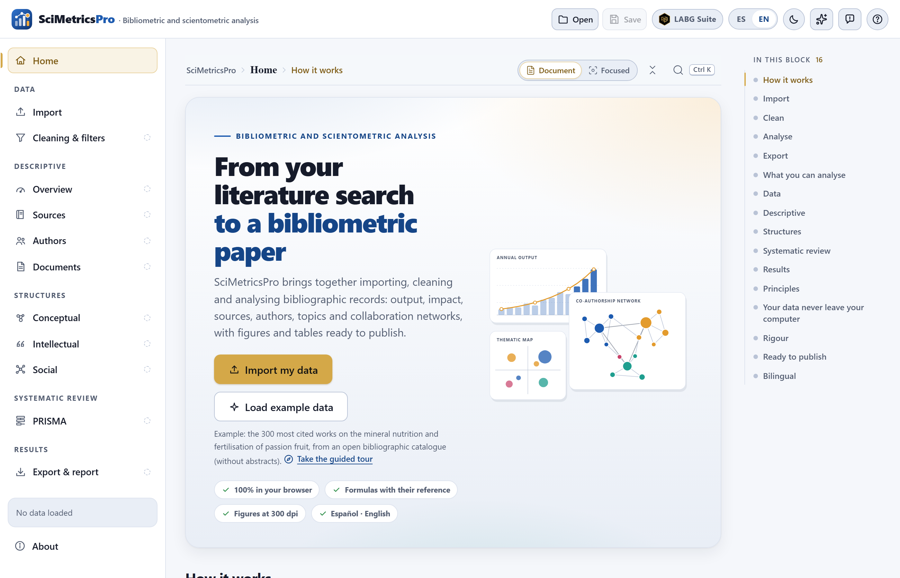
12345678
Figure 1.1. The app’s home page (Home), before loading data.
1Sidebar with the eleven modules in five groups: Data, Descriptive, Structures, Systematic review and Results.
2The dotted circle next to a module shows that it needs imported data; it disappears once you load them, and the modules you have already reviewed carry a gold check mark.
3Data status: how many records and from how many files. Below it, About.
4Open and Save a complete project (Chapter 2).
5Interface language (ES · EN) and switch between light and dark mode. Before them, LABG Suite returns to the suite portal; after them, Animations, Report a problem and Keyboard shortcuts (?).
6Import my data takes you to the Import screen.
7Load example data loads the 300 works of the example and opens the Overview.
8Take the guided tour: seven steps through the parts of the app.
0
Installations
It opens with a double click on index.html. It needs neither administrator rights nor an internet connection.
11
Modules
From the search string to the report, through cleaning, indicators, networks and systematic review.
What it does, in one table
Stage
What you get
Chapter
Search
From a tentative title or an idea, the concepts with their English terms and the search string written in the syntax of each search engine, ready to copy and paste.
3
Import
Reading several exports at once, from different databases and in different formats (CSV, tagged text, RIS, BibTeX and spreadsheets); direct search in an open bibliographic catalog; a table of available fields and notes on what is missing.
3
Cleaning
Duplicates across databases merged with the most complete field of each, author, institution and country variants, synonyms and stop words, filters by year, type, language, source, subject area and citations.
4
Description
Main information about the collection, annual production, citations per year, sources and Bradford zones, authors and Lotka’s law, h, g and m indices, institutions, countries, most cited documents and references, local citations, RPYS, words and trend topics.
5678
Structures
Word co-occurrence network, thematic map and evolution, factorial analysis, co-citation, bibliographic coupling, historiograph, and collaboration networks and world map.
91011
Systematic review
Document-by-document screening with keyboard shortcuts, editable reasons for exclusion and the PRISMA 2020 flow diagram; the analyses can use only the included documents.
12
Publication
Editable figures at 8.5 or 17 cm and 300, 600 or 1200 dpi, in PNG, TIFF, SVG or PDF; tables as spreadsheets; networks for other programs; a ZIP package and a report as a word-processor document with the methods written from your data.
13
Who is it for?
For anyone who needs to know the literature of a topic in depth and show it with numbers: graduate students preparing the theoretical framework or the state of the art of their thesis, researchers writing a bibliometric paper or a systematic review, groups that want to know where and with whom they publish, librarians who support evaluations and teachers of research methodology. Every indicator and every figure has a help button with its definition, its formula, how to interpret it and the original reference, which also makes the app a teaching tool.
1.2Questions it answers
A good analysis starts with a question. The following table translates the most frequent questions of a bibliometric study into the analysis that answers them and the chapter where it is explained.
Table 1.1. From the question to the analysis.
Question
Analysis that answers it
Chapter
Which words do I type into each search engine to find what I am looking for?
Concepts of the tentative title with their English terms and a search string in the syntax of each search engine.
3
I have results from three databases. How many distinct documents are there?
Duplicates by DOI and by very similar titles, with the same year and a compatible first author; merged and clean set.
4
Is research on my topic growing? Since when?
Annual scientific production, compound annual growth rate and average citations per year.
5
Which journals are worth searching and publishing in?
Most productive sources, Bradford core and impact of each source (h, g, m and citations).
6
Who are the reference authors? From which countries and institutions?
Most productive and most cited authors, Lotka’s law, institutions, countries and production map.
7
Which are the classic works that everyone cites?
Most cited documents, local citations within the set, most cited references and RPYS peaks.
8
Which topics are discussed and which are growing?
Most frequent words, trend topics, co-occurrence network, thematic map and thematic evolution.
89
Which schools of thought exist and how are they connected?
Co-citation of references, authors and sources; bibliographic coupling and citation historiograph.
10
Who collaborates with whom? How international is the topic?
Co-authorship networks among authors, institutions and countries, world collaboration map and timeline.
11
How do I document the selection of studies in my review?
Screening with reasons for exclusion and the PRISMA 2020 flow diagram.
12
How do I present all this in the paper?
Figures at journal size, tables, ZIP package and report with methods text.
13
1.3Five key ideas of bibliometrics
The whole app rests on five ideas. If they are clear to you, every chapter explains itself.
Figure 1.2. A bibliographic record and the units of analysis that come from its fields. Each module counts, relates or measures one or more of these units; if a field is missing from the export, the analyses that depend on it cannot be done (Table 1.3).
1The bibliographic record is the datum
Each document found in a database arrives as a record: title, authors with their affiliations, year, source, keywords, abstract, cited references, number of citations and DOI, among other fields. SciMetricsPro brings the records of every database into one model, so a paper exported from a citation index and another exported from an open catalog are analyzed together. What is not in the record cannot be analyzed: that is why the Import screen shows, file by file, what percentage of records carries each field.
2Units of analysis and ways of counting
Several units come out of the records: documents, sources, authors, institutions, countries, words and references (Figure 1.2). Each can be counted in two ways. In full counting, a paper with four authors adds one document to each of them; in fractional counting, it adds one quarter to each, and the sum over all authors gives back the number of documents. The first measures participation; the second, contribution. The app states which one each table uses and, where it makes sense, lets you choose.
3Production, impact and time
Production counts documents; impact counts the citations those documents received. Citations depend on the database that counts them, on the date of the export and on the age of the document: a paper from 2010 has been gathering citations for sixteen years and one from 2024 for barely two. That is why the app offers citations per citable year, citations normalized by the average of their year and a common reference year for every time-dependent calculation. Indices such as h (Hirsch, 2005) summarize production and impact in a single number: a source or an author has index h if h of their documents have at least h citations each.
4The classic laws: concentration and scattering
Scientific literature is highly concentrated. Bradford’s law (1934) says that, when sources are ranked from most to least productive and the documents are split into three thirds, the first third comes from a small core of sources and each following third requires multiplying the number of sources by an almost constant factor. Lotka’s law (1926) describes the same for people: the proportion of authors with x documents falls as 1/xβ, with β close to 2, so most authors publish only once and very few publish a lot. Both laws help to decide where to search and to recognize the central authors.
5Relations that form structures
Beyond counting, bibliometrics relates. Two words are related if they appear in the same document (co-occurrence; Callon et al., 1991): they reveal the conceptual structure, that is, which topics are discussed. Two references are related if the same document cites them together (co-citation; Small, 1973), and two documents are related if they cite works in common (bibliographic coupling; Kessler, 1963): they reveal the intellectual structure, the foundations on which a field is built. Two authors, institutions or countries are related if they sign together: they reveal the social structure. Figure 1.3 summarizes the three.
Figure 1.3. Three ways of relating records and the structure each one reveals. The networks of Chapters 9, 10 and 11 are built by repeating these links over all the documents of the set.
!Important · the numbers depend on the search
A bibliometric study describes the set of documents you found, not all the science on the topic. The search string, the databases consulted, their coverage of journals and languages, the date of the export and the cleaning decisions change the results. Always write down the string, the database and the date of each export: the report of Chapter 13 asks for them to write the methods, and without them nobody else can repeat your study. Citations measure attention received, not quality; use them to describe, not to judge works.
1.4Databases and formats it accepts
SciMetricsPro recognizes the format of each text file by its content, not by its extension (spreadsheets, by their extension), and brings it into the common model. You can load several files at once even if they come from different databases: repeated records are merged in Cleaning & filters. Table 1.2 summarizes what it accepts; Chapter 3 explains which options to tick when exporting from each database and Appendix A describes each format.
Table 1.2. Types of databases and formats the app reads.
Type of database
Formats
What it usually carries
Multidisciplinary citation indexes
CSV with all fields and references; two-letter tagged text or tab-delimited text with the full record and cited references; RIS; BibTeX.
Abstracts, affiliations, author and index keywords, cited references and number of citations.
Public biomedical index
Four-character tagged text (.txt or .nbib). Its summary CSV carries only basic fields.
Abstracts, affiliations, author keywords and index descriptors; it carries neither cited references nor number of citations.
Open bibliographic catalog
Search from the corresponding tab of Import; no files need to be exported.
Affiliations and countries, index words, number of citations and references as catalog identifiers.
Other search engines and reference managers
RIS or BibTeX from any origin; CSV tables, tab-delimited or spreadsheets (.xlsx, .xls, .ods) with recognizable headers (title, authors, year, DOI…).
Depends on the origin; the app shows which fields it found.
SciMetricsPro project
A .smp.json file saved with the Save button.
All the work: records, cleaning, decisions, parameters and figure settings.
Each analysis needs certain fields. Table 1.3 says what is lost when one is missing; the Import screen warns about the same as soon as you read the file, before you move on.
Table 1.3. Which analyses depend on each field.
If … is missing
you will not be able to do, or will do with less information…
Chapters
Cited references
Local citations, most cited references, RPYS, co-citation, bibliographic coupling, coupling map and historiograph.
810
Keywords
The conceptual structure will have to use word pairs from the titles or the abstracts.
89
Affiliations
Institutions, countries, production map and collaboration among institutions and countries.
711
Number of citations
Impact indicators: citations per document and per year, h, g and m indices, most cited documents and coupling map by global impact.
5678
Year
Annual production, growth, age, m index, thematic evolution, trend topics and historiograph for that record.
589
DOI
Duplicate detection will depend only on titles, years and authors, and will be less precise.
4
Abstract
Text analysis will use titles and keywords; PRISMA screening will show only the title.
912
✓Decision rule · what to do when a field is missing
If your records…
then…
carry no cited references
export again with the option that includes the references, or combine them with an export from a citation index that does carry them; duplicates are merged in Cleaning.
carry no author keywords
the app picks by itself the first field they do carry (index keywords or word pairs from the titles) and tells you; you can change it in Cleaning & filters.
come from databases that count citations differently
when they are merged, the highest number of citations of each document is kept; mention it in the methods.
include the current year
remember that this year is incomplete: filter it out before reading the growth rate and the trends.
If an analysis does not appear or comes out empty, the app tells you which field it lacks. Appendix D gathers those messages.
1.5What you need and how to open the program
Requirements
A desktop or laptop computer with a modern, up-to-date web browser.
A screen at least 1280 pixels wide. Below 900 pixels the sidebar turns into a menu, but networks and tables are best used on a large screen.
The app was tested with 10,000 records and more than 200,000 references; long calculations run in the background with a progress bar and a cancel button.
No installation or administrator rights are needed. The internet is only needed to search the open bibliographic catalog.
Contents of the folder
index.html
The app. Open it with a double click.
Open SciMetricsPro.bat
Optional start with a local server.
js/, css/, img/
The program’s code and logo.
data/
The example data and the world map.
vendor/
Third-party component and its license notices.
LICENSE
Text of the GPL license.
manual/
This manual.
Opening SciMetricsPro in three steps
Copy the whole folderSciMetricsPro to your computer, for example to Documents. Do not separate index.html from the other folders.
Double-clickindex.html. It opens in your default browser on the home page. The first time, the guided tour starts by itself; you can follow it or skip it.
ClickLoad example data to practice, or Import my data to load your exports.
iNote · opening with a local server
With a double click everything works. If you prefer to open the app from an address, use Open SciMetricsPro.bat: it starts a small server on your own computer (address http://localhost:9100) and opens the app in the browser. Nothing is sent to the internet. If you run it as administrator, you can also open the app from a phone or a tablet connected to the same wireless network.
iNote · your work is remembered
The app saves by itself a copy of your session in the browser (data, cleaning, decisions and parameters) and, when you open it again, asks whether you want to recover it. That copy lives in the browser and on the computer where you worked: to take your work to another machine or share it, save it as a project with the Save button in the header. Your original files are never modified. Chapter 2 explains this in detail.
1.6A tour of the interface
All the analysis modules share the same layout, so you only need to learn it once. From top to bottom, each screen has a header with the path and the name of the module, cards with the main indicators, tabs with the analyses and, inside each tab, figures and tables with their controls.
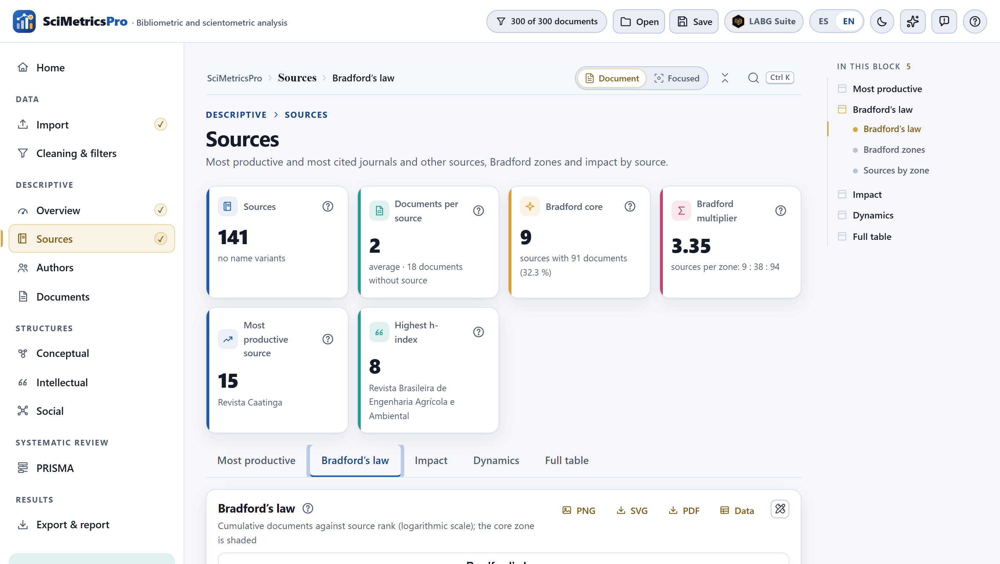
12345678910
Figure 1.4. The Sources screen with the example data and the Bradford’s law tab open.
1The open module is highlighted in the sidebar.
2Document counter: how many of the imported documents the analyses use. It is highlighted when there are filters; a click takes you to the filters.
3Path (group › module), name and description of the module.
4Indicator cards; the ? button opens their help (Figure 1.6).
5The module’s tabs. They can also be traveled with the keyboard arrows.
6Title of the figure with its own help.
7Quick downloads: PNG, SVG, PDF and the figure’s Data as a spreadsheet; the pencil button opens the figure in the figure studio.
8Navigator bar: path (app › module › section), reading mode Document or Focused, collapse every section and search the app (Ctrl K).
9In this block panel: the tabs and sections of the module; a click takes you to each one.
10LABG Suite returns to the portal of the family of apps SciMetricsPro belongs to.
The header and the navigator bar are shared by all the apps of the LABG Suite. In Document mode the module shows all its sections one after another; in Focused mode, a single section at a time, changed with Alt+arrows. Ctrl K opens a search box that takes you to any module, tab, section or figure, and from it you can also switch the theme or copy the link to the open tab.
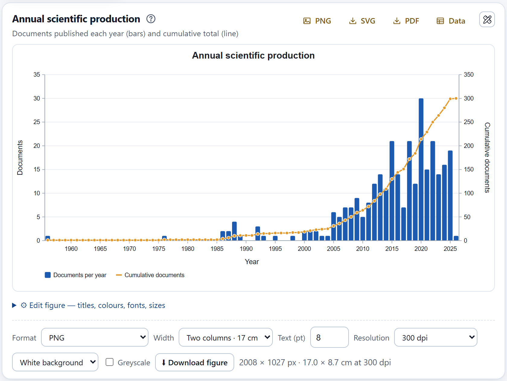
12345
Figure 1.5. The Annual scientific production figure of the Overview with its controls.
1Title, help button and subtitle stating what is drawn.
2Quick downloads with the settings chosen below.
3Edit figure — titles, colors, fonts, sizes opens the editor.
4Format, print width, text size in points, resolution and background.
5Grayscale, Download figure and the resulting size in pixels and centimeters.
Tables work the same throughout the app: they are sorted with a click on the header, have a Search… box, are split into pages and are downloaded as a spreadsheet (.xlsx) or as CSV. Networks are also explored with the mouse: the wheel zooms, dragging moves the drawing, a click on a node highlights its neighbors and opens its card, and the search box finds a term.
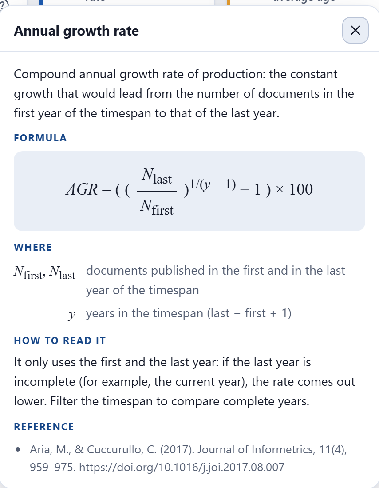
Figure 1.6. The help (?) of the Annual growth rate card.
The help of each indicator
Every card, figure and table has a ? button. Its window has four parts:
Definition: what it measures, in one or two sentences.
Formula and Where: the equation and the meaning of each symbol.
How to read it: which values to expect and when to be wary.
Reference: the original article of the method.
It closes with the ×, with the Esc key or with a click outside it. The formulas of all the indicators are also gathered in Appendix B.
Elements you will see in every module
Table 1.4. Common controls of the interface.
In the app
What it is for
300 of 300 documents
Header counter: documents the analyses use after cleaning and filters, out of all those imported.
Reference year
Year against which ages, citations per year and the m index are computed; by default, the current year.
Network parameters
Side panel of the networks: node selection, edge weights, communities and display.
Computing the network
Progress window of a long calculation, with Cancel.
Edit figure…
Titles, axes, colors, palette, sizes, legend and labels of the figure.
Data
Downloads the numbers the figure was drawn with, as a spreadsheet.
Open · Save
Complete project in a .smp.json file.
ES · EN
Language of the interface and of the figures; nothing is lost when you switch it.
iNote · a Cleaning decision applies to the whole app
Cleaning and filters are not a separate step you forget about: all modules read the same clean set. If you merge two variants of an author, drop a year with a filter or change the term field, the Overview, Sources, the networks and the report are recalculated with that change. The header counter always reminds you how many documents enter the analyses.
1.7The example data
The program includes a ready-to-use data set: the 300 most cited works on the mineral nutrition and fertilization of passion fruit (Passiflora edulis) in an open bibliographic catalog. The search, run on September 16, 2026, required the crop in the title and terms on fertilization or plant nutrition in the title or the abstract; it found 501 works and the 300 most cited were kept. They are real metadata under a public-domain dedication: titles, authors with affiliations and countries, sources, index words, references and number of citations. They include no abstracts. They are in data/example.js and are loaded with the Load example data button on the home page.
Open the home page with Home in the sidebar.
ClickLoad example data. If you already had data, the app asks for confirmation because the example replaces them.
Read the Overview, which opens by itself. The header counter says 300 of 300 documents and the sidebar, 300 records from 1 file.
Table 1.5. The example data in figures, from the Overview’s Main information (reference year 2026).
Indicator
Value
Reading
Timespan
1956–2026
71 years; 283 of the 300 works are from 2000 onward and the year with most works is 2020, with 30.
Documents
300
282 articles; the rest, conference proceedings, theses, chapters and one review.
Sources
141
Journals, books and proceedings; 18 works carry no source.
Authors
932
1,551 appearances in total; 11 documents have a single author.
Co-authors per document
5.17
Almost all work on the topic is done in teams.
Average citations per document
9.93
2,978 citations in total.
Average age
10.98 years
Relative to 2026.
International co-authorship
8.67%
26 documents with authors from more than one country; the country was recognized in 236.
Cited references
6,141
4,546 distinct works, in 236 documents.
▸The guiding example
Passion fruit accompanies the whole manual. With it you will see, in the following chapters, that the literature on its nutrition is published mainly in Brazilian journals (in Figure 1.4, the Bradford core is 9 sources that gather 91 documents), that teamwork is the norm, which topics form the core of the field and how to document a PRISMA screening on these same works. All the figures in this chapter were checked with an independent calculation on the data file, outside the app.
!Important · an example for practice, not a complete review
The example gathers the most cited works of a single database, so it exaggerates the weight of old, highly cited documents and leaves out recent ones that have not yet gathered citations. It also carries neither author keywords nor abstracts, and its references are catalog identifiers, without author or year: that is why, when it is loaded, the app chooses Index keywords as the term field by itself, and the RPYS stays empty. For a real study, combine exports from several databases with all their fields.
1.8Recommended workflow
The sidebar marks the natural order. The diagram summarizes the route, from the research idea to the report, with the detour of the systematic review and the project that saves everything at any moment.
Figure 1.7. A route through the app. The top row prepares the data; the bottom row analyzes and publishes them. The PRISMA detour is used in systematic reviews, and the dotted line reminds you that the topics found often suggest terms to refine the search.
Prepare the search in Import›Keywords: type your tentative title, review the concepts and copy the string for each search engine. Write down the string and the date.
Search and export in each database with all the fields and the cited references. From the open catalog you can download directly from the app.
Import all the files together and read the table of available fields and the notes: they tell you which analyses you will be able to do.
Clean: review the duplicates, merge author and institution variants, add synonyms, choose the term field and apply the filters of your design (years, document types, languages).
If it is a systematic review, screen in PRISMA and turn on Analyze only the included.
Analyze from the general to the particular: Overview, Sources, Authors and Documents; then the three structures. Always read the help (?) before interpreting a new number.
Export the figures and tables you will use, build the report with the methods and save the project to come back to it.
1.9How to read indicators, laws and networks
Almost everything the app produces comes down to three kinds of results: indicators (single numbers such as the h index), distributions compared with a law (Bradford and Lotka) and networks or maps that show relations. Reading them well avoids the most common mistakes: comparing citations of documents of different ages, reading a law as if it were a test of quality and giving meaning to the exact position of a node in a drawing.
hThe h index
The documents of a source or an author are ranked from most to least cited; h is the largest number such that h documents have at least h citations each. In the example, the source with the highest h index has h = 8: eight of its documents have 8 citations or more. It rewards consistency more than a single hit, and it grows with the years of activity; the m index divides it by those years.
BThe Bradford zones
In the example, the 141 sources fall into zones of 9, 38 and 94 sources, with 91, 97 and 94 documents. The multiplier, the average of 38/9 and 94/38, is 3.35: to gather each additional third of the documents you have to consult about three times as many sources. The 9 core sources are the first worth reviewing by hand.
!Important · the growth rate only looks at two years
The compound annual growth rate uses only the first and the last year of the timespan (Figure 1.6). In the example it is 0% because 1956 and 2026 have one document each, although Figure 1.5 shows an evident growth since 2005. Before quoting this number, filter a timespan with complete, representative years; otherwise, describe the growth with the annual production.
Reading a network
The co-occurrence, co-citation, coupling and collaboration networks are drawn with the same rules. Figure 1.8 summarizes them with a word network invented for the example.
Figure 1.8. The five keys for reading a network. In the app’s networks, nodes, thicknesses and colors are computed with the parameters of the side panel; each node’s card gives its exact numbers.
Reading a thematic map
The thematic map (Callon et al., 1991) places each community of words according to two measures: centrality, how strongly the theme is linked to the others, and density, how strongly its words are linked to each other. The medians of the themes split the map into four quadrants. The coupling map of Chapter 10 uses the same idea with impact instead of density.
Figure 1.9. The four quadrants of the thematic map. The size of each bubble is the frequency of the theme. A theme in the emerging or declining quadrant is told apart with the thematic evolution (Chapter 9), which shows whether it appears recently or comes from earlier periods.
✓Decision rule · before interpreting a network
If the network…
then…
is a tangle in which everything is linked to everything
raise the minimum co-occurrences per edge or lower the number of nodes: the structure appears once the weak links are removed.
has many loose nodes or communities of one or two words
lower the minimum frequency or review synonyms: the same idea written in several ways is split into different nodes.
changes communities when you move the resolution
that is normal: describe the groups that persist across several resolutions and report the one you used.
has very general words at the center
add them to the stop words or use a normalization (association strength, Salton) that does not reward frequency.
Always report the parameters: term field, minimum frequency, number of nodes, normalization, community algorithm and resolution. The report of Chapter 13 writes them for you.
1 in 3
Why the Bradford core matters when searching
In the example, one third of the documents with a source comes from 9 of the 141 sources. Reviewing the tables of contents of those journals by hand is the fastest way to find documents your search string did not catch; the remaining third, in contrast, is scattered over 94 sources with one document each, and that is where searches in several databases pay off most.
iNote · describing is not evaluating
That a journal is in the Bradford core or that an author has the highest h index in your set says that they concentrate the literature of your search, not that they are better. With another string, another database or another timespan the ranking changes. Present the indicators as a description of the set, together with the string, the database and the date, and leave judgments of quality to the reading of the works.
With these foundations you are ready to go through the modules. The next chapter presents the app’s home page, how to save and recover your work, the guided tour and the help that accompanies each indicator.
2
Chapter two
Home, project and help
The app’s home page and what accompanies all the work: the language and the theme, the project that saves your data and decisions in a file, the automatic copy that is recovered when you come back, the guided tour, the help of each indicator, the About page and keyboard use.
2.1The home page and the workflow
2.2Language and theme
2.3Saving and opening a project
2.4Autosave and recovery
2.5The guided tour and the help
2.6About: license and how to cite
2.7Keyboard and accessibility
2.1The home page and the workflow
The home page (Home) is the entrance: it summarizes what the app does, offers the two ways to start and shows in which order the modules are best visited. It opens when you enter, and you can return to it at any moment with Home in the sidebar or with a click on the logo in the header.
The upper part, which you saw in Figure 1.1, has the Import my data and Load example data buttons, the description of the example, the Take the guided tour link and four guarantees: everything happens in the browser, each formula carries its reference, figures come out at 300 dpi and the interface is in Spanish and English. Three more sections follow below.
12345
Figure 2.1. The lower part of the home page: the workflow, the modules and the principles of the app.
1How it works: the four steps in order (import, clean, analyze and export).
2Each step card is a button that opens its module.
3What you can analyze: the eleven modules, grouped as in the sidebar.
4Each module, with its description, opens its screen with a click.
5Principles: privacy, rigor, results ready to publish and bilingualism.
The modules can be opened even when there are no data yet. In that case they show the notice Import data first with the same two buttons as the home page, so a screen is never left empty with no way out. In the sidebar, the dotted circle next to each module reminds you that it needs data; it disappears as soon as you load them, and a gold check mark marks the modules you have already reviewed.
The header and the navigator bar
The header and the bar below it accompany the home page and every module (Figure 1.4); they are the same in all the apps of the LABG Suite. In the header, besides the document counter, Open, Save, the language and the theme, there are LABG Suite, which returns to the portal of the family of apps; Animations, which turns the waiting animations on or off across the suite; Report a problem, which opens in the browser a notice for the authors with your browser details already filled in, and Keyboard shortcuts (?). The navigator bar shows the path (app › module › section), the reading mode—Document, every section one after another, or Focused, one section at a time—, a button that collapses or expands every section and the app’s search box (Ctrl K), which takes you to any module, tab, section or figure. On the right, the In this block panel lists the sections of the open screen (on the home page, from How it works to Bilingual) and takes you to each one with a click.
▸Example · loading the example when data are already loaded
If you have already imported files and click Load example data, the app asks “Loading the example replaces the data you have loaded. Continue?”. If you accept, it removes your files, loads the 300 works and opens the Overview. Since the example carries no author keywords, a notice at the bottom of the screen says that Index keywords was chosen as the term field. If you do not want to lose your work, save it first as a project (Section 2.3).
4
Steps
Import, clean, analyze and export: the order of the sidebar.
11
Modules
In five groups: Data, Descriptive, Structures, Systematic review and Results.
2.2Language and theme
The controls on the right of the header change the language and the appearance of the whole app. Both changes are immediate, restart no calculation and are remembered by the browser for the next visit.
123
Figure 2.2. The Overview of the example data with the interface in Spanish and in dark mode.
1ES · EN: the active language is highlighted.
2Theme button: the moon switches to dark mode and the sun back to light.
3Menus, titles, cards, help and figure labels change language; the numbers do not change.
The language
The app opens in Spanish the first time. When you click EN, the texts of the interface, the help, the messages, the table titles and the figure labels change, including the names of countries and languages, which take the form of the chosen language. What comes from your records is not translated: titles, keywords and the names of journals and institutions are shown as the database exported them. Your data, your cleaning and your parameters are kept when you switch language.
iNote · the report has its own language
The report with the methods text is written in Spanish or in English as you choose in Export & report›Report, without changing the language of the interface. You can work in Spanish and deliver the report in English for a journal (Chapter 13).
The light or dark theme
Until you choose, the app follows the theme of your operating system. When you click the theme button, your choice is saved and takes precedence over the system’s. Dark mode is for working on screen; figures are always downloaded with White background, unless you choose Transparent (PNG) in the figure bar, so the theme does not affect what you publish.
2.3Saving and opening a project
A project is a file with all your work: the imported records and every decision you made about them. It serves to continue another day, to take the work to another computer, to share it with your collaborators and to keep a record of how the results were obtained.
Table 2.1. What a project saves and what it does not.
Saves
Does not save
The complete imported records and the list of files, with their searches in the open catalog.
The clean set already computed: it is recomputed on opening, with the same decisions, and comes out identical.
The cleaning: duplicates separated by hand, author merges, institution and country aliases, synonyms, stop words, term field, filters and reference year.
The language and theme of the interface, which are preferences of whoever uses the app.
The decisions and reasons of the PRISMA screening and the option to analyze only the included documents.
The access key of the open catalog, which is only remembered in your browser if you tick it.
The parameters of each module, the open tab, the settings of each figure and the export and report options.
The original files you imported, which are never modified.
Saving
ClickSave in the header. The button is disabled while there are no data.
Wait for the noticeProject saved: …. The browser downloads a file named scimetricspro_project_YYYY-MM-DD.smp.json, with the day’s date.
Move it to a folder of your work and, if you save several times on the same day, rename it to tell the versions apart.
The file is compressed. With the example data it weighs about 355 KB, while its uncompressed content takes up about 2.6 MB. It grows with large collections: with 10,000 records it is around 12 MB and saving it takes a few seconds, during which the app shows the notice Saving the project….
Opening
ClickOpen and choose a .smp.json file. Uncompressed projects are also accepted.
Confirm if you already had data: opening a project replaces the loaded data and decisions.
Carry on where you left off. The app recomputes the clean set, returns to the screen you had open and reports how many records and files it opened.
Table 2.2. Messages when opening a project.
Message
What it means
The file is not a SciMetricsPro project.
You chose another kind of file (an export, a report) or the file is damaged. Exports are loaded in Import.
The project was saved with a newer version (…).
Whoever saved it uses a later version of the app. Update your copy of the program.
The project could not be opened: …
Another problem reading the file; the text after the colon gives the detail.
θWhy the project saves records and decisions, not results
A bibliometric study is reproducible when someone else can start from the same records, apply the same decisions and arrive at the same numbers. That is why the project does not save finished tables or figures: it saves the starting data and every decision, and the app redoes everything on opening. A practical advantage is that nothing is frozen: a merged duplicate can be separated, a filter can be removed and a synonym can be corrected even if the project comes from another computer.
!Important · before sharing a project
The project includes the records as you exported them, with abstracts, keywords and references. Subscription databases often limit the redistribution of that content. Share the project with the people working with you on the study; to publish your data, use the results tables or the list of documents exported in Chapter 13, and check the terms of use of each database.
2.4Autosave and session recovery
Besides the project you save yourself, the app saves by itself a copy of the session in your browser’s storage. If you close the tab by accident, the computer shuts down or the browser restarts, when you open SciMetricsPro again you will be able to recover the work.
When it is saved: a second and a half after each change (data, cleaning, screening, screen or language), every ten seconds while data are loaded and the moment you close or leave the tab.
What it saves: the same as a project (Table 2.1). The records are written again only when the files change, so the following copies are instantaneous.
Where: in the browser and on the computer where you worked. It does not leave your machine and is not shared between browsers.
1234
Figure 2.3. The question when the app is opened again after working with the example data.
1It appears when the app opens without data and a saved copy exists.
2Date and time of the copy, and the records and files it contains.
3Recover restores everything and returns to the screen you were on.
4Discard deletes the copy and starts from scratch.
While the question is open the app saves nothing, so as not to erase the copy before you decide. If instead of answering you import other files or load the example, the question closes and the new work replaces the previous copy. Removing all the files in Import (Remove all) also deletes the copy.
✓Decision rule · automatic copy or project
If you need to…
use…
continue tomorrow on the same computer
the automatic copy; just click Recover.
work on another computer or in another browser
a project saved with Save.
share the work or deliver it with a paper or a thesis
a project, with name and date, together with the report.
keep how the study was before a big change (new filters, another search)
one project per stage: the automatic copy only keeps the last session.
The automatic copy is a safety net, not a backup: clearing the browsing data or using a private window removes it.
2.5The guided tour and the help
The guided tour
The first time you open the app in a browser, a seven-step tour starts that points out the main parts. You can follow it, go back or skip it at any moment, and repeat it whenever you want with Take the guided tour on the home page.
12345
Figure 2.4. Step 3 of the guided tour.
1The part of the app the step talks about is highlighted.
2Step number and title.
3Progress dots: one per step.
4Skip the tour closes it at any step.
5Back and Next; on the last step, Finish.
Table 2.3. The seven steps of the tour.
Step
Title
What it points out
1
Welcome to SciMetricsPro
The app in general and the privacy of the data.
2
Import your records
Import: several databases at once, the open catalog and the example.
3
Clean and filter
Cleaning & filters and the header counter.
4
Analyze
The descriptive modules, the structures and the ? button of each indicator.
5
Systematic review
Screening with the keyboard and the PRISMA 2020 diagram.
6
Export and write
Figures, tables, networks, the ZIP package and the report.
7
Save your work
The Save button, the automatic copy, the language and the theme.
With the keyboard, → moves forward, ← goes back and Esc closes the tour. On narrow screens, the steps that point at a module first open the sidebar menu.
The help of each indicator
The ? button accompanies the indicator cards, the figures, the tables, the parameter groups of the networks and the export options. Its window, which you saw in Figure 1.6, explains what the indicator measures, gives its formula with the meaning of each symbol, says how to interpret it and cites the original article of the method. On the Import, Cleaning and Export screens, which compute no published indicators, the help explains the rule the app applies.
iNote · the notices at the bottom of the screen
Confirmations (300 example records were loaded.), warnings and errors appear for a few seconds at the bottom of the screen, in plain language and in the active language. Errors explain what happened and, when possible, what to do; there is no need to open any console.
2.6About: license and how to cite
The About page, at the end of the sidebar and in the page footer, gathers the formal details of the program: version, authorship, license, how to cite it and third-party components.
1234567
Figure 2.5. The About page.
1Name and version of the program you are using.
2ORCID of each author: it opens their profile.
3Link to the full text of the license.
4Citation as text and in BibTeX format, for a reference manager.
5Copy the citation copies both forms to the clipboard.
6Third-party components and data, each with its license.
7Link to the full third-party notices.
§The license in a nutshell
SciMetricsPro is distributed under the GNU General Public License, version 3 or later. You may use the program for any purpose, study how it works, share it and modify it. If you distribute a modified version, it must keep the same license and its code must be available. The program comes without warranty. The third-party components keep their own licenses: the spreadsheet reader (Apache 2.0), the country outlines (public domain) and the example data (CC0 1.0).
▸Example · citing the program in the methods section
Cite the version with which you obtained your results. The report of Chapter 13 writes the sentence for you, with the version and the year; in English it reads: “Indicators, networks and figures were computed with SciMetricsPro [version] (Barrera-Guzmán & Ramírez-Ojeda, [year]), which applies the published formula of each method in the browser”, and it adds the full reference of the program to the reference list, together with the articles of the methods you used.
2.7Keyboard and accessibility
The whole app can be used without a mouse. The keyboard focus is always visible, windows keep it while they are open and figures carry a name that screen readers read out.
Table 2.4. Keys of the app.
Keys
Where
What they do
Tab · Shift+Tab
The whole app
Move to the next or previous control. The first Tab shows the Skip to content link.
Ctrl+K
The whole app
Opens the app’s search box: modules, tabs, sections, figures and actions such as switching the theme.
Alt+←→
The whole app
Previous or next module; in Focused mode, previous or next section.
?
Outside a text field
Opens the Keyboard shortcuts window.
Enter · Space
Buttons, checkboxes, cards
Activate the control with the focus.
←→
Tabs of a module
Switch to the previous or next tab.
Esc
Help, tour, menu
Close the help window, the guided tour or the menu on narrow screens.
←→ · Esc
Guided tour
Previous or next step; close.
+−0 · arrows · Esc
Interactive network with the focus
Zoom in, zoom out, fit; move the drawing; clear the selection.
Enter
Search box of a network
Searches for and selects the typed term.
IEDU · ←→
PRISMA screening
Include, exclude, doubtful, undo; previous or next document (Chapter 12).
Narrow screens
123
Figure 2.6. The app at 400 pixels wide with the menu open.
Below 900 pixels wide the sidebar turns into a menu opened with the button in the header, and the header buttons show only their icon. Below 760 pixels the header takes two lines: on top, the menu button, the logo and the name; below, the tools. The app works the same on a tablet or a phone, although networks and large tables are best used on a wide screen.
1The menu button, to the left of the logo; with the menu open it turns into an × that closes it.
2The document counter, shortened, at the start of the second line.
3Open and Save with their icon only; their name appears when you point at them and is read by screen readers.
iNote · accessibility
All screens were checked in light and dark mode: every button and every field has a name, images have alternative text, figures are announced with their title and texts meet the minimum contrast recommended for reading. If you use a screen reader, the table of each figure (Data button) gives the same numbers in a format that can be traversed cell by cell.
With the app now familiar, the next chapter begins the work with the data: how to turn your research idea into search strings, what to export from each database and how to import the files.
3
Chapter three
Import data
How to turn a working title into a search string for each academic search engine, what to export from each database, how to gather several files into a single set, how to read the table of available fields and the notes, and how to download records straight from the open bibliographic catalog.
3.1From the idea to the search string
3.2The concepts and their terms
3.3One string for each search engine
3.4What to export from each database
3.5Loading files and combining databases
3.6Fields, notes and preview
3.7Searching the open catalog
The Import screen has three tabs that match three moments of the work. The first, Keywords, prepares the search before you have any data. The second, Files, receives the exports from the databases. The third downloads records from the open bibliographic catalog without exporting files. The screen opens on Files; with the focus on the tabs, the arrow keys ←→ move from one to the other.
iNote · the names of the databases in this chapter
So that you can recognize each export, the Import screen shows the trade names of the databases, and that is how they appear in the screenshots. The text of the manual uses generic descriptions: multidisciplinary citation index A and B, public biomedical index, open scholarly search engine, linked research database, regional journal index and open bibliographic catalog. The cards of the app and the rows of the tables in this chapter follow the same order.
3.1From the idea to the search string
A systematic literature search is not done with a loose phrase typed into a search engine: the question is broken down into concepts, each concept is written in all its forms (synonyms, variants, scientific names) and the concepts are combined with logical operators. The Keywords tab does that work from your working title or research idea. The app does not search: it suggests the concepts, writes the string in the syntax of each search engine, and you copy it, paste it into the search engine of your choice and export the results. Everything happens on your computer; the title is not sent to any service.
θTheory in brief · search blocks
Each concept of the question is a block. Within a block, the terms are joined with OR: it is enough for a document to use any one of them. Between blocks, AND is used: the document must touch every concept. So more terms within a block widen the search (they find documents that say the same thing in other words) and more blocks narrow it. Quotes search for an exact phrase and the asterisk truncates a word: fertiliz* finds fertilizer, fertilizers and fertilization.
Figure 3.1. The structure of every string the app writes, with some of the terms of the example in this chapter.
Writing the idea
OpenImport›Keywords. If there are no data yet, you also get there with the link Prepare the keywords of your search on the Files tab.
Write your working title or idea, in Spanish or in English. Mention the organism or population, the variable or treatment and the outcome you are interested in.
Choose where to search: Title, abstract and keywords (the usual choice) or Title only (more precise, but it misses documents). Type the Publication years (optional) if you want to narrow the period.
ClickSuggest keywords. The concepts appear and, below them, the strings for each search engine. The button changes to Suggest again; if you have already edited the concepts, the app asks for confirmation before replacing them.
12345678910
Figure 3.2. The Keywords tab with the title Efecto de la fertilización nitrogenada en el rendimiento del maracuyá en Veracruz (effect of nitrogen fertilization on passion fruit yield in Veracruz) and the period 2000–2026.
1The working title or research idea.
2Fields to search: title, abstract and keywords, or the title only.
3Publication years, optional.
4Suggest the concepts, or suggest them again.
5Language recognized in the title and what the app did with it.
6Number and type of the concept (topic, organism or place) and the part of the title it came from.
7Separate, Join with the previous one, and Remove.
8The terms of the concept, one per line; they can be edited.
9A place starts unticked: the checkbox includes it in the search.
10Add concept creates an empty block.
What the app does with the title
The app cuts the title into phrases at prepositions, articles and punctuation, drops generic research words (effect, analysis, study, evaluation) and looks each phrase up in a built-in bilingual glossary, which always prefers the longest phrase it knows: fruit quality is one concept, not two. The glossary has 587 entries: 323 concepts, 106 organisms with their common and scientific names, 67 modifiers (such as organic or nitrogen), 62 places and 29 generic words that are dropped. With a title in Spanish, the terms are written in English, the language of most abstracts, and the Spanish term is kept at the end.
Table 3.1. The concepts of the example title, as the app suggests them.
Part of the title
Type
Suggested terms
In the search
Efecto de… (effect of)
—
Generic word: dropped.
—
la fertilización nitrogenada (nitrogen fertilization)
passion fruit · passionfruit · Passiflora edulis · maracuyá
●
en Veracruz (in Veracruz)
Place
Veracruz
◐ unticked
θRules the app applies when separating concepts
Noun and modifier are joined in English word order: fertilización orgánica gives organic fertilization.
“And” and “or” (y, o) make alternatives of the same concept, and a stand-alone modifier takes the preceding noun: fertilización nitrogenada y potásica gives one block with the terms of nitrogen fertilization and of potassium fertilization. In English, nitrogen and potassium fertilization shares the noun in the same way.
An organism next to other nouns is separated into its own block: common bean landraces gives the organism common bean (Phaseolus vulgaris) and the topic landraces (local varieties).
Whatever is in parentheses is joined to the preceding concept as a synonym.
Places start unticked, and in titles written In Title Case the capital letters are not taken as place names.
Words the glossary does not know are kept in their own concept with the warning Not in the glossary, except scientific names and proper nouns, which are used as they are.
3.2The concepts and their terms
The suggested concepts are a starting point. You know your topic better than any glossary: add the synonyms your discipline uses, the regional variants and the scientific names of other species that interest you. Every change updates the strings of all the search engines at once.
Table 3.2. How the concepts are edited.
Control
What it does
Checkbox Concept n
Includes the concept or leaves it out without deleting it. An unticked concept looks dimmed.
Terms box
One term per line. Phrases are written without quotes: the app adds them as each search engine requires. The asterisk truncates: fertiliz*.
Separate
Splits into different concepts (joined with AND) a concept that gathered alternatives, such as nitrogenada y potásica. It is active only in those concepts and as long as you have not edited their terms.
Join
Joins the concept with the previous one: their terms end up in a single block with OR.
Remove
Deletes the concept.
Add concept
Creates an empty block where you write its terms.
▸Worked example · an English title with four concepts
With Nitrogen and potassium fertilization of common bean landraces under drought, the app recognizes English and suggests four concepts: fertilization with nitrogen and potassium (8 terms, with the spellings fertilization and fertilisation, fertilizer and fertiliser), the organism common bean with Phaseolus vulgaris, landraces with local varieties, and drought. If you are interested only in potassium, click Separate on the first concept and remove the nitrogen one; if drought is not part of your question, untick that concept.
✓Decision rule · adjusting the search by the number of results
If the search engine returns…
then…
too many results, many unrelated to the topic
search the title only, add a concept that narrows the scope (the organism, the type of study) or remove terms that are too general.
very few results
untick the place and the secondary concepts, add synonyms and variants, truncate with * the words with several endings and widen the period.
a reasonable number of results, but papers you know are missing
check how those papers name their topic and add those terms to the matching concept.
more than four ticked concepts
the app warns that the search may become too narrow: untick the least important ones.
Two or three concepts are usually enough. A good sign of a sensitive search is that it finds the key papers you already know.
3.3One string for each search engine
The same strategy is written differently in each search engine: the names of the fields, the truncation rules and the way of asking for years all change. The Strings to copy and paste card has eight boxes, one per search engine, each with its ready-made string, a Copy button, the number of characters, where to paste it and what to export afterwards for SciMetricsPro.
123456
789
Figure 3.3. The strings of the example: above, the first four search engines; below, the open catalog, other search engines and the reminder of the formats.
1Copy puts the string on the clipboard and confirms it with a message.
2The string, in the syntax of that search engine.
3Its length in characters and, where applicable, how many terms were removed.
4Where to paste it and what its fields mean.
5What to export from that database for SciMetricsPro.
6Long strings scroll inside their box.
7Passes the string and the years to the open catalog search tab (Section 3.7).
8Reminder: several files can be uploaded, from different search engines and in different formats.
9Goes to the Files tab.
Table 3.3 summarizes the syntax rules the app applies. The truncation column shows what happens to three test terms: fertiliz*, nit* and the truncated phrase nitrogen fertiliz*.
Table 3.3. Syntax of each search engine, in the order of the app’s cards.
Search engine
Fields
Years
Truncation
Multidisciplinary citation index A
TITLE-ABS-KEY(…) or TITLE(…) for the whole string
PUBYEAR > 1999 AND PUBYEAR < 2027
No restrictions: fertiliz*, nit* and "nitrogen fertiliz*" are kept.
Multidisciplinary citation index B
TS=(…) or TI=(…)
PY=(2000-2026)
At least 3 letters before *: nit* yes; ni* is removed.
Public biomedical index
[tiab] or [ti] after each term
2000:2026[dp]
At least 4 letters before *: nitr* yes; nit* is removed.
Open scholarly search engine
title:, abstract: and keyword: for each concept
year_published:[2000 TO 2026]
No * inside phrases: nitrogen fertiliz* is written (nitrogen AND fertiliz*).
Linked research database
No fields: title and abstract are chosen on the page
With the page’s year filter
Same as the previous one.
Regional journal index
No fields
With the page’s year filter
Truncates with $: fertiliz$.
Open bibliographic catalog
No fields: the search tab searches title and abstract
Passed to the search tab
No truncation: terms with * are removed.
Other search engines
No fields
Not written
No truncation, so that the string works in most of them.
With the example title and the period 2000–2026, the string for multidisciplinary citation index A has 279 characters:
TITLE-ABS-KEY(("nitrogen fertilization" OR "nitrogen fertilisation" OR "nitrogen fertilizer" OR "fertilización nitrogenada") AND (yield OR "crop yield" OR rendimiento) AND ("passion fruit" OR passionfruit OR "Passiflora edulis" OR maracuyá)) AND PUBYEAR > 1999 AND PUBYEAR < 2027
and the one for the public biomedical index marks the field on every term:
("nitrogen fertilization"[tiab] OR "nitrogen fertilisation"[tiab] OR "nitrogen fertilizer"[tiab] OR "fertilización nitrogenada"[tiab]) AND (yield[tiab] OR "crop yield"[tiab] OR rendimiento[tiab]) AND ("passion fruit"[tiab] OR passionfruit[tiab] OR "Passiflora edulis"[tiab] OR maracuyá[tiab]) AND 2000:2026[dp]
▸Worked example · truncated terms in a search engine that does not accept them
If the first concept has fertiliz*, nitrogen fertiliz* and manure, and the third only yield*, the string for the open bibliographic catalog becomes manure AND ("passion fruit" OR "Passiflora edulis") AND yield with the note 2 truncated terms were removed: this database does not accept *. The two truncated terms are removed from the first concept because manure remains. The only term of the third cannot be removed, so its root, yield, is kept. Check these notes: a concept left with poor terms should be completed with the whole words.
iNote · why the Spanish terms stay in the string
The term in your language (fertilización nitrogenada, maracuyá) is kept at the end of each concept because many Latin American journals also publish titles, abstracts or keywords in Spanish or Portuguese. It does no harm in the English-language indexes and it retrieves documents in the regional databases. If you do not need them, delete them from the terms box.
3.4What to export from each database
Once the search returns a reasonable number of results, export all the records with all their fields. Whatever is not in the export cannot be analyzed (Table 1.3), and the cited references are what is most often left out, because they are usually a separate option. The Files tab has the Supported formats list with the export options of each database, by name; Table 3.4 summarizes them.
Table 3.4. What to export from each type of database to make the most of every analysis.
Database
Recommended format
Watch out for
Multidisciplinary citation index A
CSV with every group of fields and the option that includes the cited references. Also BibTeX or RIS with the same options.
Without the references option there will be no co-citation, coupling, historiography or RPYS.
Multidisciplinary citation index B
Plain text (or tab-delimited) with the full record and the cited references. Also BibTeX with the same content.
Export in batches of 500 records if there are more, and upload all the batches together.
Public biomedical index
The index’s own format, in tagged text (.txt or .nbib).
Its summary CSV carries no abstracts, keywords or affiliations. None of its formats carries references or citations.
Open scholarly search engine and linked research database
RIS or BibTeX.
Check in the fields table whether affiliations and citations came along.
Regional journal index
RIS.
It usually carries abstracts and DOIs, but no affiliations or citations.
Open bibliographic catalog
Download inside the app (Section 3.7).
Its references are catalog identifiers, without author or year.
Reference managers and other sources
RIS or BibTeX; or a CSV table or spreadsheet with recognizable headers.
The fields depend on what the manager stored.
!Important · write down the string and the date
On the day you export, write down for each database the exact string you used, the filters you applied on the search engine’s page, the number of results and the date. Databases are updated daily, and a search repeated weeks later does not return the same thing. The report of Chapter 13 asks for these data for each file and writes them into the methods; searches in the open catalog store them by themselves.
3.5Loading files and combining databases
The Files tab receives all the exports. You can load several files at once, from different databases and in different formats: each one is read in the background, its format is recognized from its content and its records are added to the set. Records repeated across files are not touched here: they are merged in Cleaning & filters (Chapter 4).
12345
Figure 3.4. The Files tab before loading data.
1Area for dropping files dragged from your folder.
2Choose files opens the file picker; with data loaded it reads Add more files.
3Link to the Keywords tab, shown only while there are no data.
4Supported formats: open without data; it folds up once data are loaded.
5Card for spreadsheets and tables with recognizable headers.
Gather in one folder the exports of all the databases. File names appear in the table, in PRISMA and in the report: descriptive names (maracuya_indice_a.csv) save you confusion.
Drag them together onto the dashed area, or click Choose files and select them all with Ctrl.
Wait for the reading. With large files a progress window with Cancel appears; if you cancel, nothing is added. When it finishes, a message says how many records were added.
Check the files table, the available fields and the preview (Section 3.6), and go on with Go to Cleaning & filters.
1234567
Figure 3.5. Six real exports from four different databases, loaded together.
1Total records and files imported.
2Remove all, with confirmation; it also deletes the automatic backup.
3Notice that you combined different databases.
4Database and format detected. A RIS or BibTeX file of unrecognized origin shows only the format.
5Records read and size of each file.
6Plain-language notes on what the file lacks (Table 3.5).
7Removes that file and its records.
▸Worked example · six files, 402 records, 328 documents
Figure 3.5 shows six real exports: multidisciplinary citation index A in CSV (24 records) and in RIS (277), the public biomedical index in its own format (20) and in its summary CSV (20), the regional journal index (45) and a publisher’s platform (16), these last two in RIS. Five come from searches on passion fruit; the index A CSV comes from a search on another topic. In all, 402 records. In the header, the counter already reads 328 of 328 documents: on loading, the cleaning merged the 74 records repeated across files (Chapter 4). The count of each file was checked by reading the files outside the app.
iNote · repeated files, encoding and spreadsheets
A file with the same name and size as one already loaded is skipped, with the message … was already imported and was skipped.
Files are read as UTF-8. If a file comes in another encoding, the app reads it as Latin-1 and warns you: check accented letters and the letter ñ in the preview.
From a spreadsheet (.xlsx, .xls, .ods) the first sheet with data is read. If the sheet or a CSV starts with a single-cell note above the headers, that note is skipped.
3.6Available fields, notes and preview
The table of available fields
Below the files table, Available fields shows what percentage of the records carries each field, first in the total and then in each file. The bar is green from 80%, amber between 30 and 80% and red below that; an empty field stays gray.
1234
Figure 3.6. The available fields of the six exports.
1The Total column comes first, next to the field name.
2The DOI reaches 93%: duplicate detection will be precise.
3Only 6% carry cited references: it is the only field in red.
4With many files, the table scrolls to the right.
▸Worked example · reading the table before analyzing
In Figure 3.6, 375 of the 402 records carry a DOI (93%), but only 24 carry cited references (6%): those of the index A CSV, which moreover comes from another search. The RIS export of the same index, with the 277 passion fruit records, was made without the references option. With these files, the intellectual structure and the RPYS would rest on 24 documents that are not even on the topic. The fix is to export the passion fruit search again with the references before going on. Citations (75%, 301 records) and affiliations (80%) come only from the index exports, so the impact and country indicators will mostly describe those records.
The notes of each file
Table 3.5. Notes in the files table and what to do about them.
Note
When it appears
What to do
No cited references… · Only N% of the records carry cited references.
No record, or fewer than half, with references.
Export again with the references option, or combine with a citation index.
No abstracts…
No record with an abstract.
Use keywords or titles as the term field.
No keywords…
No record with author or index keywords.
Use word pairs from titles or abstracts.
No affiliations… · The country was recognized in only N% of the records.
No affiliations, or country in fewer than half.
Combine with another database; in Cleaning, add country aliases.
No citation counts…
No record with a citation count.
Normal in the biomedical index and in many RIS files; impact will be computed with the others.
Only N% of the records carry a DOI…
DOI in fewer than half.
Review the duplicates more carefully (Chapter 4).
N records have no publication year. · N records without a title were skipped.
Incomplete records.
Those without a title are not imported; those without a year are left out of the analyses by year.
Table of unrecognized origin…
A table or spreadsheet that does not come from a known index.
Check in the preview that title, authors and year were read.
The file was not UTF-8…
Another character encoding.
Check accented letters in the preview.
The file format was not recognized. · No records were found in the file. · The file could not be read…
The file is not a bibliographic export, or it is empty or damaged.
Export again in one of the formats of Table 3.4.
The preview
12345
Figure 3.7. The preview with the example data.
1Search within the table.
2Rows shown and pages.
3Download of the table as a spreadsheet or CSV.
4A click on a header sorts by that column.
5Long texts are cut short with an ellipsis.
The preview shows the first 100 records as the app read them: authors, year, title, source, citations, keywords, number of references, countries and source file. It is used to check that each field landed in its place, above all with tables of unrecognized origin and with files in another encoding. Name changes and duplicates are seen later, in Cleaning & filters.
3.7Searching the open bibliographic catalog
The third tab downloads records straight from an open bibliographic catalog, with a public-domain license, without exporting files. It is the only feature of the app that uses the internet, and it connects only when you click the count or download buttons.
123456789
Figure 3.8. The search form after passing it the example string from the Keywords tab.
1Terms, searched in title and abstract; they accept quotes, AND, OR and NOT.
2Publication period.
3Maximum records: 5,000 by default; the most cited are downloaded first.
4Document types; with none ticked, all are included.
5Languages; same as the types.
6All, open access only or closed only.
7Free access key, optional, and a checkbox to remember it.
8The results are counted first.
9Warning about the coverage of the catalog.
Type the terms or pass them from Keywords with the button on the open catalog card, which also copies the years.
Adjust the filters and the maximum number of records.
ClickCount results. The app sends a single query and says how many records it found and in how many pages they would be downloaded.
Confirm withDownload, or go back with Change the search. The download runs in the background with a page-by-page progress bar and a cancel button; if you cancel, nothing is added.
Check the new row in Files: it carries the search string as its name, and the date and time of the query.
123
Figure 3.9. The count for the example string with the years 2000–2026, on November 1, 2026.
1Records found by the search.
2How many will be downloaded and in how many pages; if they exceed the maximum, a warning says the most cited will be taken.
3Download starts the download; Change the search goes back to the form.
▸Worked example · a very narrow string
The three-concept string of the example found only 9 records in the open catalog when this figure was taken (8 when the Spanish edition was prepared, in September 2026). Searching at once for nitrogen fertilization, yield and passion fruit in the title or abstract is too strict for a topic with little literature. By removing the yield concept, or widening the first one to mineral nutrition and fertilization in general, the search grows: that is how the search behind the example data was built, which found 501 works. The number changes over time, as the catalog is updated.
The access key and the usage limits
The open catalog delivers records in pages of up to 200 and limits how many pages can be requested per day. Without a key, the free allowance is about 100 pages a day, some 20,000 records. With a free access key, obtained by registering with the catalog, the limit is higher. The key is optional: it is sent only to the catalog and it is stored in your browser only if you tick Remember the key on this computer. It never travels in the projects.
If the catalog asks to wait or does not answer, the app retries by itself up to five times, waiting 1, 2, 4, 8 and 16 seconds, and shows the retry on the progress bar.
Table 3.6. Messages of the open catalog search.
Message
What to do
… did not answer. Check your internet connection…
Check the connection and count again.
… is not accepting more requests for now (daily usage limit)…
Wait until the next day, or type a free access key.
… rejected the access key…
Check the key, or leave the field empty.
… did not accept the search: …
Check the quotes and parentheses of the terms; the text after the colon gives the details.
Without an access key the free daily allowance will probably not cover the whole download.
It appears before downloading many pages: lower the maximum number of records or use a key.
!Important · coverage of the catalog and methods
The coverage of the open catalog is not the same as that of the citation indexes: it may include documents those indexes do not have and miss others, and it counts citations in its own way. Its references arrive as catalog identifiers, useful for co-citation, coupling and historiography, but without author or year, so they cannot be used for the RPYS. The app stores the string, the filters, the number of results, the records downloaded and the date of each search, and the report writes them into the methods. If you combine the catalog with other databases, the duplicates are merged in Chapter 4.
With the data imported and checked, the next chapter explains how to turn the records from several databases into a clean set: duplicates, author variants, institutions and countries, synonyms and filters.
4
Chapter four
Cleaning and filters
How to turn the records from several databases into a clean set: merge repeated documents, join the variants of the same author, unify institutions and countries, group the forms of the same keyword and leave out what does not belong to the study. Everything decided here feeds the eleven analyses of the chapters that follow.
4.1Why clean before analyzing
4.2The summary and the term field
4.3Duplicates
4.4Author name variants
4.5Institutions and countries
4.6Keywords: synonyms and stop words
4.7Filters
The Cleaning & filters screen has six tabs that are worked through in order. The first four correct the data; the fifth groups the forms of the keywords; the last trims the set to the period, document types or languages of interest. None of them deletes anything: the imported records are kept exactly as they were read, and every decision can be undone.
Table 4.1. The six tabs of Cleaning & filters.
Tab
What it solves
Section
Summary
How many records came in, how many documents remained and which field the terms will be counted with.
4.2
Duplicates
The same document downloaded from two or more databases.
4.3
Authors
The same person written with different initials.
4.4
Institutions & countries
The same organization written in several ways, and affiliations without a recognized country.
4.5
Keywords
Singulars and plurals, hyphens, typos and words without content.
4.6
Filters
Years, document type, language, source, subject area and minimum citations.
4.7
4.1Why clean before analyzing
A freshly imported bibliographic set is almost never ready. If you searched several databases, the same article arrives two or three times, with titles written differently and with different citation counts. Each database writes author names its own way: some give only initials, others the full name, and it only takes one of them writing a particle (“dos”, “de”, “van”) for the same person to appear twice in the list of most productive authors. Affiliations mix department, university, city and country in a single line of text, sometimes in English and sometimes in the language of the country. And keywords coexist in singular and plural, with and without hyphens, with the full and the abbreviated scientific name.
None of this is a flaw of the databases: they are different catalogs, built with different rules. But if it is not corrected, the indicators are wrong in the same direction: the number of documents is overestimated (duplicates), one person’s output is split among several (name variants) and a topic is scattered among many words (spelling variants). A Bradford core, a Lotka’s law or a co-occurrence network computed on dirty data is technically correct and substantively false.
Figure 4.1. The path of the data. Every change in a tab runs the whole path again and recomputes all the results.
!Important · nothing is deleted
The imported records are never modified. The app stores decisions (this group is merged, these two signatures are the same person, this term prefers that form) and builds the clean set from them every time. That is why you can untick a merge, undo an author join or remove a synonym and everything goes back to its place, even after saving and opening the project.
4.2The summary and the term field
The Summary tab is the dashboard of the cleaning: four cards with the before and after, the table of records per file and the choice of the field with which terms are counted across the app.
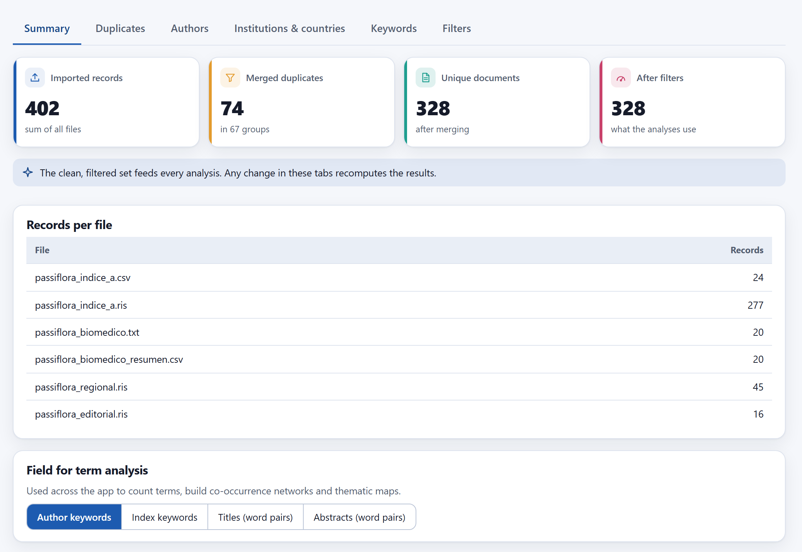
123456
Figure 4.2. The summary of the cleaning with the six exports of Chapter 3: 402 records become 328 documents.
1The six tabs; the arrow keys ←→ move from one to the next.
2Records that were merged and in how many groups.
3What the analyses use; the subtitle warns if filters are active.
4Reminder: any change in these tabs recomputes the results.
5Records read from each file, with the same numbers as the Import screen.
6Field with which terms are counted across the app.
Table 4.2. The four summary cards.
Card
What it counts
Example
Imported records
Sum of the records of all files and searches, before cleaning.
402
Merged duplicates
Records that disappeared when merged with another, and in how many groups.
74 in 67 groups
Unique documents
What remains after merging: the clean set.
328
After filters
Documents that meet the global filters; it is what the analyses read.
328
The field for term analysis
Several analyses—the most frequent terms, the co-occurrence network, the thematic map, the thematic evolution and the factorial analysis—need a list of terms per document. The app offers four possible sources for that list, and the choice holds for the whole session and for the report.
Table 4.3. The four term fields.
Field
What it is
When to use it
Author keywords
The ones the authors wrote in the article.
By default. They reflect the language of the researchers; they are the most widely used in bibliometrics.
Index keywords
The ones the database assigns with its controlled vocabulary.
When author keywords are missing, or to compare with a thesaurus; they are more uniform and more numerous.
Titles (word pairs)
Pairs of consecutive words from the title, without stop words.
When the records carry no keywords at all.
Abstracts (word pairs)
The same pairs, taken from the abstract.
When you want the full vocabulary of the text; it yields many more terms and more noise.
If the documents do not carry the chosen field, the app does not leave the screen empty: it picks by itself the first field that does exist, announces it with a message and explains it on the card. The saved preference does not change: it comes back as soon as the data carry it.
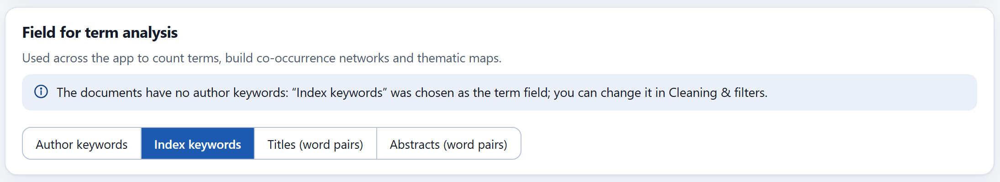
Figure 4.3. The example data come from the open catalog, which carries no author keywords: the app chose the index keywords and says so.
✓Decision rule · which term field to use
If your records…
choose…
carry author keywords in almost all of them
Author keywords; review the synonyms first (Section 4.6).
come from a single database with a controlled vocabulary
Index keywords; the terms are already unified by the database.
mix databases and author keywords appear in only a few
Both: compare the counts and keep the one that best describes your topic.
carry no keywords (many RIS files and the open catalog)
Titles if there are few documents, Abstracts if there are many and you want more detail.
Changing the field recomputes the counts, networks and maps as soon as you choose it; nothing has to be imported again.
4.3Duplicates
Two records are the same document when they share the DOI or when, with no DOI contradicting them, they have identical or nearly identical titles, the same year and a compatible first author. The app makes that comparison by itself when the import finishes and presents each group for you to approve or reject.
θTheory in brief · how titles are compared
Comparing every title with every other would be unworkable: with 402 records there are more than 80,000 comparisons, and with 20,000 records, two hundred million. The app uses the sorted neighborhood method (Hernández and Stolfo, 1995): it sorts the normalized titles alphabetically, and again reading them backwards, and compares each one only with its immediate neighbors. So a title that differs at the beginning is found in the second pass, and one that differs at the end, in the first.
The comparison itself is the edit distance (Levenshtein, 1966): the minimum number of letters that have to be inserted, deleted or changed to go from one title to the other. The similarity is 1 − distance ÷ length of the longer title, so 0.95 means “they differ in less than 5% of their letters”. The computation stops as soon as the distance exceeds the threshold, so very different titles are discarded in a few steps.
Three safeguards are added to the similarity, because two different articles can have almost identical titles: the numbers in the title must match (“Part I” is not “Part II”), the year must be the same (one year apart is allowed only between different files, because one database dates the online publication and another the print one) and the surnames of the first author must be compatible. If both records carry a DOI and the DOIs differ, they are never grouped.
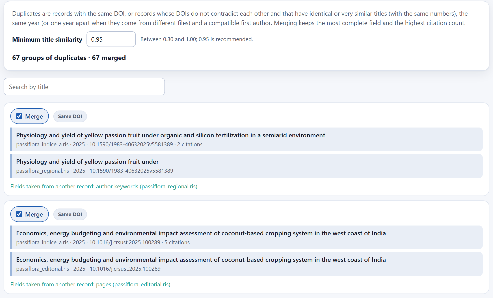
1234567
Figure 4.4. Two of the 67 duplicate groups of the example, both from a DOI shared between different databases.
1Minimum title similarity, between 0.80 and 1.00.
2Groups found and how many are being merged.
3Searches for a title within the groups.
4Untick Merge to keep the records apart.
5Why they were grouped (Table 4.4).
6File, year, DOI and citations of each record in the group.
7Fields the merged document took from another record, with its file.
Table 4.4. Reasons shown by each group.
Label
What it means
What to do
Same DOI
The records share the digital identifier.
Accept; it is the strongest evidence.
Title N% similar
Neither contradicts the other with its DOI, and the titles match to that percentage, with the same year and a compatible first author.
Read both titles. At 100% it is usually safe; below 96% it is worth a look.
Same DOI and similar title
The group was formed both ways (it happens in groups of three or more).
Accept.
Different DOIs: check
A record without DOI joined two records whose DOIs do not match.
Compare carefully; if they are not the same document, untick Merge.
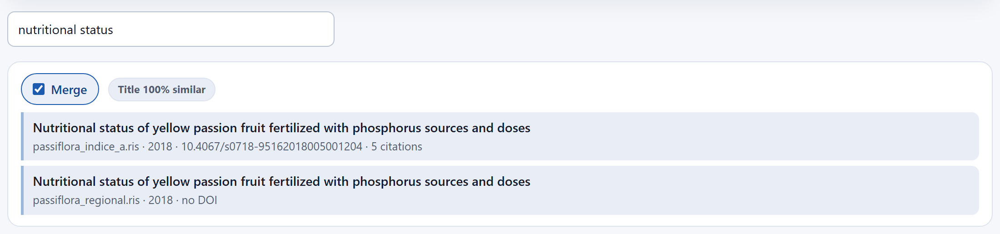
123
Figure 4.5. The only group of the example that was not found by the DOI: the regional index record does not carry one.
1Searching by title brings a specific group into view.
2Reason: the normalized titles are identical.
3The second record reads no DOI; when merged, the document keeps the DOI and the 5 citations of the first.
What the merged document keeps
Merging does not mean choosing one record and throwing away the rest: a new one is built with the best of each. The most complete record serves as the base, and the empty fields are filled in with those of its companions.
Table 4.5. How each field is resolved when a group is merged.
Field
Rule
Abstract and funding text
The longest is kept.
Title, source, volume, issue, pages, DOI, publisher, language, document type
The base record’s is kept; if it is empty, that of the first record that carries it.
The list with the most authors carrying an affiliation; on a tie, the longest.
Number of citations
The highest of all the records in the group.
Open access, ISSN, ISBN, countries
They are combined: it is enough for one record to say so.
▸Worked example · 402 records, 67 groups, 328 documents
In the six exports of Chapter 3, 67 groups were formed: 66 by shared DOI and 1 by identical title (the one in Figure 4.5). They are 61 pairs, 5 trios and one group of four records, that is, 74 records that disappear and 328 unique documents. The most frequent overlaps were the RIS file of multidisciplinary citation index A with the regional journal index (34 groups), the two exports of the public biomedical index with each other (14), the publisher’s platform with index A (13) and the public biomedical index with index A (5); a single document was in all four files at once.
Merging does not just remove records: 54 of the 67 merged documents gained some field that their base record lacked. The most frequent were author keywords (32 documents), followed by pages (18), the biomedical index identifier (5), the author list (5), the abstract (4) and index keywords (4). The 67 groups, the 74 records and the 328 documents were checked with an independent reader that read the six files outside the app.
iNote · the threshold, the size of the set and reversibility
Threshold. 0.95 is the recommended value. Lowering it to 0.90 finds more pairs and also more false positives (articles of the same series); raising it to 1.00 groups only titles identical letter by letter. Changing it searches for the groups again and keeps the decisions you have already made.
Large sets. With more than 3,000 records the search runs in the background, with a progress bar and a cancel button; meanwhile the screen shows Looking for duplicate records….
Reversibility. Unticking Merge puts the records back into the set at once, and the decision is saved in the project. The list shows 25 groups and grows with Show 25 more.
What it does not do. The same document published twice with different DOIs (a preprint and the final version, for example) is not detected by DOI; if the titles match, it does appear as a title group.
4.4Author name variants
All names are written in a single form, Surname, I., taking the initials of the given names. Differences that do not change that form—accents, hyphens, capitalization, spaces, lower-case particles—are joined automatically: Cadena-Iñiguez J. and Cadena Iniguez, Jorge are the same key without you having to do anything.
What the app does not decide by itself is the opposite case: two signatures with the same surname and the same first initial, but different following initials. It may be the same person (one database wrote all their given names and another only one) or two different people from an academic family. That decision is yours, and the tab gives you the evidence to make it: how many documents each variant signs and how many co-authors it shares with the main variant.
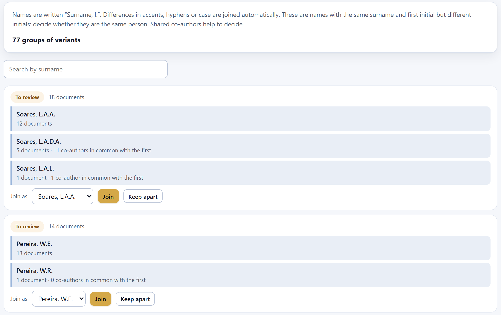
12345
Figure 4.6. The first two groups of variants of the example, sorted by number of documents.
1Groups of variants left to review.
2Status of the group: To review, Joined or Kept apart.
3The most frequent spelling heads the group.
4Documents of each variant and co-authors in common with the first.
5Join as sets the name that remains; Join or Keep apart apply the decision, after which Undo is offered.
▸Worked example · one person and two people
The first group in Figure 4.6 gathers three signatures with the same surname and initial. Soares, L.A.A. appears in 12 documents and Soares, L.A.D.A. in 5, and these two share 11 co-authors: they are the same person, written by one database with the initials of her two maternal surnames and by another including the particle (“Lauriane A. dos A.” versus “L.A.D.A.”). The third, Soares, L.A.L., signs a single document and shares one co-author: there is no evidence to join it, and the prudent choice is Keep apart, or to join only the first two.
The second group is the opposite case: Pereira, W.E. (13 documents) and Pereira, W.R. (1 document) share no co-author. They are two people. The figures were checked by reading the six files outside the app: the 12 appearances of the first signature and the 5 of the second correspond to 17 different documents, with the same 11 co-authors in common.
✓Decision rule · join or keep apart
If the variants…
then…
share several co-authors and work on the same topic
join them under the most complete or most frequent spelling.
share no co-author
keep them apart; they are almost always different people.
share one or two co-authors and one signs a single document
check the document (corresponding author, affiliation) before deciding; when in doubt, keep them apart.
are many and the study is not about authors
review only the first groups: they are sorted by number of documents, and those at the bottom barely move the indicators.
Joining or separating changes productivity, Lotka’s law, impact by author and the collaboration network; it does not change the number of documents.
iNote · which name is kept
Once the group is joined, the whole app shows a single spelling: the one you choose in Join as. If you join nothing, each key still keeps the most frequent spelling among those appearing in the documents, so the lists do not show the form of a single database. Joins travel in the project and are recovered when it is opened.
4.5Institutions and countries
Affiliations arrive as a single line of text that mixes laboratory, department, faculty, university, city, postal code and country. To count institutions, you have to decide which of those parts names the organization. The app splits the line at the commas and prefers the part that contains a full organization word (university, institute, college, academy, hospital, council, foundation…) over the one that names a subunit (department, faculty, school, laboratory, unit, program). It then writes out the abbreviations of tagged exports in full (Univ → University, Natl → National, Agr → Agricultural) and puts names written entirely in capitals into title case. Finally, spellings that differ only in accents, capitalization or spaces are counted as a single institution, with its most frequent spelling: Paraíba and Paraiba are the same. The same rule applies in this table, on the Authors screen and in the collaboration network.
The country is taken from the end of the affiliation, with a dictionary of its own that recognizes the usual forms of each name in several languages. Whatever it does not recognize can be resolved with an alias.
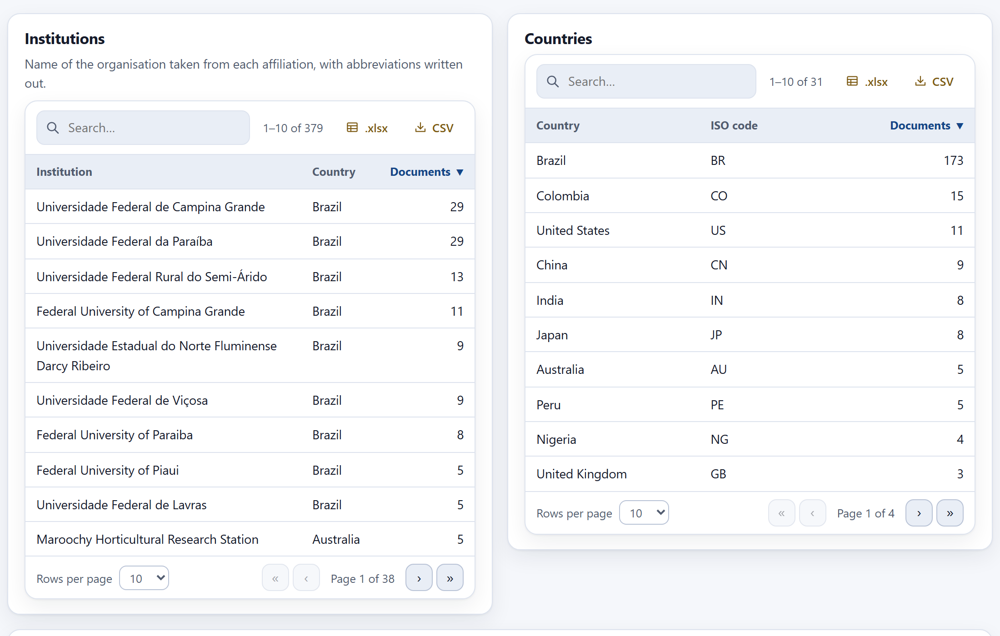
123456
Figure 4.7. Institutions and countries of the example data (300 documents, 238 with affiliation), which you can load with one click to reproduce this screen.
1Search within the table.
2Name of the organization, deduced from the affiliation.
3The same university written in English appears separately: it is joined with an alias.
4Countries with their ISO code and number of documents.
5Download of the table as a spreadsheet or CSV.
6Rows per page and navigation between pages.
Below the tables there are two equivalence forms. The first unifies institution names: you type the name as it appears in the table and the preferred name. The second assigns a country to an affiliation text, and below it comes the list of the most frequent affiliations whose country was not recognized, with an Assign button that copies them into the form.
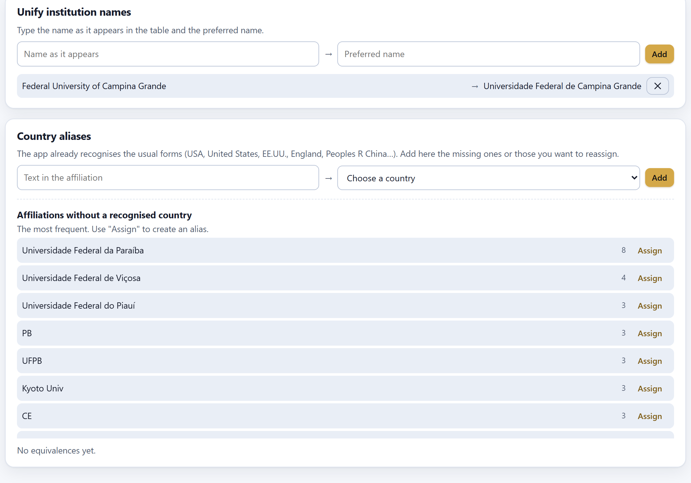
1234
Figure 4.8. An institution equivalence already added and the list of affiliations without a recognized country.
1Name as it appears → preferred name.
2Each equivalence is applied at once to the tables and to every analysis.
3Affiliation text → country from the list.
4Frequent affiliations without a country; Assign takes them to the form.
▸Worked example · the same university in two languages
In the example data, Universidade Federal de Campina Grande appears in first place with 29 documents, tied with Universidade Federal da Paraíba, and two rows below is Federal University of Campina Grande with 11: they are the same institution, written in Portuguese by some sources and in English by others. When the equivalence of Figure 4.8 is added, the table shows 40 documents in a single row, which is left alone in first place, and the total of distinct institutions drops from 379 to 378. The next row, Federal University of Paraiba with 8, is the same case for the other university and is solved the same way.
!Important · how far automatic recognition goes
Deducing the institution from a line of free text is never exact. The app prefers the part of the affiliation that names the full organization over departments, units and programs (“Academic Unit of Agricultural Sciences, Universidade Federal de Campina Grande” counts for the university), but an affiliation written only in acronyms, such as “PPGA/CCA/UFPB”, leaves rows like PPGA or UFPB, which are not recognized as the university. If your study counts institutions, review the first rows of the table and fix with equivalences whatever looks wrong: it takes a few minutes and changes the result. The same goes for countries: the example has affiliations that end in the name of the university or in an acronym (“UFPB”, “PB”, “CE”) instead of the country, and only an alias places them.
iNote · where the equivalences are stored
Institution and country equivalences, like synonyms, stop words and the term field, are remembered on this computer and also travel inside the project. So the work of one study is reused in the next without typing it again, and when a project is opened on another computer the equivalences come with it.
4.6Keywords: synonyms and stop words
The Keywords tab has four parts: the term field (the same as in Section 4.2), the list of most frequent terms, the synonym suggestions and the two lists you can edit—the synonym table and the stop words.
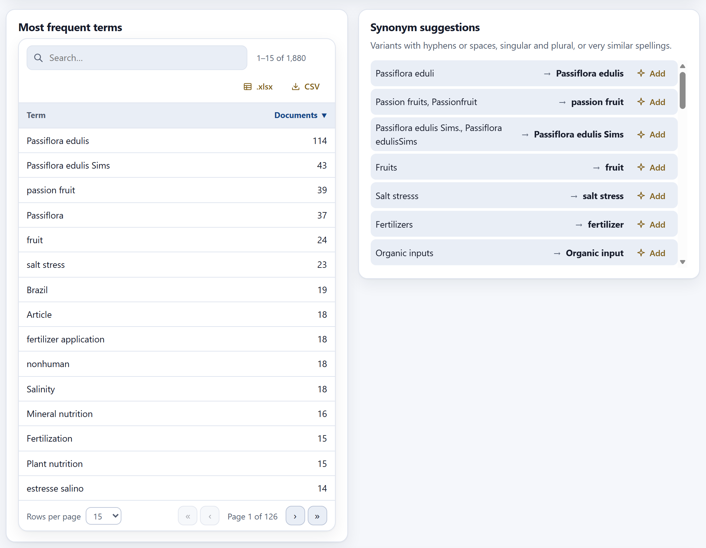
123
Figure 4.9. The most frequent terms of the example and the synonym suggestions the app makes.
1Distinct terms in the chosen field.
2Each term with the number of documents that use it; it is sorted and downloaded like any table.
3Variants the app proposes to join under a preferred term; Add sends them to the synonym table. The list scrolls with the side bar.
The suggestions come from three comparisons: spellings that match once spaces, hyphens and punctuation are removed; singulars and plurals; and very similar spellings (the same edit distance as in Section 4.3, with 90% similarity). The preferred term it proposes is the most frequent of the group. Nothing is applied until you click Add: the app suggests, you decide.
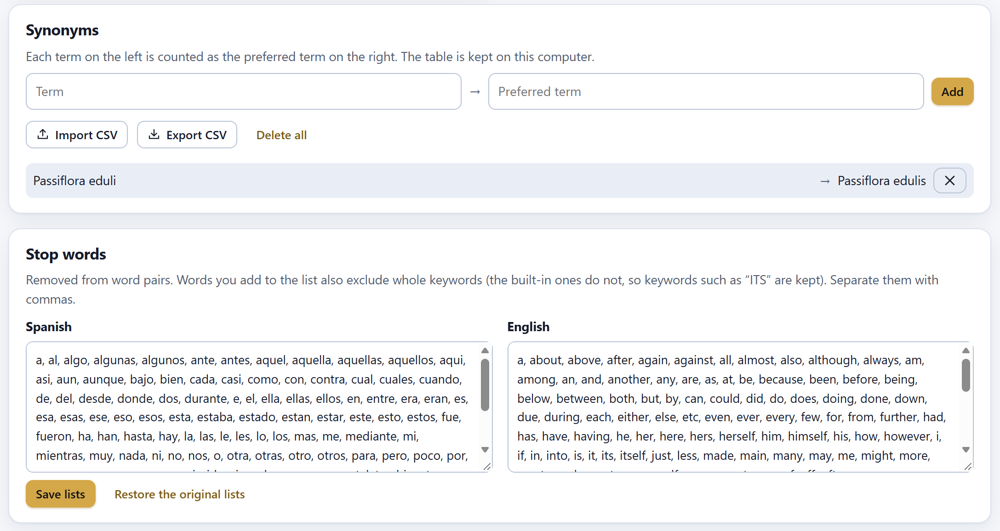
12345
Figure 4.10. The synonym table with the first pair accepted and, below it, the stop word lists.
1Adds a pair by hand: term → preferred term.
2Imports or exports the table as a two-column CSV, or deletes it entirely.
3Each pair is applied at once to the counts, networks and maps.
4Stop word lists in Spanish and in English, separated by commas.
5Save lists applies them; Restore the original lists goes back to the built-in ones.
▸Worked example · 19 ways of writing a botanical variety
The 328 works of the example carry 1,880 distinct author keywords. Among them there are 19 different spellings containing “flavicarpa”—Passiflora edulis f. flavicarpa, … Sims f. flavicarpa Deg., … Degener, … var. flavicarpa, Passiflora edulisf.flavicarpa and even two with the typo falvicarpa—spread over 40 appearances. Without unifying them, the most studied variety of passion fruit does not appear on any thematic map, because none of its forms gathers enough documents on its own.
Other cases are simpler and count too: Passiflora eduli (4 documents, one letter short) versus Passiflora edulis (114), Passion fruits (14) and Passionfruit (2) versus passion fruit (39), or Fruits (14) versus fruit (24). The counts were checked by counting the keywords of the six files outside the app.
iNote · what stop words do exactly
The built-in lists (articles, prepositions, method verbs such as study, results, evaluated) only break the word pairs of titles and abstracts: a pair never crosses a stop word, so terms such as “effect of” or “de la” are not formed.
The words you add do something more: they also exclude whole keywords. It is the way to remove indexing terms that say nothing about the topic, such as Article or nonhuman, which appear in 18 documents each in the example.
That is why the built-in ones do not exclude whole keywords: a legitimate keyword that matches an English stop word, such as “ITS”, the internal transcribed spacer, is not lost.
The lists are saved when you click Save lists; synonyms, on the other hand, are applied as soon as they are added.
✓Decision rule · how far to unify terms
Case
What is advisable
Singular and plural, hyphens, capitalization, obvious typos
Always unify; it is correction, not interpretation.
Full and abbreviated scientific name of the same species
Unify, and say so in the methods.
Field synonyms (salinity and salt stress)
It depends on the question: unifying simplifies the map, keeping them apart preserves the nuance. Decide once and document it.
Generic terms (agriculture, plants) or indexing terms (Article)
Send them to the stop words, not to the synonyms.
The synonym table is exported to CSV: keep it next to the project and publish it as supplementary material so that your study can be reproduced.
4.7Filters
Filters trim the clean set for all the analyses at once. They do not delete documents: they leave them out while they are active. With no option ticked, all are included, and each option shows next to it how many documents it has, so the screen also serves as a quick description of the set.
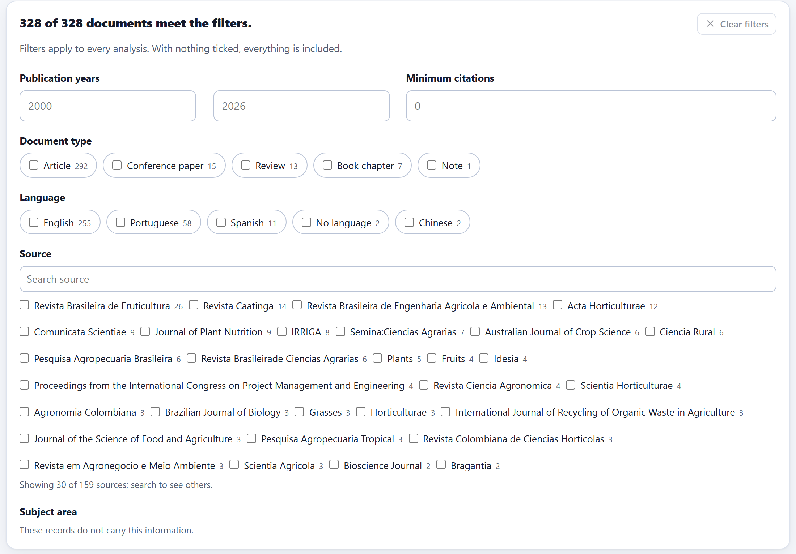
1234567
Figure 4.11. The six filters with the 328 documents of the example and the number of documents of each option.
1How many of the unique documents meet the filters.
2Clear filters, available only when one is active.
3Range of years; the boxes show in gray the first and last of the set.
4Minimum citations; it also leaves out records without a citation count.
5Document types with their number of documents.
6Source search: the 30 most frequent of the 159 are shown.
7When the records do not carry the information, the filter says so instead of staying empty.
Table 4.6. The six global filters.
Filter
How it works
When to use it
Publication years
Closed range. Documents without a year are left out as soon as you type either end.
To narrow the period of the study or compare decades.
Minimum citations
Keeps the documents with that number of citations or more.
To keep the literature that has had an impact; use it with care, it penalizes recent work.
Document type
Several checkboxes; a document is included if it is of any of the ticked types.
To exclude editorials, notes and errata, or to analyze reviews only.
Language
Same as the previous one; No language groups the records that do not carry it.
For a single-language study, or to measure how much local literature there is.
Source
The 30 sources with the most documents are shown; the search box finds the rest.
To focus on a set of journals or exclude an atypical one.
Subject area
The areas the database assigns, when it provides them.
To separate the agronomic part from the biomedical part of a broad search.
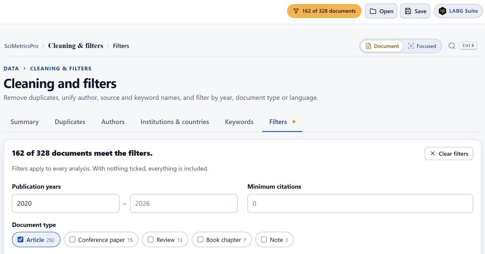
123456
Figure 4.12. With two active filters—from 2020 onward and articles only—162 of the 328 documents remain.
1The header counter turns amber and stays with you on every screen.
2A dot on the Filters tab reminds you that filters are active.
3The same count, with the details.
4Clear filters is now available.
5Start year typed; the end year stays at the last year of the set.
6Ticked checkbox, with the number of documents of that type.
▸Worked example · from 328 to 162 documents
Of the 328 documents of the example, 184 are from 2020 onward (a figure checked by reading the six files outside the app). When Article is also ticked, 162 remain: the other 22 are 8 reviews, 7 conference papers and 7 book chapters. With those filters on, the overview, sources, authors, networks and report describe only those 162 documents, and the methods the report writes record it.
!Important · filters must be declared
Filtering is a methodological decision, not a display setting. If you leave out a period, a document type or a language, say so in your article or thesis, with the number of documents before and after: it is part of the reproducibility of the study, just like the search string. The report of Chapter 13 writes that paragraph with the filters you have on, and the PRISMA diagram of Chapter 12 counts them as excluded records.
iNote · filters and systematic review
If you also do PRISMA screening (Chapter 12), the analyses can be restricted to the documents included in the review. The header counter then reads … documents · included only, and clicking it takes you to the PRISMA screen instead of the filters. The two cuts add up: first the filters, then the inclusion.
With the set clean and filtered, the analysis begins. The next chapter opens the Overview: the thirteen cards that summarize the collection, the annual production, the citations per year and the document types.
5
Chapter five
Overview
The first reading of the collection: how many documents, authors and sources there are, in what period they were published, how fast the literature grows, how much it is cited and what kinds of documents it contains. Thirteen cards, two figures and a table that sum up everything that comes after.
5.1What the overview answers
5.2The thirteen cards
5.3Annual scientific production
5.4Average citations per year
5.5Document types
5.6When there are filters or missing data
5.7Taking the figure and the data with you
With the collection cleaned and filtered, the analysis begins, and it begins with the most general: the size of the field, its pace and its impact. The Overview screen is the one you read first and the one you cite first in a paper: its thirteen cards are the “main information” table that opens almost every bibliometric study, with the definitions of Aria and Cuccurullo (2017).
5.1What the overview answers
The whole screen answers three questions, and it is best read in that order:
How large is the field? Documents, sources, authors and keywords. They are size figures: they tell you whether the topic is enough for a systematic review, for a thematic map or for a whole thesis.
How fast is it growing? The timespan, the annual production and the growth rate. They tell you whether the topic is taking off, stable or in decline, and whether the last year is complete.
How much is it cited and who collaborates? Average citations, co-authors per document, international co-authorship and cited references. They tell you how much attention the literature has received and how it is produced.
Every card carries a ? sign that opens its definition, its formula and a note on how to interpret it; the two figures download ready for publication, and the tables behind them export with one click.
!Important · the reference year
Above the cards there is a single control: the Reference year. By default it is the current year, and it is used in two time-dependent indicators: the average age of the documents (reference year − publication year) and the citations per citable year (the years elapsed since publication, counting the publication year as the first). If you are finishing a study with data downloaded last year, enter that year: then age and citations per year are not inflated by a year your data could not cover. The value travels with the project and appears in the report.
5.2The thirteen cards
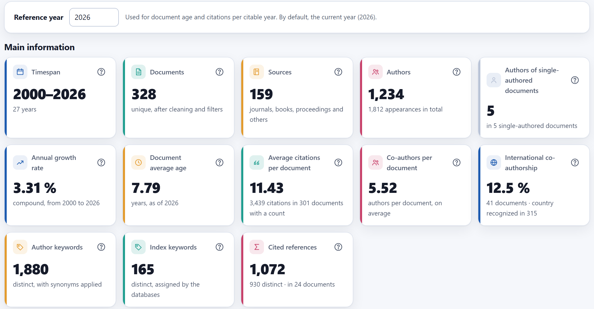
123456
Figure 5.1. The main information of the 328 example documents, with the reference year set to 2026.
1Reference year; change it if your data are from another year.
2Publication timespan and the number of years it covers.
3The ? sign of each card opens its definition and its formula (Figure 5.2).
4Compound annual growth rate between the first and the last year.
5The subtitle gives the detail: total citations and documents that carry a count.
6Cited references: total, how many are distinct and in how many documents.
Table 5.1. The thirteen cards, with the values of the example collection.
Card
What it measures
Example
Detailed in
Timespan
First and last publication year. Documents without a year do not count here, but they do in the other indicators.
2000–2026 (27 years)
5.3
Documents
Unique documents that every analysis works with.
328
Chapter 8
Sources
Distinct journals, books and proceedings, compared without case or accents and joined by ISSN.
159
Chapter 6
Authors
Distinct bylines (surname and initials, with the variants you joined). Appearances count every byline in every document.
1,234 · 1,812 appearances
Chapter 7
Authors of single-authored documents
People who are the sole author of at least one document.
5 · in 5 documents
Chapter 7
Annual growth rate
Compound growth that would lead from the documents of the first year to those of the last.
3.31%
5.3
Document average age
Years elapsed since publication, relative to the reference year.
7.79 years
5.1
Average citations per document
Mean of the citations reported by the databases, among the documents that carry a count.
11.43 · 3,439 citations in 301
5.4
Co-authors per document
Authors per document, on average.
5.52
Chapter 11
International co-authorship
Documents with authors from more than one country, among all documents.
12.5% · 41 of 328
Chapter 11
Author keywords
Distinct terms, with synonyms applied.
1,880
Chapter 9
Index keywords
Distinct terms assigned by the databases.
165
Chapter 9
Cited references
References in the bibliographies: total, distinct and documents that carry them.
1,072 · 930 distinct in 24
Chapter 10
The help of each indicator
The ? sign opens a card with four parts: the definition in words, the formula, the list of what each symbol means and a note on how to interpret it, with the reference of the paper where the indicator was defined. The structure is the same throughout the app, and the text of the card is the one worth paraphrasing in your methods section.
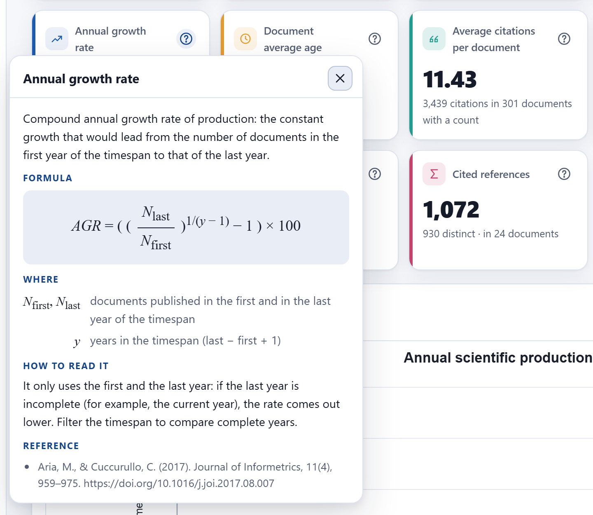
Figure 5.2. The help of the annual growth rate. It closes with the ✕, with Esc or by clicking outside it.
θTheory in brief · reading the cards together
Isolated numbers say little; the ratios between them say a lot. Documents ÷ sources measures editorial concentration: in the example, 328 ÷ 159 = 2.1 documents per source, a very scattered literature (Bradford’s law in Chapter 6 puts it in order). Appearances ÷ authors measures mean productivity: 1,812 ÷ 1,234 = 1.5 documents per author, typical of a field with many occasional participants (Lotka’s law in Chapter 7 formalizes it). Co-authors per document, together with the single-authored documents, describes the way of working: 5.52 authors per document and only 5 single-authored works point to an experimental field of large teams.
iNote · three cards that depend on what your files carry
Average citations. Only documents with a citation count enter: in the example, 301 of 328. If no database carries the figure, the card says so instead of showing a misleading zero.
International co-authorship. It needs affiliations with a recognized country: in the example, 315 of 328. The percentage is computed over all documents, so if many carry no affiliation it will come out low; the subtitle says in how many the country was recognized.
Cited references. Only 24 documents of the example carry their bibliography, and they yield 1,072 references (930 distinct). It is the same warning as in Chapter 3: without references there is no co-citation or coupling.
5.3Annual scientific production
The first figure counts how many documents were published each year (bars, left axis) and how many have accumulated (line, right axis). The two series answer different questions: the bars show the ups and downs —a conference, a special issue, a year with funding— and the line shows the shape of the growth: straight if the field grows at a constant pace, curved upward if it accelerates.
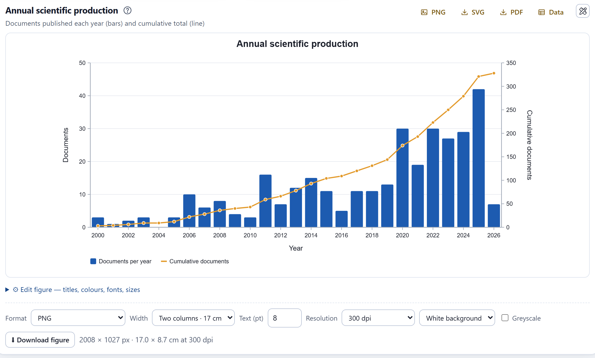
12345
Figure 5.3. The annual production of the example: from 3 documents in 2000 to 42 in 2025, and 328 in total.
1Subtitle: what the bars are and what the line is.
2Download of the figure as PNG, SVG or PDF, and of the data in the table.
3Legend: the bars use the left axis and the line, the right one.
4Edit figure: titles, colors, fonts and sizes.
5Format, column width, text size and resolution of the download.
▸Example · twenty-seven years of production
The example series starts with 3 documents in 2000 and 1 in 2001, stays below 10 until 2005, makes a first jump in 2006 (10) and another in 2011 (16), and takes off from 2020: 30, 19, 30, 27, 29 and 42 in 2025, the most productive year. The last value, 2026 with 7 documents, belongs to a year that was barely halfway through when the files were downloaded. In total, 328 cumulative documents. The full series was checked by counting the years of the six files outside the app.
The growth rate and its trap
The Annual growth rate card sums up the series in one number: the compound growth that would lead from the documents of the first year to those of the last. With the full example, from 3 documents in 2000 to 7 in 2026 over 27 years, it gives 3.31%. But the formula only looks at the two ends, and the right end is almost always incomplete: if the timespan is filtered to 2020–2026, the same formula goes from 30 documents to 7 and gives −21.54%, as if the topic were fading, when in fact 2025 was its best year.
✓Decision rule · how to report growth
Situation
What to do
The last year of the timespan is the current year
Filter up to the previous year and read the rate again; say so in your methods: “AGR 2000–2025”.
The first year has one or two documents
The rate shoots up because of the small denominator. Start the timespan at the first year with stable production and say so.
The series has large ups and downs
Report the rate together with the figure: one number does not describe an irregular series.
You want to compare two topics
Use the same timespan for both and check that the two searches were run on the same day.
The app does not correct the incomplete year for you: the decision is methodological and must be written down.
5.4Average citations per year
The second figure looks at citations by publication year. The bars give the average citations per document published that year; the line divides them by the citable years (the years elapsed from publication to the reference year, counting the publication year), so that distant years can be compared with recent ones.
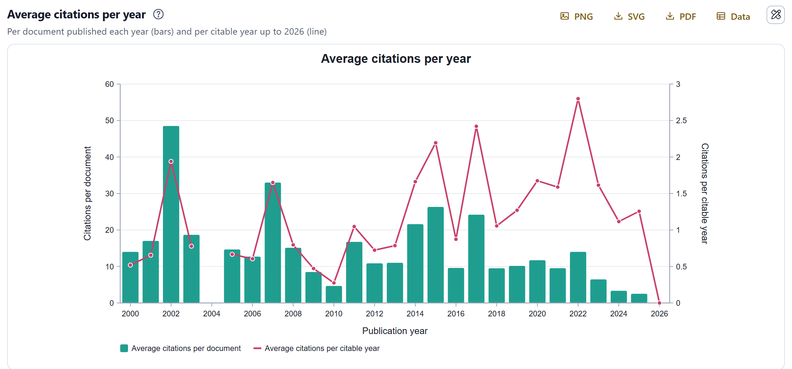
123
Figure 5.4. Average citations per year in the example, with the reference year set to 2026.
1The bars use the left axis (citations per document) and the line the right one (citations per citable year).
2A year with few, highly cited documents inflates the average: 2002 has 2 documents with 97 citations, that is, 48.5 per document.
3The line corrects for the effect of time and reveals the recent years that were well received.
θTheory in brief · why an old document looks better
Citations accumulate: a paper from 2002 has been receiving them for twenty-five years and one from 2024 for barely two. That is why the bars on the left are almost always taller, and why they are useless for deciding which year “produced better science”. Dividing by the citable years puts every year on the same scale of citations per year, which is what the line compares. Even so, two effects remain that no correction fixes: years with very few documents have unstable averages (one highly cited paper is enough), and citations keep arriving after the download, so the whole figure is a snapshot of a specific date.
!Important · where the citations come from
The number of citations is the one each database reports at export time, not a count of the app’s own: each index counts the citations it sees within its own coverage, so the same document can carry different numbers depending on the file. When duplicates are merged (Chapter 4), the highest is kept. Documents without a count do not enter any average, and in the example they are 27 of 328: almost all from the public biomedical index and from the RIS files without that field. If you need comparable citations, use a single database or state which one supplied the counts. Chapter 8 offers an alternative that does not depend on the databases: the local citations, those a document receives within the collection itself.
5.5Document types
The table at the end groups the documents by type, with their percentage, their average citations and the original labels the databases carried. That last column lets you audit the grouping: each database writes the types its own way (“Article”, “Journal Article”, “Conference paper”, “Book chapter”), and the app reduces them to a common set.
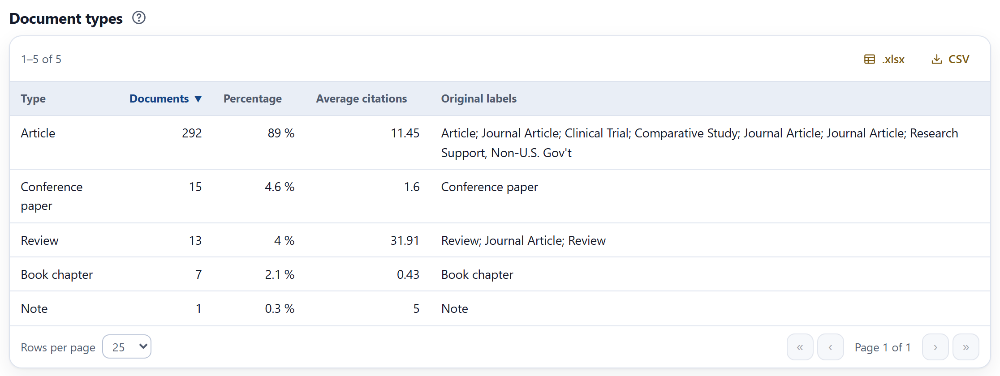
123
Figure 5.5. The five document types of the example, sorted by number of documents.
1It sorts by any column and downloads as a spreadsheet or CSV.
2Percentage of the documents in the collection and average citations of the type.
3Original labels from the databases that were grouped into that type.
▸Example · reviews are cited almost three times as much
In the collection of the six exports, articles make up 89% (292 documents) with 11.45 average citations, and reviews, barely 4% (13 documents), average 31.91 citations. It is a well-known pattern in bibliometrics: reviews accumulate more citations than original articles, so a few of them can shift the overall average of the collection. The 15 conference papers (1.6 citations) and the 7 book chapters (0.43) pull the average down. If your study compares impact, analyze the types separately or keep only articles with the document type filter (Chapter 4).
iNote · which types the app recognizes
The common types are article, review, conference paper, book chapter, book, letter, editorial, erratum, note, thesis, report, data, preprint and retracted; anything that does not fit stays as Other, with its original label in view. A retracted document that still counts as an article in your collection is a problem of the export, not of the app: look for it by its original label in this table.
5.6When there are filters or missing data
With active filters, the screen states above the cards how many documents it is using, and every indicator is recomputed. It is the best way to see the effect of a decision: filter, look at the cards, remove the filter and compare.
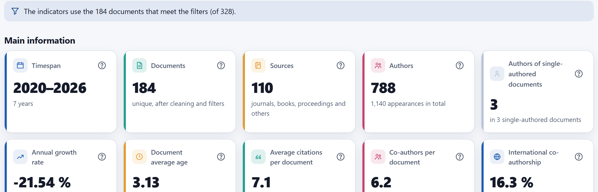
123
Figure 5.6. The same collection with the filter “from 2020 onward”: 184 documents.
1Notice: the indicators use only the documents that meet the filters.
2The timespan follows the filter, and with it the average age (3.13 years).
3The rate turns negative because the last year of the timespan is incomplete.
Table 5.2. Indicators that look odd and what explains them.
What you see
Usual cause
What to do
A negative growth rate in a topic that is growing
The last year of the timespan is incomplete.
Filter up to the previous year (Section 5.3).
the records carry no citation counts
No export carries that field.
Export again from a citation index, or use the local citations of Chapter 8.
International co-authorship of 0%
The records carry no affiliations, or the country was not recognized.
Check the Institutions & countries tab (Section 4.5).
Many more authors than expected
Name variants not joined.
Check the Authors tab (Section 4.4).
More sources than documents per journal
It is a scattered topic, or there are source names written in several ways.
See the full table of sources (Chapter 6).
A year with extremely high average citations
Few documents and one highly cited.
Look at the number of documents of that year in the previous figure.
No document meets the filters
The global filters left the collection empty.
Click Review the filters, which goes straight to the tab.
5.7Taking the figure and the data with you
The two figures on this screen —and all those in the app— carry the same toolbar. PNG, SVG and PDF download the image; Data downloads the table behind it, to check it or to redraw the figure in another program. Below, Edit figure unfolds the titles, colors, font and sizes, and the last row sets the format of the download: one- or two-column width in centimeters, text size in points, resolution in dpi, white or transparent background, and grayscale. Chapter 13 explains that bar in depth and how to prepare figures for a journal.
Table 5.3. Columns that Data downloads for each figure.
Figure
Columns
Annual scientific production
Year · Documents · Cumulative documents.
Average citations per year
Year · Documents · Documents with a citation count · Citations · Average citations per document · Citable years · Average citations per citable year.
iNote · what the report writes by itself
There is no need to copy these numbers by hand: the report of Chapter 13 builds the main information table with the thirteen cards, embeds the two figures and drafts the methods paragraph with the timespan, the number of documents, the databases searched and the filters applied. The cards on this screen are, in addition, the ones most often cited in the abstract of a bibliometric paper.
The overview tells you how much there is and at what pace; the following chapters tell you where it is. The next one opens the Sources: the most productive journals, Bradford’s law and the impact of each one.
6
Chapter six
Sources
Where the topic is published: the most productive journals, books and proceedings, the Bradford core that concentrates a third of the literature, the impact of each source within the collection with the h, g and m indices, and the dynamics that show which journals are still active and which have left the topic.
6.1The Sources screen and its cards
6.2The most productive sources
6.3Bradford’s law
6.4Impact by source
6.5Production dynamics
6.6The full table
Knowing how many documents there are is the start; knowing where they are changes concrete decisions: which journals to search for what is missing, which ones to keep an eye on, where it makes sense to submit your own work and which sources to cite as references for the field. The Sources screen answers that with five tabs that go from the descriptive to the analytical.
6.1The Sources screen and its cards
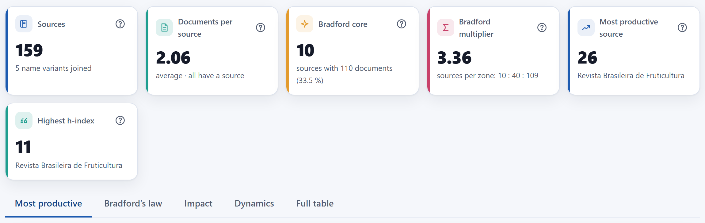
123456
Figure 6.1. The cards of the Sources screen with the 328 example documents.
1Distinct sources and how many name variants were joined.
2Documents per source, on average.
3Bradford core: the sources that publish the first third.
4Bradford multiplier and the sources in each zone.
5The source with the highest h-index within the collection.
6The five tabs of the screen.
Table 6.1. The six cards of Sources.
Card
What it measures
Example
Sources
Distinct journals, books and proceedings, already unified.
159 · 5 variants joined
Documents per source
Average documents per source; close to 1 points to a very scattered topic.
2.06
Bradford core
Sources of zone 1: they publish about a third of the documents.
10 sources · 110 documents (33.5%)
Bradford multiplier
How many times the number of sources grows from one zone to the next.
3.36 · zones 10 : 40 : 109
Most productive source
The source with the most documents in the collection.
26 · Revista Brasileira de Fruticultura
Highest h-index
The source with the most impact within the collection.
11 · the same journal
iNote · when two names are the same source
Names are compared without case, accents or punctuation, and “&” counts as “and”: Revista Brasileira de Engenharia Agrícola e Ambiental and …Agricola e Ambiental are the same. In addition, two spellings that share an ISSN are joined even if they are named differently, which is how Plants and Plants (Basel, Switzerland) end up together. In the example, 5 variants were joined; the Full table tab shows which (Section 6.6). What the app cannot join by itself is an abbreviation without an ISSN (“Rev. Bras. Frutic.”) with the full name: they would appear as two sources.
6.2The most productive sources
The first tab sorts the sources by number of documents and draws them as horizontal bars, colored by their Bradford zone. The control at the top chooses how many enter the figure, from 5 to 50.
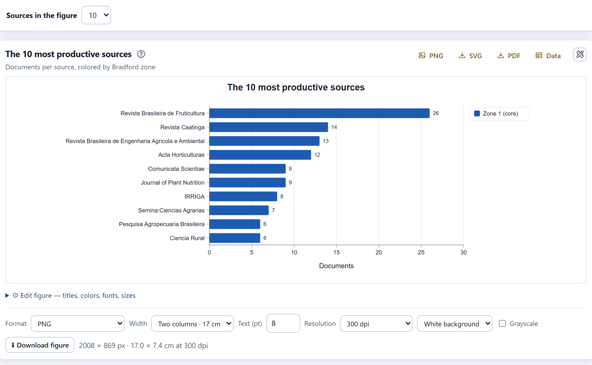
1234
Figure 6.2. The ten most productive sources of the example; all of them belong to the core zone.
1How many sources enter the figure.
2Subtitle: the bars are colored by Bradford zone.
3Download of the figure and of the data behind it.
4Legend of zones; only zone 1 appears here because the first ten are the core.
▸Example · a literature spread over 159 journals
The ten most productive sources of the example publish between 26 and 6 documents: Revista Brasileira de Fruticultura 26 (7.9% of the collection), Revista Caatinga 14, Revista Brasileira de Engenharia Agrícola e Ambiental 13, Acta Horticulturae 12, Comunicata Scientiae and Journal of Plant Nutrition 9, IRRIGA 8, Semina: Ciências Agrárias 7, and Pesquisa Agropecuária Brasileira and Ciência Rural 6. At the other end, 111 of the 159 sources contribute a single document: the topic is widely spread and the most productive journal barely concentrates one in every thirteen documents. All these figures were checked by grouping the sources outside the app.
6.3Bradford’s law
θTheory in brief · the core and the three zones
Bradford (1934) observed that if the journals on a topic are ranked from the most to the least productive and the documents are split into three equal piles, the first third comes from a handful of journals, the second needs quite a few more and the third, a great many. The number of sources in each zone grows in an almost geometric progression, 1 : k : k², and that k is the Bradford multiplier.
The app splits the zones where the cumulative count comes closest to one third and two thirds of the documents, estimates k as the mean of the two ratios between consecutive zones, and plots the cumulative count against the rank on a logarithmic scale: if the collection follows the law, that curve looks almost straight in its central part. Zone 1 is the core: the journals most worth reviewing, monitoring and considering for publication.
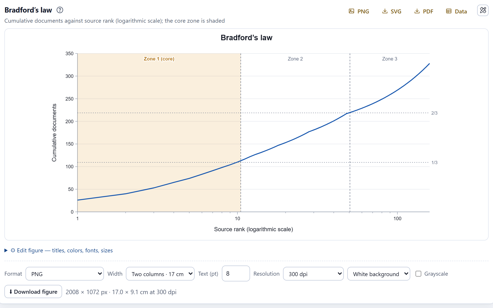
1234
Figure 6.3. The Bradford curve of the example, with the core zone shaded and the cuts at one third and two thirds.
1Subtitle: the core zone is shaded.
2Zone 1: the sources that publish the first third of the documents.
3Reference lines at one third and two thirds of the total.
4The rank axis is logarithmic: that is why the curve of a collection that follows the law looks almost straight.
Below the figure, two tables put numbers to the zones: how many sources and how many documents there are in each, with their percentages and the ratio between consecutive zones, and then the list of sources with their zone, their rank and their cumulative count.
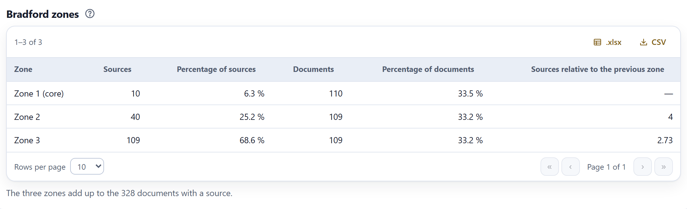
12
Figure 6.4. The three zones of the example: 10, 40 and 109 sources for one third of the documents each.
1Sources and documents in each zone, with their percentages.
2The three zones add up to all the documents that have a source.
▸Example · ten journals for a third of the literature
In the collection of the six exports, 10 sources (6.3%) publish 110 documents, 33.5%; the 40 of zone 2 publish another 109 and the 109 of zone 3, the remaining 109. The ratios between zones are 40 ÷ 10 = 4.00 and 109 ÷ 40 = 2.73, so the estimated multiplier is 3.36. That the two ratios are not equal shows that the collection fits the law only roughly, which is to be expected with 159 sources and many with a single document. The three zones and their counts were reproduced outside the app by applying the same cutting rule.
✓Decision rule · what to do with the core
If your goal is to…
use the core like this…
not miss any literature on the topic
browse the tables of contents of those journals by hand and set up alerts for them; that is where new work will appear.
choose where to submit your paper
look at the core together with impact (Section 6.4) and with the dynamics (6.5): a core journal that stopped publishing on the topic is no longer the best option.
describe the field in a paper
report the three zones, the multiplier and the percentage of documents in the core, citing Bradford (1934).
compare two topics or two periods
compare the size of the core as a percentage of sources, not as a number: it depends on how many sources there are in total.
The cuts are discrete: with few sources, moving one document can change the size of the core.
6.4Impact by source
Publishing a lot is not the same as publishing what is cited the most. The Impact tab computes, for each source and only with the documents in the collection, four measures: the h, g and m indices and total citations. The selector at the top chooses which one is drawn, how many sources enter and the reference year of the m-index, which is the same as in the overview.
Table 6.2. The four impact measures of the tab.
Measure
What it is
What it adds
h-index
The largest number h such that h documents of the source have at least h citations each (Hirsch, 2005).
It sums up productivity and impact in one number; a single highly cited paper does not sway it.
g-index
The largest g such that the g most cited documents add up to at least g² citations (Egghe, 2006).
It does reward highly cited papers: it is always greater than or equal to h.
m-index
The h-index divided by the years elapsed since the first document of the source in the collection.
It compares sources that have been in the topic for different lengths of time.
Total citations
Sum of the citations of the documents of the source.
Gross size of the impact; dominated by the source with the most documents.
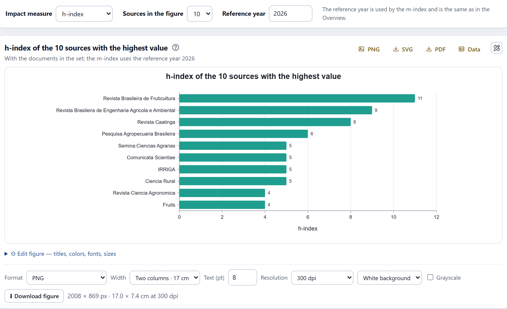
1234
Figure 6.5. h-index of the ten sources with the highest value in the example collection.
1The control bar: impact measure, how many sources enter and the reference year of the m-index.
2Subtitle: the indices are computed with the documents in the collection.
3The most productive source is also the one with the highest h-index (11).
4A journal with 6 documents reaches an h-index of 6: all its documents are well cited.
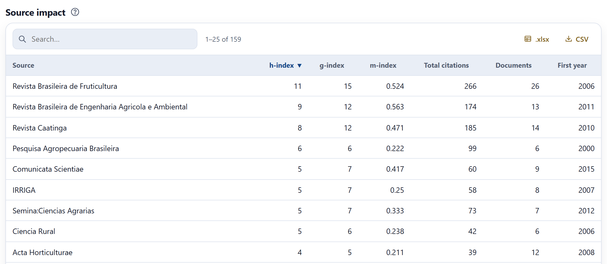
12
Figure 6.6. The impact table, sorted by h-index.
1Each source with its three indices, its total citations, its documents and its first year in the collection.
2It sorts by any column and downloads in full.
▸Example · productivity is not impact
Revista Brasileira de Fruticultura heads both lists: 26 documents, 266 citations, an h-index of 11 and a g of 15. But right after that the order changes. Revista Brasileira de Engenharia Agrícola e Ambiental, third in documents (13), is second in impact (h 9, 174 citations) and has the highest m-index of the group, 0.563, because it has been in the topic for less time. Pesquisa Agropecuária Brasileira contributes only 6 documents and reaches an h-index of 6: all its papers in the collection are well cited. At the other extreme, Acta Horticulturae is fourth in documents (12) but its h-index is 4 and it adds up to 39 citations: these are conference proceedings, which are cited little (Chapter 5, table of types). The three indices of the top ten sources were recomputed outside the app with the same definitions, and they match.
!Important · what these indices mean and what they do not
The h-index you see here is that of the journal within your collection: it is computed only with the documents of your search and with the citations your files report. It is not the h-index of the whole journal, nor its impact factor, and it does not replace the official indicators of the databases. Put that way it is useful and honest: “in this collection of 328 documents, such journal has an h-index of 11”. Moreover, sources whose documents carry no citation count do not appear in this tab; if none carries it, the app says so and the tab stays empty.
6.5Production dynamics
The cards and the bars are snapshots; this tab is the movie. For the most productive sources, it draws how many documents they have accumulated each year: a line that rises with a constant slope is a journal that publishes on the topic regularly, one that shoots up points to a special issue and one that flattens out is a journal that left the topic.
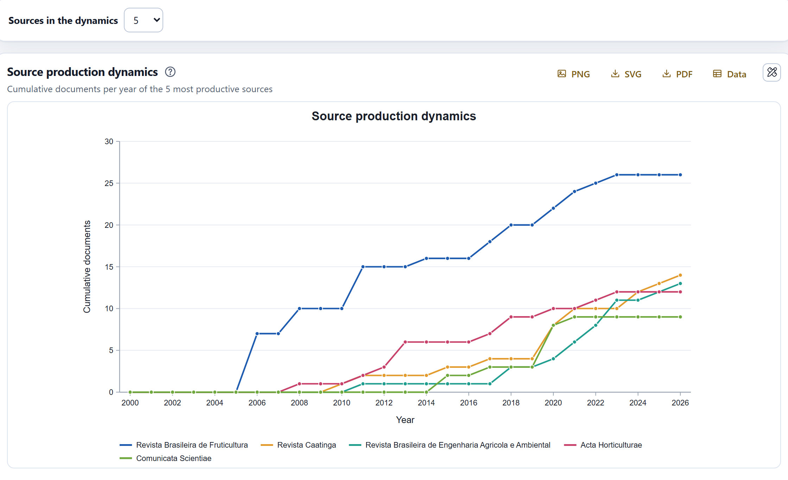
123
Figure 6.7. Cumulative documents per year of the five most productive sources of the example.
1How many sources enter the figure (from 5 to 10).
2Each line is the cumulative count of one source over the years of the whole collection.
3A line that flattens out: that source stopped publishing on the topic.
▸Example · the most productive journal stopped in 2023
The line of Revista Brasileira de Fruticultura rises steeply from 2006, reaches 26 documents and flattens out: its last document in the collection is from 2023. Meanwhile, Revista Caatinga (2010–2026) and Revista Brasileira de Engenharia Agrícola e Ambiental (2011–2026) keep rising until the end of the timespan. If the goal were to choose where to submit a paper today, the “most productive” list would point to a journal that no longer publishes on the topic, and the dynamics correct it. The first and last years of each source were checked outside the app.
6.6The full table
The last tab brings everything together in a single table: one row per source and sixteen columns with its identity, its production, its zone and its impact. It sorts by any column, searches by name and downloads in full as a spreadsheet or CSV. Since it is wider than the screen, it scrolls sideways.
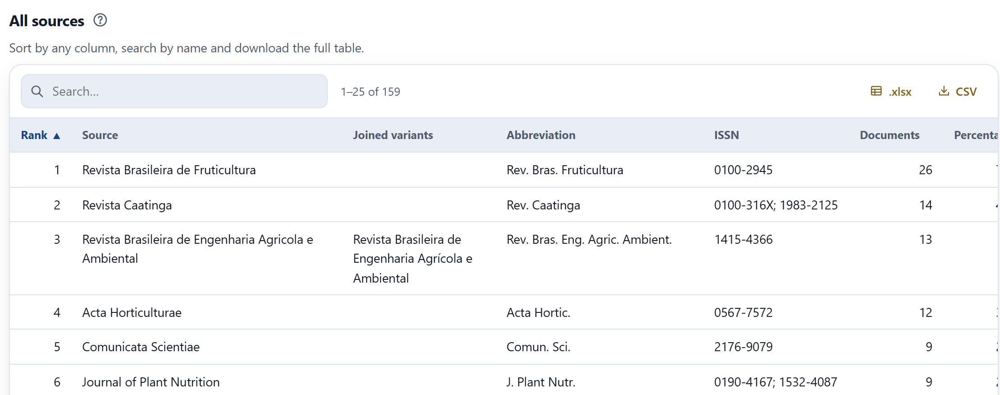
123
Figure 6.8. The first rows of the full table; the production and impact columns continue to the right.
1159 sources, 25 at a time.
2The name variants that were joined into that source.
3Abbreviation and ISSN, when the export carries them.
Table 6.3. The columns of the full table.
Columns
What they contain
Rank · Source · Joined variants · Abbreviation · ISSN
Identity of the source: its position by documents, the preferred name, the other spellings that were joined and the identifiers the files carried.
Documents · Percentage · Cumulative percentage · Zone
Production and place in the Bradford zones.
Total citations · Average citations · h-index · g-index · m-index
Impact within the collection; empty if the source carries no citation count.
First year · Last year
Period in which that source published on the topic; the gap to the current year is the signal of Section 6.5.
iNote · three practical uses of this table
Look up a specific journal. Type part of the name in the search box to see how many documents it contributes, which zone it is in and since when it has published on the topic.
Audit the unification. Sort by Joined variants to see which spellings were merged, and by Documents in ascending order to detect single-document sources that are in fact variants of another one without an ISSN.
Take it to your paper. The spreadsheet download keeps the sixteen columns; the top ten sources and the columns of documents, percentage, zone, citations and h-index are almost always enough.
With the sources you now know where the topic is published. The next chapter asks who publishes it: the most productive and most cited authors, Lotka’s law, their impact indices and the countries and institutions they work from.
7
Chapter seven
Authors
Who produces the literature: the most productive authors with full and fractional counting, their trajectory over time, Lotka’s law with its goodness-of-fit test, the impact of each author within the collection, and the institutions and countries the literature comes from, with their international collaboration and their map.
7.1The Authors screen and its cards
7.2The most productive authors
7.3Production over time
7.4Lotka’s law
7.5Impact by author
7.6Institutions
7.7Countries and international collaboration
The Authors screen moves from journals to people. Its six tabs answer questions that every bibliometric study ends up asking: who publishes the most, since when, whether productivity is distributed as in other fields, who has the most impact and from which institutions and countries the research is done.
iNote · the data in this chapter
The figures in this chapter were taken with the example data: 300 documents on the mineral nutrition of passion fruit, from the open bibliographic catalog, which carry authors with affiliations and citation counts. You can load them with one click from the home page (Home›Load example data) and reproduce every screen. All the figures quoted were checked by reading that file outside the app.
7.1The Authors screen and its cards
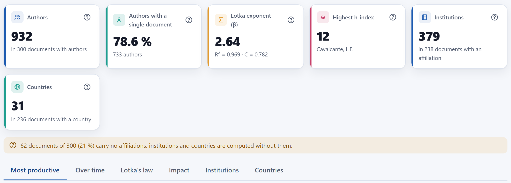
123456
Figure 7.1. The cards of Authors with the example data.
1Distinct authors, identified by surname and initials.
2Share of authors who sign a single document.
3Estimated Lotka exponent, with its fit (Section 7.4).
4The author with the highest h-index within the collection.
5Notice when part of the documents carries no affiliations.
6The six tabs of the screen.
Table 7.1. The six cards of Authors.
Card
What it measures
Example
Authors
Distinct authors in the documents that carry authors.
932 in 300 documents
Authors with a single document
What share of the authors appears only once; the basis of Lotka’s law.
78.6% (733 authors)
Lotka exponent (β)
How fast the share of authors falls as their number of documents grows.
2.64 · R² = 0.969
Highest h-index
The author with the most impact within the collection.
12 · Cavalcante, L.F.
Institutions
Distinct institutions in the affiliations.
379 in 238 documents
Countries
Distinct countries of authors and affiliations.
31 in 236 documents
!Important · the affiliations notice
When at least a fifth of the documents carries no affiliations, the screen says so above the tabs: in the example, 62 of 300 documents (21%). The author, Lotka and impact tabs are not affected, but the institution and country tabs are computed without those documents. If your study compares countries, complete the affiliations with another export before drawing conclusions (Chapter 3).
7.2The most productive authors
The first tab sorts the authors by number of documents and draws the top ones. The Count selector switches between two ways of counting, and the list changes.
θTheory in brief · full counting and fractional counting
In full counting, each author adds 1 for every document they sign, no matter how many co-authors there are. It is the most intuitive and the most widely used, but it rewards those who sign in large teams: a ten-author paper hands out ten documents. In fractional counting, each document shares exactly 1 among its authors: with three authors, each adds 1/3. The sum over all authors gives the number of documents, and the list favors those who publish with few co-authors.
fractional count of author a = Σd 1 ⁄ nd
where the sum runs over the documents d the author signs and nd is the number of authors of each.
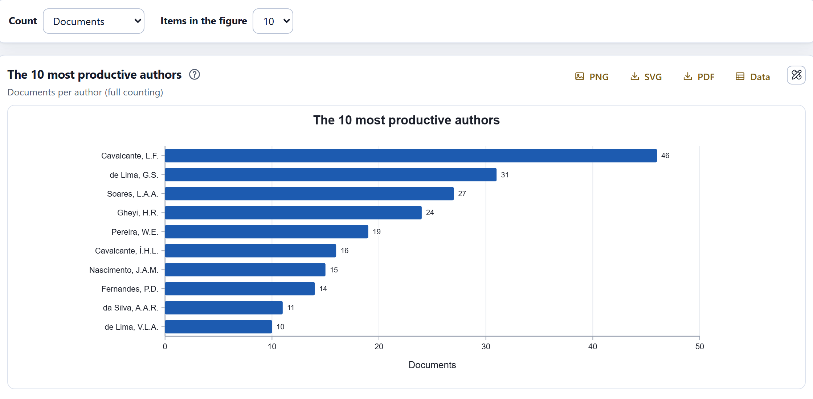
123
Figure 7.2. The ten most productive authors of the example, with full counting.
1Type of count and how many authors enter the figure.
2Subtitle: it states the count in use.
3The most productive author signs 46 of the 300 documents.
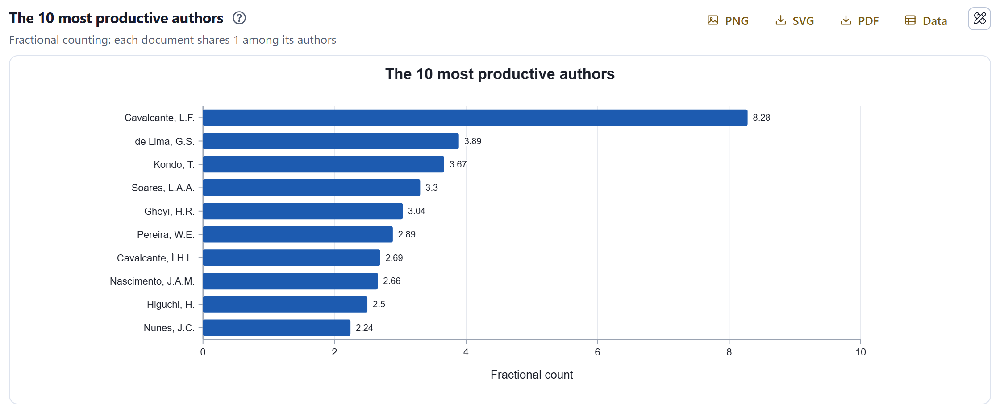
12
Figure 7.3. The same figure with fractional counting: the list changes.
1Subtitle: each document shares 1 among its authors.
2An author with only 8 documents rises to third place because they publish with few co-authors.
▸Example · two lists, two readings
With full counting, the list is headed by Cavalcante, L.F. with 46 documents, followed by de Lima, G.S. (31), Soares, L.A.A. (27), Gheyi, H.R. (24) and Pereira, W.E. (19): a Brazilian group that publishes in large teams. With fractional counting, the first one stays first (8.28), but in third place comes Kondo, T., who with only 8 documents adds up to 3.67 because he signs with one or two co-authors. Neither list is “the right one”: the first measures participation and the second, individual contribution. Both were reproduced outside the app with the same values.
iNote · an author is a surname and initials
The app identifies each author by surname and initials, with the variants you joined in Cleaning & filters (Section 4.4). It is the only rule that works with every database, because most of them carry no author identifiers. It has two consequences: two people with the same surname and initials count as one, and one person written in two ways counts as two until you join them. In the example, the open catalog splits Cavalcante, L.F. across three of its own identifiers: one with 45 documents, another with 1 and a third with 3 in which the name comes inverted, “Ferreira Cavalcante Lourival”. By name, the app brings the first two together in 46 documents; the third stays apart as Lourival, F.C., because no program can know that this “surname” is a given name. If a key author seems to have fewer documents than expected, look for their variants in the table below. Under the figure, the All authors table lists each author with their documents, fractional count, citations, first and last year, and most frequent institution and country.
7.3Production over time
The second tab draws the trajectory of the most productive authors: one row per author and one bubble for each year in which they published. The size of the bubble is the number of documents that year and the color, the citations per year those documents received up to the reference year; a gray line joins each author’s first and last year.
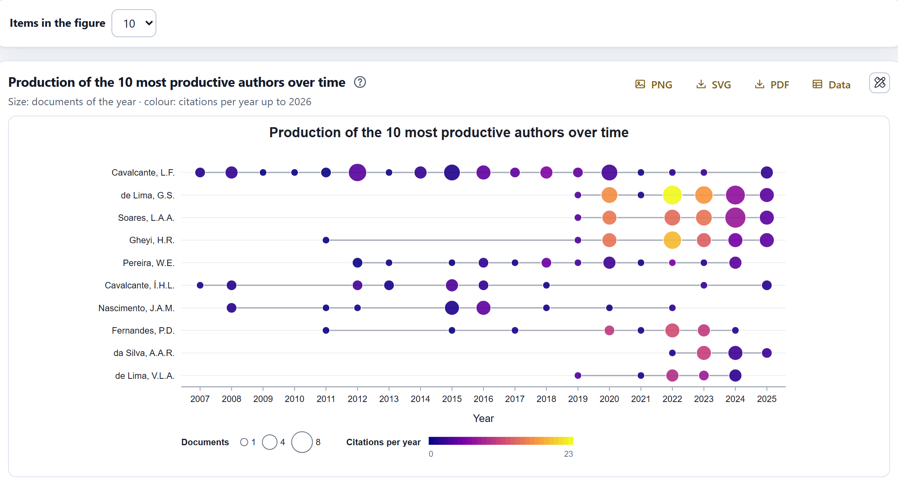
123
Figure 7.4. Trajectories of the ten most productive authors of the example between 2007 and 2025.
1How many authors enter the figure.
2Subtitle: size is documents and color, citations per year.
3Size and color scales; light colors are the most cited years.
▸Example · a veteran and a group that arrived in 2019
The figure separates two generations. Cavalcante, L.F. has published without interruption since 2007: his row is long and dark, because most of his documents have been accumulating citations at a moderate pace for years. de Lima, G.S., Soares, L.A.A. and Gheyi, H.R. appear together from 2019, almost always in the same years, and their bubbles from 2020 to 2023 are the lightest in the figure: in a short time their documents are cited more per year than those of the most veteran author. Section 7.5 confirms that reading with the m-index.
7.4Lotka’s law
θTheory in brief · many publish once, few publish a lot
Lotka (1926) observed that the share of authors with x documents falls as a power of x:
f(x) = C ⁄ xβ
In its classic form, β = 2 and C = 6/π² ≈ 0.6079: about 61% of the authors publish a single document, a quarter of that figure publish two, a ninth publish three, and so on. The app estimates β and C by least squares on the logarithms, using x = 1, 2, 3… up to the first value without authors, because beyond that point the few highly productive authors appear one at a time and flatten the line (Clauset, Shalizi and Newman, 2009). It then compares the observed distribution with the classic law using the Kolmogorov-Smirnov test: if the maximum difference between the cumulative shares, D, exceeds the critical value 1.36/√N, the collection does not follow the law with β = 2 at 5%. The constant of the fit is computed as proposed by Pao (1985).
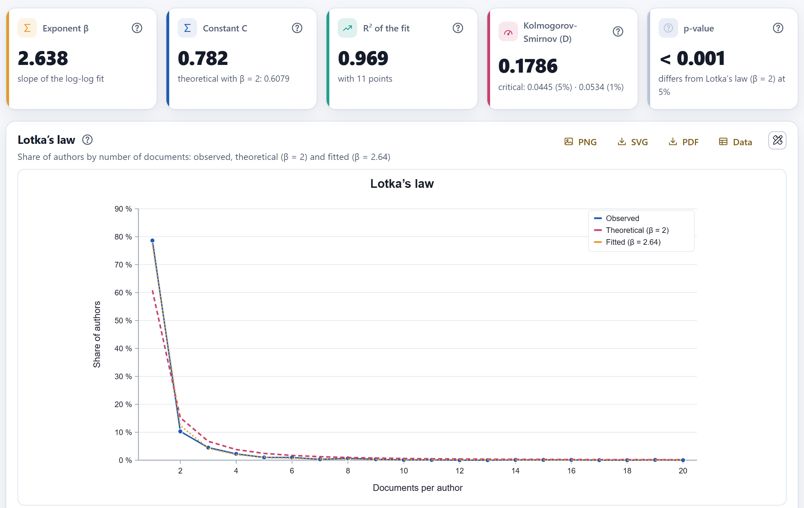
123
Figure 7.5. Lotka’s law in the example data: 932 authors. The five cards at the top are described in Table 7.2.
1The three curves: observed, theoretical with β = 2, and fitted.
2The fitted curve almost completely overlaps the observed one.
378.6% of the authors sign a single document; the classic law expected 60.8%.
Table 7.2. The five cards of Lotka’s law.
Card
What it is
Example
Exponent β
Slope of the fit; greater than 2 means even more occasional authors than in the classic law.
2.638
Constant C
Fitted share of authors with one document; the classic value is 0.6079.
0.782
R² of the fit
How well the points line up on a logarithmic scale, and with how many.
0.969 with 11
Kolmogorov-Smirnov (D)
Maximum difference between the observed and theoretical cumulative shares, with its critical values.
0.1786 (critical 0.0445)
p-value
Probability of such a difference if the classic law were true, with its verdict.
< 0.001
▸Example · a literature with more occasional authors than expected
Of the 932 authors of the example, 733 sign a single document (78.6%), 96 sign two and 42 sign three; the classic law expected 60.8%, 15.2% and 6.8%. The fit gives β = 2.638 with R² = 0.969 over the first eleven values, and the Kolmogorov-Smirnov test rejects the classic law: D = 0.1786, four times the critical value at 5% (0.0445). The law with the fitted exponent, on the other hand, describes the data very well: in the figure, its curve merges with the observed one. The reading is that the topic attracts many participants who publish once —students, collaborators on a single project— around a small, highly productive core. The number of authors for each number of documents, β, C, R² and D were reproduced outside the app with the same result.
✓Decision rule · how to report Lotka’s law
If the result is…
write…
D below the critical value (β = 2 is not rejected)
“Author productivity fits Lotka’s law (D = …, p = …).”
D above the critical value, but a high R²
“The distribution follows a power law with β = … (R² = …), steeper than Lotka’s (D = …, p < …).”
Low R² or fewer than four points in the fit
Do not report β as a result: the collection is too small or irregular to estimate it.
35 authors or fewer
The app warns that the critical values are not reliable; describe the distribution without the test.
With many authors the test almost always rejects the classic form: β = 2 is a reference, not a physical law. What is informative is the value of β and its comparison with other fields.
7.5Impact by author
The Impact tab works like the one for sources (Section 6.4): the h, g and m indices and the total citations of each author, computed only with their documents in the collection, with a selector for the measure, the number of authors and the reference year of the m-index. Below, the table gives the four values for every author.
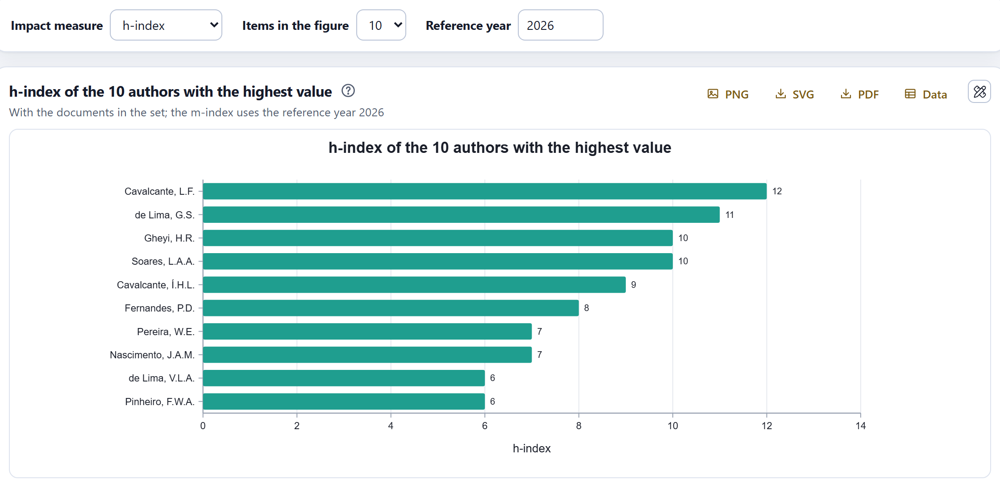
123
Figure 7.6. h-index of the ten authors with the highest value in the example collection.
1Impact measure, number of authors and reference year of the m-index.
2The indices are computed with the documents in the collection.
3The most productive author also has the highest h-index: 12.
▸Example · the m-index separates the generations
Cavalcante, L.F. has the highest h-index (12, with 402 citations), but he built it since 2007: his m-index is 12 ÷ 20 years = 0.600. de Lima, G.S. has an h of 11 achieved since 2019, and his m-index is 11 ÷ 8 = 1.375, more than double. Soares, L.A.A., with an h of 10 since 2019, reaches 1.250. This is what the light bubbles of Figure 7.4 anticipated. The h, g and m indices of the ten most productive authors were recomputed outside the app, and they match.
!Important · an author’s h-index here is not their h-index
The index this tab computes uses only the author’s documents that are in your collection, with the citations your files report. A researcher with a career h-index of 40 may have 3 here, if only three of their papers deal with your topic. Report these values as “h-index within the collection” and do not compare them with those of the authors’ public profiles.
7.6Institutions
The Institutions tab counts the organizations in the affiliations, already unified in Cleaning & filters (Section 4.5), with the same criterion and the same numbers as the table on that screen. The Count selector chooses between two measures: documents in which the institution appears, or appearances, which count each author from that institution in each document.
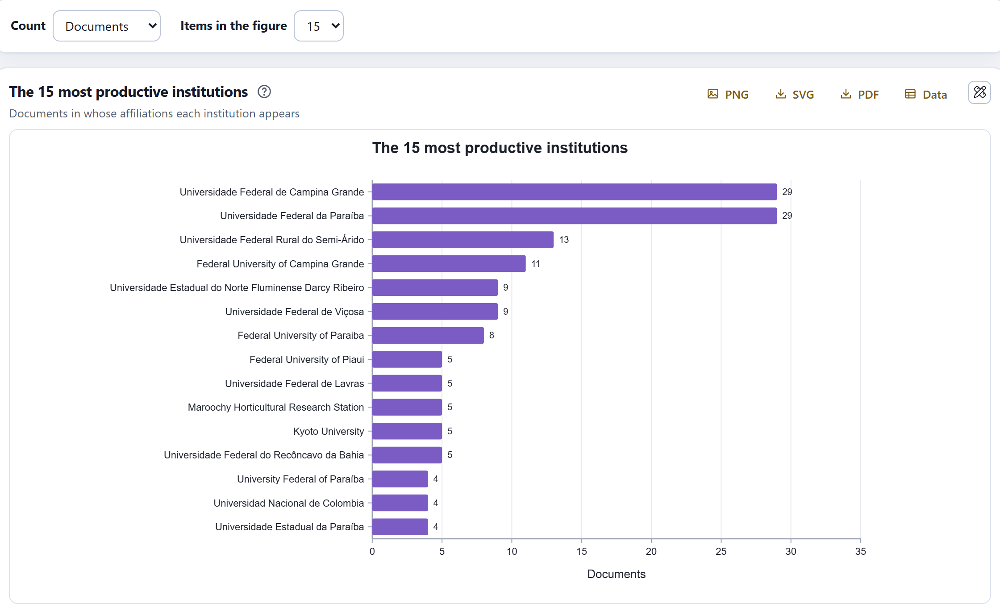
123
Figure 7.7. The fifteen most productive institutions of the example, by number of documents.
1Count by documents or by appearances, and how many institutions enter.
2Subtitle: what is being counted.
3The same university written in English stays apart until it is joined with an alias (Section 4.5).
▸Example · documents versus appearances
Universidade Federal de Campina Grande and Universidade Federal da Paraíba appear in 29 documents each: a tie. By appearances, the first adds up to 149 and the second 84, because its papers carry more authors from the same university. The first measure tells you in how many works an institution takes part; the second, how many of its people sign. For a ranking, use documents; to measure the size of a research group, appearances.
7.7Countries and international collaboration
Counting countries has a difficulty: a document with authors from three countries, which country does it belong to? The Countries tab answers in two ways, with two different figures.
Table 7.3. How a country is assigned to each document, in this order.
Order
Criterion
Example documents
1
The country of the corresponding author, if the database indicates it.
68
2
Otherwise, that of the first author with a country.
168
3
Otherwise, that of the first affiliation with a recognized country.
0
—
No country: no author or affiliation makes it possible to tell.
64
θTheory in brief · SCP and MCP
With the country assigned, each document is classified as SCP (single country publication) if all its authors are from the same country, or MCP (multiple country publication) if there are authors from more than one. A country’s MCP ratio measures its international collaboration: a country with a high MCP publishes mostly with foreign partners; one with a low MCP, with its own groups. The map, in contrast, does not assign one country per document: it counts each byline of each author in their country, or each document in all its countries.
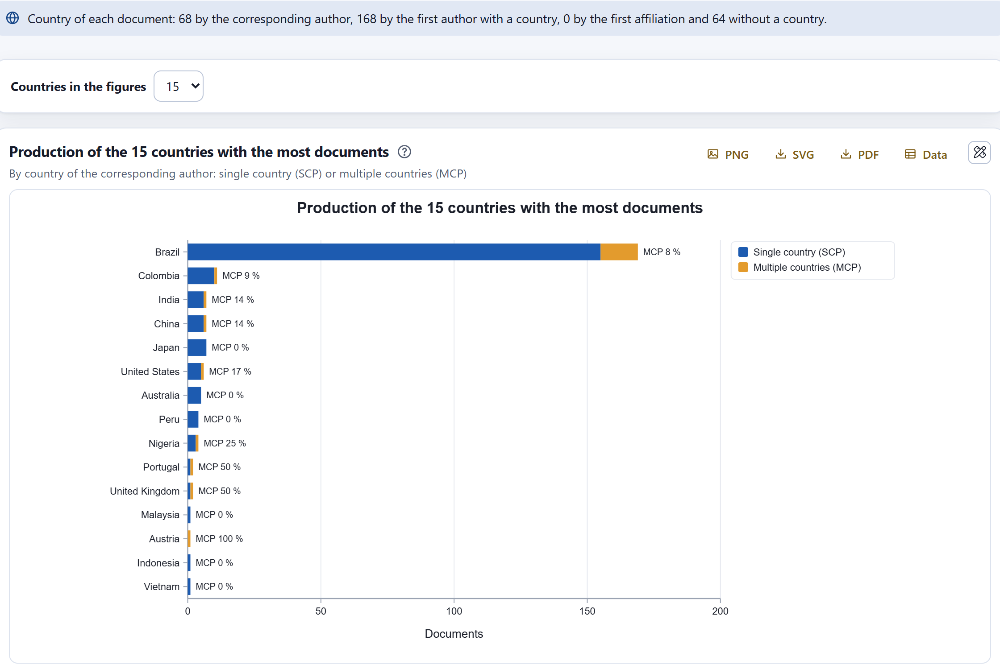
1234
Figure 7.8. The fifteen countries with the most documents in the example, split into SCP and MCP.
1How many documents got their country by each criterion of Table 7.3.
2How many countries enter the figures.
3Subtitle: the country is that of the corresponding author (or the next criterion).
4Single country (SCP) and multiple countries (MCP); the label of each bar gives the MCP percentage.
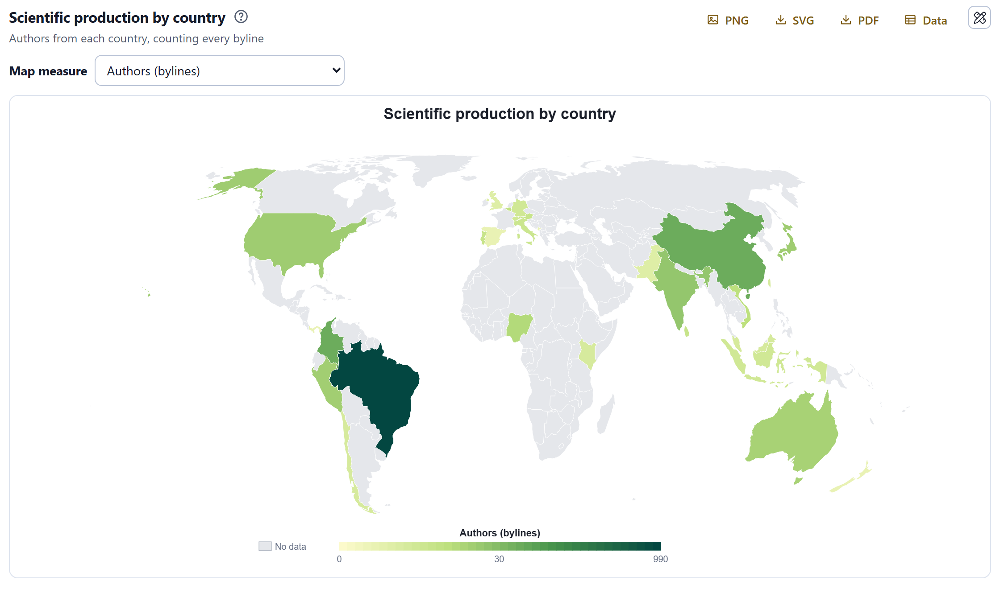
1234
Figure 7.9. Scientific production by country in the example, counting each author byline.
1Subtitle: what the color measures.
2Map measure: author bylines or documents.
3Brazil concentrates 990 author bylines.
4Color scale; countries without data stay gray.
▸Example · a Brazilian topic with little international collaboration
Brazil has 169 of the 236 documents with a country, and only 8% of them are MCP: research on passion fruit nutrition is done mostly by Brazilian groups. On the map, Brazil adds up to 990 author bylines, more than twenty times those of Colombia and China (47 each). Countries with few documents have extreme MCP percentages —Portugal and the United Kingdom, 2 documents and 50%—, which should not be read as a trend. The table of the tab adds the citations per country: Portugal’s two documents average 80 citations, a reminder that with few documents a single highly cited paper changes everything.
!Important · the country comes from the affiliation, and the affiliation can fail
An author’s country comes from the code the database carries or, if it carries none, from the end of the affiliation text. Both sources can fail. In the example, the catalog linked an author from a Sri Lankan institute to a Chinese institute with a similar name; the rest of the co-authors carry no code, but the affiliation ends in “Sri Lanka”, and the app assigns the document to Sri Lanka through its first author. These cases are rare, but they exist in every database: if a small country appears where you do not expect it, look it up in the table and check its documents, and correct it with a country alias in Cleaning & filters (Section 4.5).
With the sources and the authors you now know where and who. The next chapter moves on to what: the most cited documents, the local citations within the collection, the most cited references, reference publication year spectroscopy and the trend topics.
8
Chapter eight
Documents
What is published and what is cited: the most cited documents with three different measures, the local citations the documents make to one another, the most cited references, reference publication year spectroscopy, which reveals the founding works of the field, and the words, their growth and the trend topics.
8.1The Documents screen and its cards
8.2Most cited documents
8.3Local citations
8.4Most cited references
8.5Reference publication year spectroscopy (RPYS)
8.6Words
8.7Growth and trend topics
After the sources and the authors, the Documents screen looks at the works themselves: which have received the most attention, which form the common base of the field and what they are about. Its seven tabs fall into two families: the first four work with citations and references; the last three, with the words of the term field you chose in Cleaning & filters.
iNote · the data in this chapter
The figures use the passion fruit example data (300 documents from the open catalog), except those of the RPYS. That catalog’s references arrive as work identifiers, without a year, and without a year there is no RPYS: for Section 8.5 a public collection of 147 papers on co-citation analysis and bibliographic coupling (1985–2015) was used, exported with its full references from multidisciplinary citation index B. All the figures quoted were checked by reading the files outside the app.
8.1The Documents screen and its cards
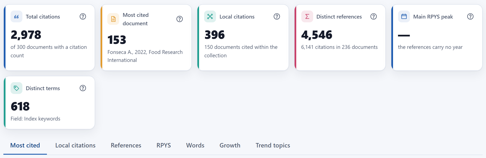
1234567
Figure 8.1. The cards of Documents with the example data.
1Total citations reported by the databases.
2The most cited document.
3Local citations: times a document of the collection cites another document of the collection.
4Distinct references in the bibliographies.
5Main RPYS peak; here the references carry no year.
6Distinct terms of the field chosen in Cleaning.
7The seven tabs of the screen.
Table 8.1. The six cards of Documents.
Card
What it measures
Example
Total citations
Sum of the citations reported by the databases, from their whole coverage.
2,978 in 300 documents
Most cited document
The document with the most global citations.
153 · Fonseca A., 2022
Local citations
Citation links within the collection (Section 8.3).
396 · 150 documents cited
Distinct references
Distinct works in the reference lists, already unified.
4,546 · 6,141 citations in 236 documents
Main RPYS peak
Reference year with the largest positive deviation (Section 8.5).
— · the references carry no year
Distinct terms
Terms of the analysis field, with synonyms and stop words applied.
618 · index keywords
iNote · computing the references
Local citations, the most cited references and the RPYS depend on matching thousands of references with one another and with the documents of the collection. With few references the computation is immediate; with more than 25,000 it runs in the background, with a progress bar and a Cancel button, and meanwhile the screen says Computing the local citations and cited references of this collection…. If you cancel, Compute again appears. The result is shared with the overview and with the intellectual structure, so it is not repeated when you change screens.
8.2Most cited documents
The first tab ranks the documents by their citations. The Impact measure selector offers three ways of counting them, because “the most cited” depends on how long each document has had to be cited.
Table 8.2. The three citation measures per document.
Measure
How it is computed
What it corrects
Total citations
The citations the database reports.
Nothing: it rewards old documents.
Citations per year
Citations ÷ years elapsed from publication to the reference year, counting the publication year.
The age of the document.
Normalized citations
Citations ÷ average citations of the documents of the collection published in the same year.
The age and the citation pace of each year; 1 is the average of its year.
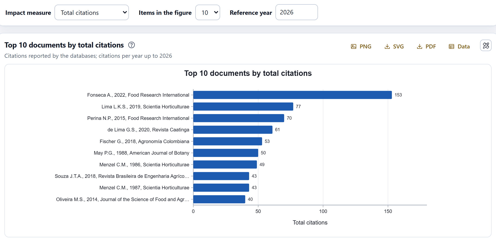
123
Figure 8.2. The ten documents with the most total citations in the example data.
1Impact measure, number of documents and reference year.
2The citations come from the databases; citations per year, up to the reference year.
3The most cited document has accumulated 153 citations since 2022.
▸Example · three measures, three winners
By total citations the winner is a 2022 review published in Food Research International, with 153 citations. By citations per year the same one wins, with 30.6 citations a year, but the list changes further down: a 1988 paper with 50 citations, seventh in totals, averages barely 1.28 a year. By normalized citations first place goes to a 2015 paper with 70 citations, 9.13 times the average of the documents of its year, ahead of the 2022 review (8.80). The three measures, with the same values, were reproduced outside the app. Under the figure, the table gives the three measures for every document that has a citation count.
8.3Local citations
θTheory in brief · global citations and local citations
The citations a database reports are global: they count every document in the database that cites yours, whether or not it belongs to the topic. Local citations count only those that come from other documents of your collection (Garfield, Pudovkin and Istomin, 2003). A document with many global citations and few local ones is influential outside the topic; one with many local ones is a reference work within it, even if its global count is modest. To compute them, the app matches each reference of each document against the documents of the collection, in this order: by DOI, by open-catalog identifier and, failing that, by first author and year together with the source, the pages or the title. References that match more than one document are discarded as ambiguous.
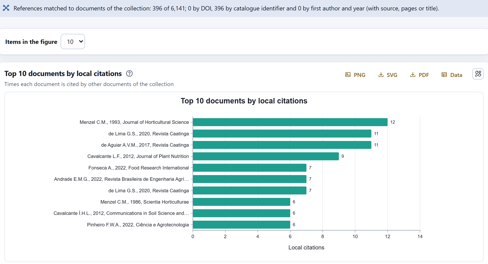
1234
Figure 8.3. The ten documents with the most local citations in the example data.
1How many references were matched to documents of the collection, and by which route.
2How many documents enter the figure.
3Subtitle: times other documents of the collection cite each one.
4The document with the most local citations: 12.
▸Example · the most cited in the world is not the most cited in the topic
In the example data, 396 of the 6,141 references were matched, all by catalog identifier: 150 documents of the collection are cited by some other one, from 151 citing documents. First place goes to a 1993 paper in the Journal of Horticultural Science, with 12 local citations out of 38 global ones. In contrast, the 2022 review with 153 global citations —the most cited in the collection— has only 7 local ones: it is cited mostly by work outside the topic, such as food science, the field its journal belongs to, and by few papers on crop nutrition. The table of the tab gives the ratio of local to global citations for each document, and marks with ▲ those with more local than global citations, which points to a global count that comes from another database or to a doubtful match. The 396 local citations and the top places were reproduced outside the app.
!Important · without references there are no local citations
Local citations, the most cited references and the RPYS need exports that include each document’s reference list. If your files do not carry it, these three tabs say so instead of showing zeros. It is the same warning as on the Import screen (Chapter 3): export again with the references option before drawing conclusions.
8.4Most cited references
The References tab counts how many documents of the collection cite each work, whether or not it is in the collection. It is the shared intellectual base of the field: the works almost everyone cites. Before counting, the app joins references that are the same work written in different ways: those that share a DOI or identifier, those with the same first author, year, volume and first page, those whose text matches without case, accents or punctuation, and those that point to the same document of the collection.
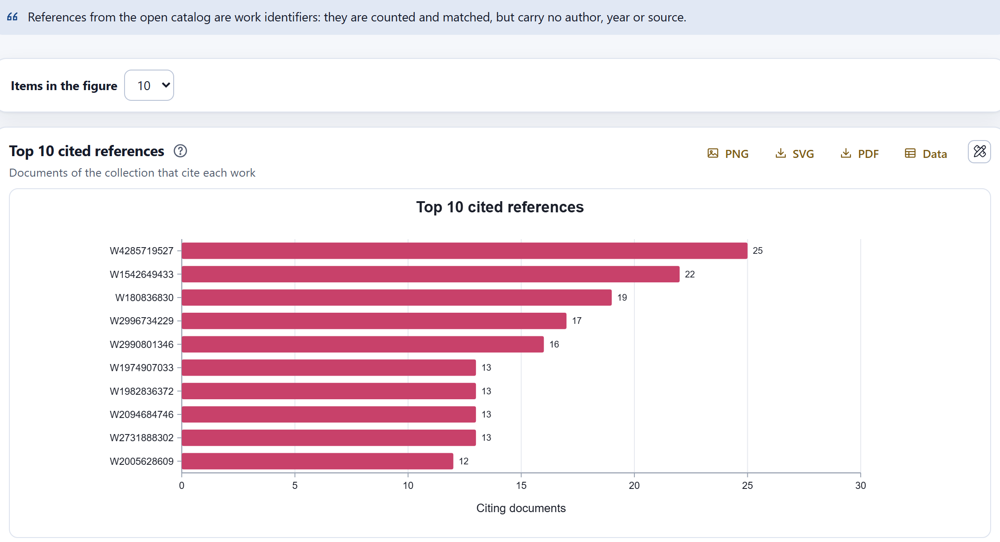
123
Figure 8.4. The ten most cited references in the example data.
1Notice: the references of the open catalog are work identifiers.
2Subtitle: documents of the collection that cite each work.
3The most cited work appears in the references of 25 documents.
▸Example · 6,141 references, 4,546 works
The 300 documents of the example carry references in 236 cases: 6,141 in total, corresponding to 4,546 distinct works. The most cited one appears in 25 documents and is not part of the collection: it is a work the topic uses, but it is not about passion fruit nutrition. Since the open catalog delivers its references as codes, the figure shows the code of each work; the table of the tab lists them all, and those in the collection are flagged in the In the collection column. With exports from the citation indices, the labels are readable (“SMALL H, 1973, J AM SOC INFORM SCI”), as in Section 8.5.
8.5Reference publication year spectroscopy (RPYS)
θTheory in brief · how to find the roots of a field
RPYS (Marx, Bornmann, Barth and Leydesdorff, 2014) counts how many cited references were published each year, regardless of who cites them. If a year has many more references than its neighbors, it is almost always because a work the whole field cites was published that year: a founding work. To see those years above the general growth of the literature, the median of its five-year window is subtracted from each year:
Dt = NCRt − median(NCRt−2, …, NCRt+2)
where NCRt is the number of cited references published in year t. A peak is a year with a positive deviation greater than that of the previous year and not smaller than that of the next. The app sorts them by deviation and shows the most cited references of each one.
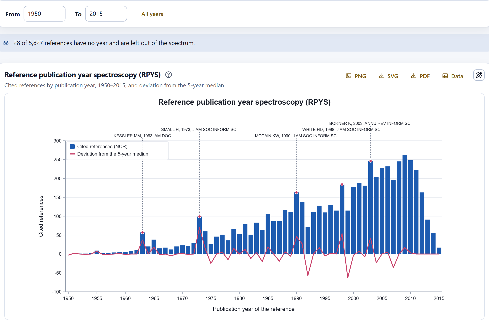
12345
Figure 8.5. The RPYS of 147 papers on co-citation and bibliographic coupling, between 1950 and 2015.
1Range of years; All years resets it.
2References without a year, which are left out of the spectrum.
3Subtitle: range and deviation from the 5-year median.
4The 1973 peak, with its most cited reference.
5The deviation: the peaks are its local maxima.
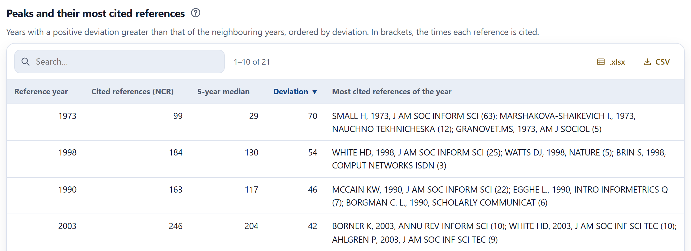
12
Figure 8.6. The peaks sorted by deviation, with the three most cited references of each year.
1Peaks found in the chosen range.
2Each peak with its number of references, the median of its window and the deviation.
▸Example · RPYS finds the founders
The highest peak is 1973: 99 references against a median of 29, a deviation of 70. It is made up of Small’s 1973 paper in the Journal of the American Society for Information Science, cited 63 times, and Marshakova-Shaikevich’s paper of the same year, cited 12: the two works that proposed co-citation analysis, each independently. The 1963 peak (deviation of 37) is Kessler’s paper that defined bibliographic coupling, cited 35 times. Those of 1990 and 1998 correspond to the works by McCain and by White and McCain that brought co-citation to the mapping of authors and disciplines. In other words, without reading a single document, RPYS reconstructs the intellectual history of the topic. The peaks, their order and their counts per year were reproduced outside the app by reading the references in the file; only one reference from 1998 differs (184 versus 183).
iNote · when there is no RPYS
RPYS needs the year of each reference. Exports from the citation indices carry it; those from the open catalog do not, because their references are identifiers. With the example data the tab says The references carry no publication year, so RPYS cannot be computed. and the peak card stays at “—”. When only part of the references carries a year, the tab warns about it above the spectrum, like the notice of 28 references without a year in Figure 8.5.
8.6Words
The Words tab counts in how many documents each term of the analysis field appears (author or index keywords, or word pairs from titles or abstracts), with the synonyms and stop words you defined in Chapter 4. The Term field selector is the same as in Cleaning & filters: changing it here changes it across the app. The Figure selector offers three views: bars, word cloud and treemap.
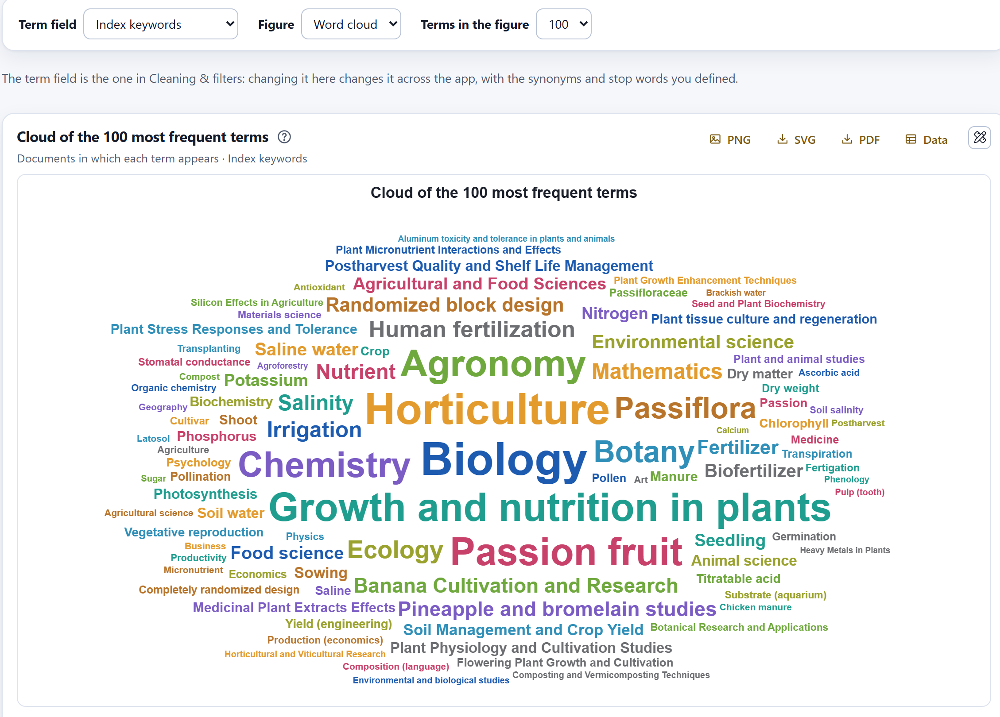
12
Figure 8.7. The cloud of the 100 most frequent terms of the example; the size of each word is its number of documents.
1Term field, type of figure and number of terms.
2Subtitle: documents in which each term appears, and the field used.
▸Example · 618 terms and a few intruders
The index keywords of the example add up to 618 distinct terms. The most frequent are Biology (288 documents), Horticulture (259), Growth and nutrition in plants (213), Passion fruit (201) and Agronomy (188). The cloud also reveals terms the catalog assigned wrongly: Human fertilization appears in 68 documents that deal with the fertilization of the crop, and there are others such as Psychology, Medicine or Pulp (tooth). They are not errors of the app but of the catalog’s automatic classification, and they are corrected by sending them to the stop words (Section 4.6). The counts were reproduced outside the app from the keywords, topics and concepts of each work.
✓Decision rule · which word view to use
View
Use it for…
Bars
a paper: it reads precisely and compares values; with 10 to 20 terms.
Word cloud
a presentation or a first exploration; it does not let you read values, only orders of magnitude.
Treemap
seeing the share of each term in the total with many terms at once; areas are easier to compare than font sizes.
The three views use the same data, which can be downloaded with Data or from the table of the tab.
8.7Growth and trend topics
The last two tabs add time to the words. Growth draws, for the most frequent terms, how many documents use them each year or cumulatively. Trend topics sums up the life of each term in three years: the first quartile, the median and the third quartile of the years of the documents that use it.
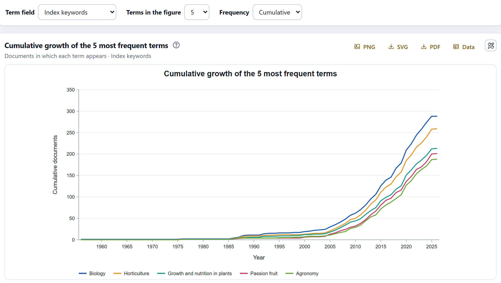
123
Figure 8.8. Cumulative growth of the five most frequent terms of the example.
1Field, number of terms and cumulative or per-year frequency.
2Subtitle: documents in which each term appears.
3The curves separate from 2005 onward: the topic takes off.
θTheory in brief · the median of a term’s years
For each term with at least the chosen minimum frequency, the app sorts the years of the documents that use it and computes three type-7 quantiles (Hyndman and Fan, 1996): the first quartile (Q1), the median and the third quartile (Q3). The segment in the figure runs from Q1 to Q3 and the point marks the median, with a size proportional to the frequency. The terms are sorted by their median year, and for each year the most frequent ones are shown, up to the number you choose in Terms per year. Read from top to bottom, the chart is a chronology of the topic’s vocabulary: old terms at the top, recent ones at the bottom.
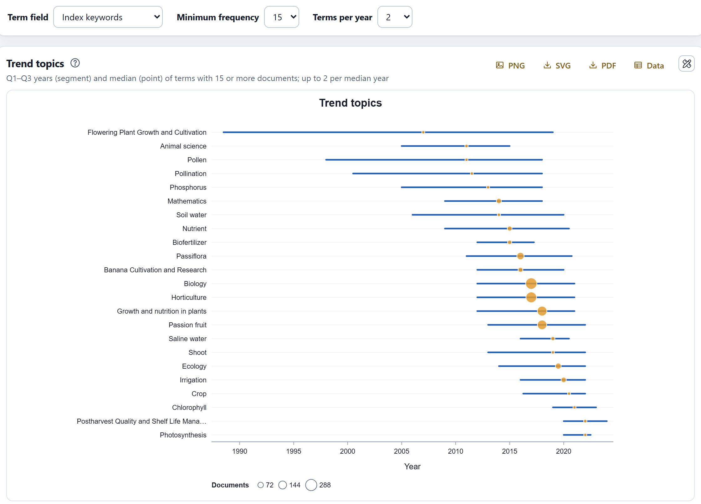
1234
Figure 8.9. Trend topics of the example with a minimum frequency of 15 documents and two terms per year.
1Minimum frequency and terms per year.
2Subtitle: the segment is Q1–Q3 and the point, the median.
3One of the most recent topics: photosynthesis, with its median in 2022.
4The size of the point is the number of documents of the term.
▸Example · from phosphorus to salinity
The chronology of the example begins with floral biology and pollination, goes through phosphorus nutrition and biofertilizers (median in 2015; the middle half of its 40 documents between 2012 and 2017) and arrives at the recent topics: saline water (median in 2019), postharvest quality and photosynthesis, with its median in 2022 and the middle half of its 23 documents between 2020 and 2022.5. The reading for a thesis is straightforward: salt stress and physiology under irrigation with saline water are the active front of the topic. The quartiles of these terms were recomputed outside the app with the same rule, and they match.
!Important · what trend topics do not tell you
A recent term is not necessarily a booming one: it may appear in a few recent documents and then disappear. That is why it is worth raising the minimum frequency until the terms left have enough documents, and checking the Growth tab in Per year mode to confirm that their use is increasing. To see how topics cluster and evolve, Chapter 9 offers the thematic map and thematic evolution.
With the documents, the descriptive part of the analysis ends. The next three chapters move on to networks: the conceptual structure (what the field talks about), the intellectual one (what it rests on) and the social one (who collaborates with whom).
9
Chapter nine
Conceptual structure
What the field talks about: the network of words that appear together in the same documents, the themes they form and their place on the thematic map, how those themes change from one period to the next, and the factorial map that arranges the words on a plane.
9.1The screen and its four tabs
9.2Co-occurrence network
9.3The card of a term
9.4Thematic map
9.5Thematic evolution
9.6Factorial analysis
Networks begin with this chapter. The conceptual structure studies words: two terms are related when they appear in the same documents, and the groups of terms that are strongly related to one another are the themes of the field. The Conceptual screen, in the Structures group of the sidebar, offers four ways of looking at them.
9.1The screen and its four tabs
The four tabs work with the same term field: the one you chose in Cleaning & filters (Chapter 4), with its synonyms and stop words. Each tab has a parameter panel on the left; when you change a value, the tab is recalculated. The Term field selector in the panel is the same one as in Cleaning: if you change it here, it changes throughout the app.
Table 9.1. The four tabs of the conceptual structure.
Tab
What it shows
Question it answers
Co-occurrence network
The most frequent terms, joined when they appear in the same documents and colored by community.
Which words go together?
Thematic map
The themes (groups of words) placed by their centrality and density, in four quadrants.
Which themes are central and which are mature?
Thematic evolution
A thematic map per period and the bands that join the themes that share words.
Where does each theme come from and where is it going?
Factorial analysis
The words on a plane by correspondence analysis, grouped with k-means.
Which words are alike in the documents they appear in?
iNote · the data in this chapter
The figures use the passion fruit example data (300 documents from the open catalog) with the Index keywords field, the only one that catalog provides. The catalog assigns broad areas of science to almost every document—Biology appears in 288 of the 300, Chemistry in 170, Mathematics in 60—and some wrong assignments caused by similar words: Human fertilization in 68 documents that deal with fertilizing the crop, Pulp (tooth) in 8 that deal with the pulp of the fruit. Those terms would take the center of every network without saying anything about the subject, so for this chapter 14 stop words were added to the English list: Biology, Chemistry, Mathematics, Physics, Psychology, Medicine, Economics, Business, Geography, Art, Materials science, Human fertilization, Pulp (tooth) and Composition (language). To reproduce the figures, type them in Cleaning & filters › Keywords, in the English stop-word list, and press Save lists (Section 4.6). With them there are 604 distinct terms, 258 of them in two documents or more. Every figure quoted was checked outside the app.
9.2Co-occurrence network
θTheory in brief · co-occurrence and association strength
Two terms co-occur when they appear in the same document; the count cij is the number of documents that have both. Counts favor frequent terms, which co-occur with almost everything just because they are frequent. That is why the app normalizes by default with the association strength (van Eck and Waltman, 2009), which divides the count by what would be expected by chance given the frequency of each term:
ASij = cij / (ci · cj)
where ci and cj are the documents of each term. On that network, the Louvain algorithm (Blondel et al., 2008) forms communities: groups of terms more tightly joined to one another than to the rest, measured by the modularityQ. The resolution γ controls their size: with γ greater than 1 there are more, smaller communities.
Table 9.2. Parameters of the co-occurrence network and their default values.
Parameter
What it does
Default
Minimum frequency (documents)
Leaves out the terms that appear in fewer documents.
2
Maximum number of nodes
How many terms enter, from the most frequent down (up to 500).
50
Minimum co-occurrences per edge
Joins two terms only if they share at least that number of documents. It applies to the count, before normalizing.
1
Remove isolated nodes
Hides the terms left without edges.
Yes
Normalization
None (counts), association strength, Salton’s cosine, Jaccard, inclusion index or equivalence index.
Association strength
Algorithm
Louvain or fast greedy (Clauset, Newman and Moore, 2004).
Louvain
Resolution (γ)
Size of the communities: the higher γ, the more communities.
1
Layout
ForceAtlas2 (joined terms attract each other) or circular.
ForceAtlas2
Node size
Frequency, degree, strength, betweenness or PageRank.
Frequency
Visible labels
How many names are written, from the largest nodes; more appear as you zoom in.
20
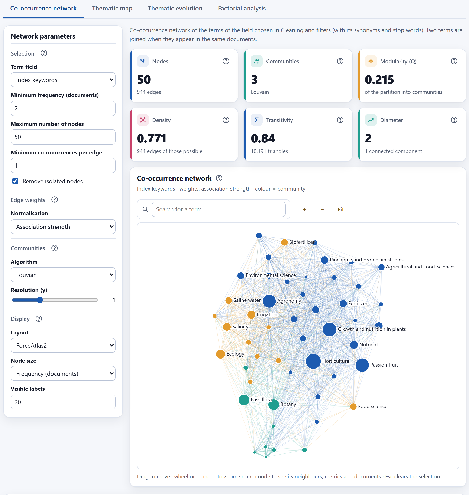
123456789
Figure 9.1. The co-occurrence network of the 50 most frequent terms of the example, with the default parameters.
1Selection: term field, minimum frequency, number of nodes and minimum co-occurrences.
2Edge weights: the normalization.
3Communities: algorithm and resolution γ.
4Display: layout, node size and visible labels.
5Modularity of the partition into communities.
6Density: proportion of the possible edges that exist.
7Subtitle: field, normalization and meaning of the color.
8Search for a term, zoom in, zoom out and fit the network.
9The orange community: salinity, irrigation, saline water and ecology.
The six cards summarize the network. The network is calculated in the background; if it takes more than a moment, a progress window appears (Measuring the network, Placing the nodes) with a Cancel button; changing the algorithm, the resolution or the display recolors the same drawing without repeating the calculation.
Table 9.3. The network cards and their values in the example.
Card
What it measures
Example
Nodes
Terms in the network and edges between them.
50 · 944 edges
Communities
Groups formed by the algorithm.
3 · Louvain
Modularity (Q)
How separate the communities are: from 0 (not at all) to close to 1. With γ other than 1, Qγ is reported as well.
0.215
Density
Existing edges ÷ possible edges, n(n − 1)/2.
0.771 (944 of 1,225)
Transitivity
Probability that two neighbors of a term are also joined (3 × triangles ÷ triplets).
0.84 · 10,191 triangles
Diameter
The largest number of steps between two terms, and how many pieces the network has.
2 · 1 connected component
▸Example · a very dense network with three communities
The 50 most frequent terms of the example form an almost complete network: 944 of the 1,225 possible edges exist (density 0.771) and any term reaches any other in two steps at most. That is to be expected in a single-topic set, where the main terms appear together again and again. Even so, Louvain distinguishes three communities: the blue one, the largest, with the agronomic core (Horticulture, Growth and nutrition in plants, Passion fruit, Agronomy, Fertilizer); the orange one, with salt stress and irrigation (Salinity, Saline water, Irrigation, Ecology); and the green one, with the botany of the genus (Botany, Passiflora). The low modularity (0.215) warns that the boundaries between them are faint. The counts of the 944 edges, the density and the neighbors of each term were reproduced outside the app.
!Important · the communities depend on the parameters
The partition into communities is not a fact of the data: it changes with the normalization, the resolution and the number of terms. Before naming the communities in a paper, try two or three resolutions (for example 0.8, 1 and 1.2) and keep the groups that persist. If the network is very dense, raise the Minimum co-occurrences per edge to 2 or 3 to see only the repeated links. And remember that, with association strength, the most frequent terms end up on the periphery of the drawing: they co-occur with everything, but with low weights.
Below the interactive network are the Term co-occurrence network ready for publication (with its editing and export bar, like every figure) and three tables: nodes with their metrics, communities with their terms, and edges with their count and weight. The export card downloads the network in the formats of network analysis programs (Chapter 13).
9.3The card of a term
When you click a node, or search for it, the network highlights its edges and a card appears below with its metrics, its neighbors and the documents in which it appears.
Type the term in Search for a term… and choose it from the list, or click its node.
Read the card below the network. Each neighbor in the list is a button: pressing it moves the card to that term.
Press Clear selection or the Esc key to go back to the whole network.
Table 9.4. The metrics of a node.
Metric
What it measures
Salinity
Frequency
Documents in which the term appears.
58
Degree
Terms it co-occurs with.
45 of 49 possible
Strength
Sum of the weights of its edges.
0.2147
Betweenness
Fraction of the shortest paths between two other terms that pass through it (Brandes, 2001), from 0 to 1.
0.0066
Closeness
Inverse of the mean distance to the other terms (Freeman, 1979), from 0 to 1.
0.9245
PageRank
Importance inherited from that of its neighbors (Brin and Page, 1998); it adds up to 1 over the whole network.
0.0242
Betweenness and closeness count steps, not weights: in a network as dense as the example’s, almost every term is one or two steps away, so betweenness is small and closeness high for all of them. To compare terms in dense networks, strength and PageRank discriminate better.
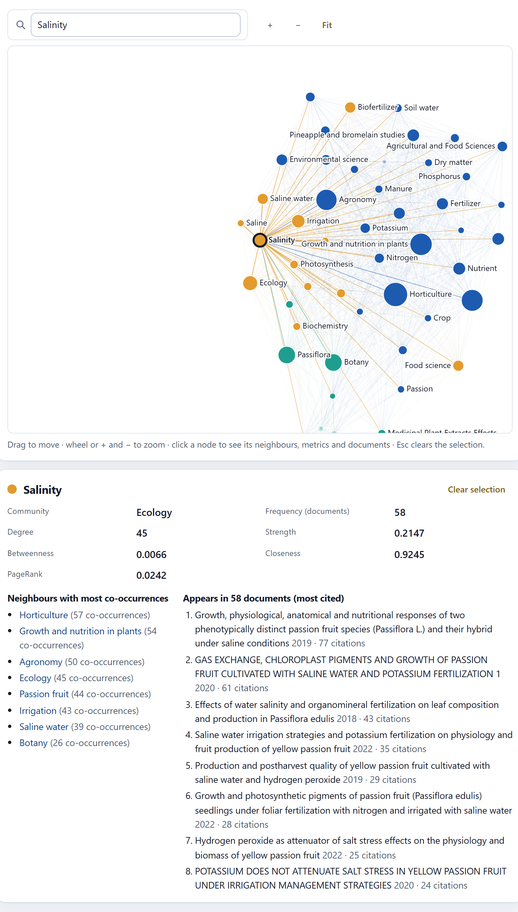
1234567
Figure 9.2. The card of the term Salinity.
1Search for the term.
2The chosen node gets an outline and its edges are highlighted.
3Clear selection.
4The community, with the name of its most frequent term.
5The metrics of the node (Table 9.4).
6The eight neighbors with the most co-occurrences; each one opens its card.
7Documents in which it appears, the eight most cited.
▸Example · salinity
Salinity appears in 58 documents and co-occurs with 45 of the other 49 terms. Its strongest neighbor is Horticulture, in 57 of its 58 documents: the catalog assigns that area to almost the whole set. The neighbors that say something about the subject come next: Irrigation (43), Saline water (39). Among its most cited documents are a 2019 study of the responses of two passion fruit species and their hybrid to salinity (77 citations) and a 2020 one on saline water and potassium fertilization (61 citations). The card is a good starting point for reading: it leads from a term to the most influential works that use it.
9.4Thematic map
θTheory in brief · Callon’s centrality and density
The thematic map (Cobo et al., 2011) starts from a larger co-occurrence network—250 words by default, with association strength—and takes each Louvain community as a theme. Each theme is measured with two numbers from Callon, Courtial and Laville (1991):
centrality = 10 × Σ weights of the edges leaving the theme · density = 100 × Σ weights of the internal edges / words in the theme
Centrality measures how much the theme relates to the others (its relevance to the field); density, how tightly its words are joined (its degree of development). The axes of the map pass through the medians of the two measures and divide it into four quadrants.
Table 9.5. How to read the four quadrants.
Quadrant
Position
Reading
Motor themes
Upper right: high centrality and density.
Developed and important; they drive the field.
Niche themes
Upper left: high density, low centrality.
Highly developed but isolated; specialized.
Emerging or declining themes
Lower left: both low.
Underdeveloped and marginal; the thematic evolution tells whether they are being born or fading.
Basic themes
Lower right: high centrality, low density.
Cross-cutting and general; the common ground of the field.
The Map parameters panel holds the word selection (field, minimum frequency 2, Number of words 250 and minimum co-occurrences 1) and the theme parameters: resolution 1, Minimum words per theme 2 (smaller groups are not drawn, although their edges count toward the centrality of the others) and Words in the label 3. Below the map, the Themes table lists all the words, the frequency, the centrality and the density of each theme, with the two medians, and the Documents of each theme table assigns each document to the theme with the most of its words.
Table 9.6. The nine themes of the example, from highest to lowest centrality. Medians: centrality 76.99 and density 38.58.
Quadrant
Main words
Words
Centrality
Density
Basic
Horticulture, Growth and nutrition in plants, Passion fruit
76
209.39
20.13
Motor
Food science, Titratable acid, Botanical Research and Applications
33
154.44
45.47
Motor
Plant Stress Responses and Tolerance, Biochemistry, Plant Micronutrient…
22
102.15
38.58
Motor
Medicinal Plant Extracts Effects, Plant and soil sciences, Inoculation
17
85.63
82.36
Basic
Botany, Passiflora, Plant tissue culture and regeneration
27
76.99
38.01
Niche
Passion, Saline, Silicon Effects in Agriculture
18
74.46
45.90
Emerging or declining
Nutrient, Nitrogen, Phosphorus
16
68.40
35.62
Niche
Agricultural and Food Sciences, Production (economics), Agriculture
29
58.00
42.05
Emerging or declining
Cultivar, Composting and Vermicomposting Techniques, Leaf Properties…
12
46.74
29.18
✓Rule · a theme on the axis
With an odd number of themes, the median is the value of one of them, and that theme lies exactly on an axis. The app puts it on the high side: a theme with centrality equal to or greater than the median is central, and one with density equal to or greater than the median is dense. In the example this happens twice: the theme of botany and Passiflora lies on the vertical axis (centrality 76.99, the median) and counts as basic; the theme of stress and micronutrients lies on the horizontal axis (density 38.58, the median) and counts as motor. When discussing these themes in a paper, it is worth saying that they are on the boundary.
▸Example · what the map says about passion fruit
The 300 documents fall into 9 themes. The dominant basic theme is the general one—horticulture, growth and nutrition of passion fruit, 76 words—: it is joined to everything, but it is not very cohesive. The motor themes are fruit quality (food science, titratable acidity), the response to stress with micronutrients, and medicinal plant extracts with inoculation, the densest theme of all. The niches hold salt stress with silicon and the economics of production. The emerging or declining themes are nutrition with nitrogen and phosphorus, and cultivars with composting: the thematic evolution in the next section tells which of the two they are. The centrality and density of the nine themes, the medians and the quadrants were recalculated outside the app and agree.
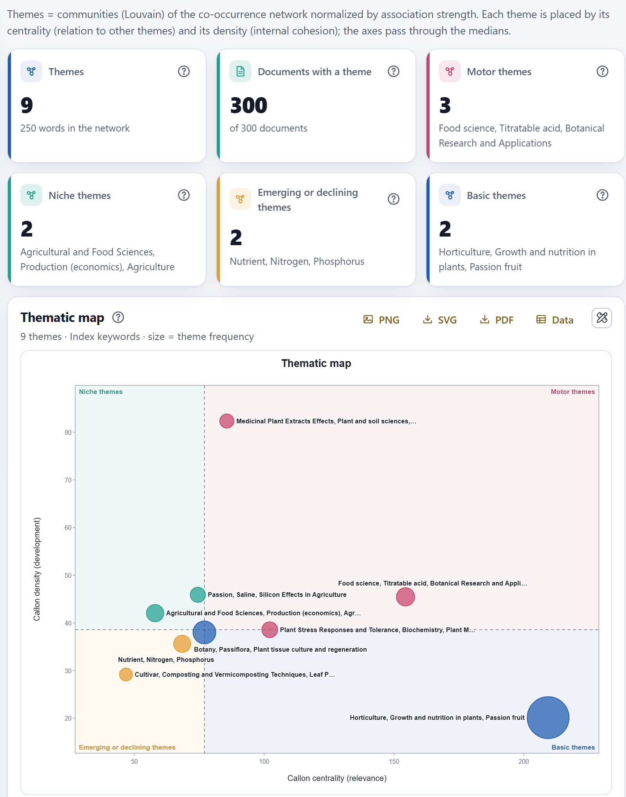
1234567
Figure 9.3. The thematic map of the example, with the default parameters.
1Themes and words in the network.
2Documents that fall into some theme.
3One card per quadrant, with the words of its most frequent theme.
4Subtitle: the size of the bubble is the frequency of the theme.
5The densest theme: medicinal plant extracts.
6The vertical axis passes through the median of centrality; the horizontal one, through that of density.
7The largest basic theme: horticulture, nutrition and passion fruit.
9.5Thematic evolution
The thematic evolution divides the documents into periods, calculates a thematic map in each one with the same parameters and joins the themes of consecutive periods that share words. In the Periods group of the Evolution parameters panel, type up to four cut years, from Cut year 1 to Cut year 4: each period ends in a cut year and the last one reaches the most recent year. With no cut years, the app uses the median year, so the two periods have almost the same number of documents.
12345
Figure 9.4. The thematic evolution of the example, with the default cut at the median year.
1The periods, with their documents and themes.
2Subtitle: the thickness is the inclusion index and the color, the quadrant.
3One column per period; the height of each block is the frequency of the theme.
4The basic theme of the second period receives bands from almost all the earlier themes.
5Floral biology: motor before 2018, emerging or declining afterward.
θTheory in brief · the inclusion index
Two themes of consecutive periods are joined when they share at least one word. The thickness of the band is the inclusion index (Cobo et al., 2011):
inclusion = shared words / words of the smaller theme
It equals 1 when the small theme is entirely contained in the other. A theme that receives bands from several earlier themes is a merger; one that splits its words among several later themes is a split; one without bands is born or disappears in that period.
Hovering over a band shows its inclusion index and the shared words. Below the diagram are the Thematic map of each period (a small map per period, with the same bubble scale so they can be compared) and the Links between themes and Themes of each period tables. The Minimum inclusion index control hides the weak bands, which is useful when there are many.
▸Example · floral biology fades and nutrition concentrates
The median year of the example is 2017: 151 documents from 1956 to 2017 form 6 themes and 149 from 2018 to 2026 form 8, joined by 31 bands. The thickest one (inclusion 0.75) joins the motor theme of floral biology in the first period—botany, pollination, pollen, 20 words—to an emerging or declining theme in the second that keeps 6 of its 8 words: the theme is not being born, it is fading. The economics of production remains a niche in both periods (inclusion 0.50). Nutrition, by contrast, concentrates: the motor theme of the second period (Nutrient, Seedling, Nitrogen) brings together nitrogen, phosphorus and shoots from the earlier basic theme and the term Nutrient from the earlier emerging theme. The documents and words of each period, the centrality, density and quadrant of the 14 themes, and the inclusion index of the 31 bands were reproduced outside the app.
!Important · meaningful periods
The cut at the median year is fine to begin with, but the periods of a paper should follow the history of the field: a policy change, the arrival of a technique, a decade. Also make sure each period has enough documents; with few, the themes are made of a handful of words and change a lot with any parameter. The inclusion index counts words, not occurrences: a thick band between two small themes may come from two or three shared words, which are worth checking in the links table.
9.6Factorial analysis
The factorial analysis arranges the words on a plane so that words appearing in the same documents end up close together. By default it uses multiple correspondence analysis (MCA) of the documents × words table, with each word as a variable with two categories, present or absent; the other option, Correspondence analysis, works directly with the presence table. It then groups the words with k-means on the first two dimensions; with Automatic (silhouette) it tries 2 to 8 clusters and keeps the one with the highest mean silhouette (Rousseeuw, 1987).
12345678
Figure 9.5. The factorial map of the 50 most frequent words of the example.
1Method: multiple or simple correspondence analysis.
2Number of clusters: by the silhouette or from 2 to 8.
3Shows Ward’s dendrogram below the map.
4Dimension 1: Benzécri’s adjusted inertia.
5The number of clusters suggested by the silhouette.
6Subtitle: words and clusters.
7Legend of the clusters, with their first three words.
8Cluster 2: floral biology, far from the rest.
θTheory in brief · why the MCA inertia is adjusted
In MCA, each dimension explains a share of the total inertia, the variation in the table. With many two-category variables those percentages always come out small—in the example, 9.81% for the first dimension—because the table of presences and absences inflates the inertia with variation that is not association between words. Benzécri’s correction (1979) removes that part: only the eigenvalues λ greater than 1/Q count, with Q the number of words, and each one is transformed as follows:
λadjusted = [ Q / (Q − 1) · (λ − 1/Q) ]²
The adjusted percentages are computed on the sum of the adjusted λ. They are the ones worth reporting for MCA (Greenacre, 2007); the eigenvalue table shows both.
1234
Figure 9.6. Eigenvalues and silhouette by number of clusters in the example.
1Dimension 1 explains 9.81% of the unadjusted inertia…
2… and 51.53% with Benzécri’s adjustment; the first two add up to 73.3%.
3Two clusters have the highest mean silhouette (0.623): that is the suggested k.
4The sum of squares always falls as k rises; on its own it is no use for choosing it.
▸Example · floral biology apart
The 50 words appear in 299 of the 300 documents. The first dimension (51.5% adjusted) separates a small group—pollination, pollen, Passifloraceae, floral biology, medicinal extracts—from the rest of the vocabulary; the second (21.8%) orders that rest: photosynthesis, salinity and stress at the top; yield, dry weight and fertilizers at the bottom. The silhouette suggests two clusters, of 6 and 44 words. Eigenvalues, percentages, coordinates, clusters, silhouettes and Ward heights were reproduced with another statistical program.
If you check Show the dendrogram, Ward’s (1963) hierarchical clustering on the same coordinates appears below the map, with the leaves colored by k-means cluster. The Coordinates of the words table gives, for each word, its frequency, its cluster, its two coordinates, its contribution to each dimension and its quality of representation on the plane (cos²).
1234
Figure 9.7. The dendrogram of the words of the example.
1The figure for publication: Ward on the map coordinates; the color is the k-means cluster.
2The first split separates four pollination words (height 8.61).
3Two words of k-means cluster 2 fall on another branch of the tree.
4Ward height: how much the within-group variation grows when two branches are joined.
!Important · k-means and Ward need not agree
The two methods group the same coordinates with different criteria: k-means seeks the partition with the smallest sum of squares for a given k; Ward joins the most similar groups step by step and cannot undo a merge. In the example they agree on the essentials—pollination stays apart—, but the two words of cluster 2 closest to the center of the map (Medicinal Plant Extracts Effects and Flowering Plant Growth and Cultivation) join the botany branch in the tree. Words that both methods put together form a solid group; those that change group are on the boundary and should not be given much weight in the interpretation. Remember, too, that the plane shows only two dimensions: two words close on the map may be far apart in the third.
iNote · to go further
The factorial analysis in SciMetricsPro is an exploratory view of the words, as in the bibliometric literature. For a complete multivariate analysis—more dimensions, supplementary variables, other clustering methods and their validation—, the app says so in its notice: export the coordinates table or the clean set and analyze it with the factorial analysis and clustering apps of the same family.
The conceptual structure looks at the words of the documents. Chapter 10 looks at their references: which works are cited together, which documents share a bibliography and how citations link up within the set.
10
Chapter ten
Intellectual structure
What the field rests on: the works, authors and journals that are cited together, the documents that share a bibliography, the clusters they form according to their centrality and impact, and the chain of direct citations among the documents of the set.
10.1The screen and its four tabs
10.2Co-citation
10.3Bibliographic coupling
10.4Coupling map
10.5Historiograph
The conceptual structure of Chapter 9 looks at words; the intellectual structure looks at references. What a document cites tells which works it builds on, and when many documents cite the same works the common ground of the field appears: its classics, its schools and its research fronts. The Intellectual screen, in the Structures group, brings together four citation analyses.
10.1The screen and its four tabs
The four analyses start from the references of each document, unified as in Documents › References (Chapter 8): the occurrences of the same work with the same DOI, the same author, year, volume and page, or the same text count as a single work. The network tabs use the parameter panel of Chapter 9, with the units and minimums specific to each analysis.
Table 10.1. The four tabs of the intellectual structure.
Tab
What it joins
Question it answers
Co-citation
Two works, authors or sources cited by the same document of the set.
Which works form the foundation of the field?
Bibliographic coupling
Two documents, authors or sources of the set that cite the same works.
Which documents work on the same thing?
Coupling map
The coupling clusters, placed by their centrality and impact.
Which lines of work are central and which are cited most?
Historiograph
The direct citations among the documents of the set, ordered by year.
How do the works link up over time?
iNote · the data in this chapter
The references of the open catalog arrive as work identifiers, with no author, year or journal. They are enough for coupling, the coupling map and the historiograph, which only need to know which works each document cites, and for the co-citation of references, although with names such as “W2996734229” when the cited work is not a document of the set. That is why Sections 10.3 to 10.5 use the passion fruit example data, with the 14 stop words of Chapter 9, and Section 10.2 uses the public set of 147 articles on co-citation and coupling analysis introduced in Chapter 8, with its complete references. Every figure quoted was checked by reading the files outside the app.
!Important · no references, no intellectual structure
If no document carries references—for example, with an export from the biomedical index—, the screen shows, instead of the tabs, the notice The documents have no cited references, explains how to export each type of file again with its references and offers the See in Import how to export each database button, which opens the instructions on the import screen. While the references of a large set are calculated in the background, the screen says so and waits.
10.2Co-citation
θTheory in brief · two works cited together
Two works are co-cited when the same document cites both (Small, 1973; Marshakova, 1973). The more documents cite them together, the more related the authors of the field perceive them to be, even if they do not cite each other. Co-citation looks backward: it joins what the field considers its foundation, and it changes over time as new citing documents are published. The same idea applies to cited authors (White and Griffith, 1981) and to cited sources (McCain, 1991). The network is built like the co-occurrence network of Chapter 9: the most cited works are the nodes, the co-citation count is the weight of each edge and the default normalization is the association strength.
12345
Figure 10.1. The co-citation network of the 50 most cited references of the scientometrics set.
1Unit: references, cited authors or cited sources.
2The network cards (Table 9.3).
3Search for a reference.
4Two works by Small (1985): with volume and page.
5The most cited: Small 1973 (63 documents).
Table 10.2. The three co-citation units and the most cited ones in the scientometrics set.
Unit
What a node is
The most cited
References
A cited work, with its occurrences unified. If the work is a document of the set, it is named as that document.
Small 1973 (63), Kessler 1963 (35), White and Griffith 1981 (27), Small 1974 (25)
Cited authors
The first author of the cited works, by surname and initial. It counts the documents that cite any of their works.
Small H (95), Leydesdorff L (46), White HD (46), Garfield E (41)
Cited sources
The journal or book of the cited works. Abbreviations are joined to the full title when there is no ambiguity.
Scientometrics (131), the journal of the American information science society (112)
The panel changes two names with respect to the word network: Minimum citations (citing documents), instead of the minimum frequency, and Minimum co-citations per edge. When you choose a node, the card shows the complete reference with its DOI link, the works most often co-cited with it and the documents of the set that cite it, starting with the most cited.
1234
Figure 10.2. The co-citation network of cited authors, ready for publication, of the scientometrics set.
1Each community, with its most cited author.
2Leydesdorff: networks and indicators.
3White: author co-citation.
4Small (95 documents): the founders.
▸Example · the classics of citation analysis
In the 147 articles on co-citation and coupling analysis, the most cited work is the article in which Small proposed co-citation in 1973 (63 documents), followed by Kessler’s, which proposed coupling in 1963 (35), and White and Griffith’s, which took co-citation to authors in 1981 (27): the set cites its own founders. With authors, the network separates three communities: Small’s, with Garfield, Kessler and Glänzel; White’s, with McCain and Chen; and Leydesdorff’s, with Newman and Boyack. The citations of the 50 references and of the 30 most cited authors, and the co-citations of 598 of the 610 edges, were reproduced by reading the reference field of the file without the app. The other differences come from two references that the app rightly joins (“SMALL HG” and “SMALL H”, with the same volume and page) or because they point to the same document of the set.
iNote · names that look alike
A work is named by its first author, year and source. When two different works would have the same name—two articles by the same author in the same journal and the same year—, the app adds their volume and first page (“SMALL H, 1985, SCIENTOMETRICS, 7:391” and “…, 8:321”), or their DOI if they have none. The same holds in Documents › References and in the RPYS peaks.
10.3Bibliographic coupling
θTheory in brief · two documents with a common bibliography
Two documents are coupled when they cite the same works (Kessler, 1963); the coupling strength is the number of references they share. Unlike co-citation, coupling joins the citing documents and is fixed as soon as they are published: two recent articles that share a bibliography work on the same research front, even if nobody cites them yet. Since a document with many references shares more simply because of its size, the app normalizes by default with Salton’s cosine:
cosij = cij / √(ni · nj)
where cij is the number of shared references and ni, nj the distinct references of each document. It equals 1 if the two bibliographies are identical. The coupling of authors and of sources pools all the references of the documents of each author or journal (Zhao and Strotmann, 2008).
123456
Figure 10.3. The coupling network of the 50 most cited documents of the example.
1Unit: documents, authors or sources.
245 of the 50 documents have edges.
3Weights with Salton’s cosine.
4Orange: irrigation with saline water.
5Node size: total citations.
6Blue: fruit composition and nutrition.
Table 10.3. The parameters specific to coupling and their default values. The others are those of Table 9.2, with Salton’s cosine and size by total citations.
Parameter
What it does
Default
Minimum documents per unit
Authors and sources only: documents they must have.
1
Maximum number of units (most cited)
How many units enter, from the most cited down.
50
Minimum shared references per edge
Works in common needed to join two units.
1
▸Example · two twin articles and four fronts
Of the 50 most cited documents of the example, 45 share some reference; the other five—among them a 1988 botany study and a 1992 one from a pharmacy journal—are left out as isolated nodes. The strongest pair are two 2012 articles on biofertilizers in yellow passion fruit, whose first authors share a surname and which were published in different journals; they share 29 references (cosine 0.744). Louvain distinguishes four communities: the orange one, with irrigation with saline water and salt stress; the blue one, with fruit composition, reviews of the genus and mineral nutrition; the green one, with biofertilizers, organic manures and substrates; and the red one, with Menzel’s classic studies on water, temperature and nutrition, and the works that follow them. The 50 documents, the 208 edges, the shared references of each and their cosine were reproduced outside the app, without a single difference.
10.4Coupling map
θTheory in brief · centrality and impact of each cluster
The coupling map (Aria, Misuraca and Spano, 2020) does with documents what the thematic map does with words. It starts from a larger coupling network—up to 250 documents, with Salton’s cosine—, takes each Louvain community as a cluster and places it with two measures: Callon’s centrality, 10 × the sum of the weights of the edges leaving the cluster (how connected it is to the others), and the impact, the mean of the normalized citations of its documents. The normalized citation of a document is its number of citations divided by the mean citations of the documents of the set published in the same year, so 1 is the mean for its year. The axes pass through the medians.
Table 10.4. The four quadrants of the coupling map.
Quadrant
Position
Reading
Central and high impact
Upper right.
Lines connected to the rest and highly cited: the core of the field.
Peripheral and high impact
Upper left.
Isolated but highly cited lines: influential specialties.
Peripheral and low impact
Lower left.
Marginal, little-cited lines: emerging or receding.
Central and low impact
Lower right.
Connected but little-cited lines: supporting topics.
Each cluster is named with the terms most characteristic of its documents, from the chosen term field: those that combine frequency in the cluster and exclusivity (frequency × documents of the cluster that use it ÷ documents of the set that use it). The Map parameters panel holds the unit, the number of units (250) and the minimum shared references; under Clusters, the Impact measure (normalized total or local citations), the resolution and the Minimum units per cluster (2); and under Labels, the term field and the Terms in the label (3). Below the map, the Clusters of the coupling map table gives the medians, the documents, the centrality, the impact and the terms of each cluster, and the Documents of each cluster table gives the normalized citation of each document.
Table 10.5. The eight clusters of the example. Medians: centrality 127.30 and impact 0.921.
Horticulture, Growth and nutrition in plants, Passion fruit
42
270.63
1.262
Central, high
Horticulture, Passion fruit, Pineapple and bromelain studies
37
259.55
0.947
Peripheral, low
Nitrogen fertilizer, Plant Physiology and Cultivation Studies, Cutting
17
69.28
0.720
Peripheral, low
Biofertilizer, Soil salinity, Saline water
4
26.65
0.894
Peripheral, low
Economic growth, Agricultural economics, Economic and Environmental Valuation
4
1.32
0.329
Peripheral, low
Biofertilizer, Nutrient, Agronomy
3
3.75
0.868
▸Example · the center and the edge of passion fruit research
Of the 250 most cited documents, 236 have references and 221 share some with another; they form 8 clusters. In this set centrality and impact go together: the four large clusters (193 documents) are central and high impact, and the four small ones are peripheral and little cited; the other two quadrants are empty. The cluster with the highest impact brings together medicinal plant extracts and the botany of the genus (1.47 times the mean for its year); the most remote, agricultural economics, has a centrality of 1.3 and a third of the mean impact. The centrality, impact, medians and quadrants of the 8 clusters were recalculated outside the app and agree to the last digit.
123456
Figure 10.4. The coupling map of the documents of the example.
1Clusters and documents in the network.
2One card per quadrant.
3Subtitle: clusters and impact measure.
4Highest impact: medicinal extracts.
5The axes pass through the medians.
6Lowest impact: agricultural economics.
10.5Historiograph
θTheory in brief · the family tree of a topic
The historiograph (Garfield, 2004) draws the direct citations among the documents of the set with the most local citations, those they receive from other documents of the set (Garfield, Pudovkin and Istomin, 2003). Each column is a year with documents—years without documents take up no space—and each arrow runs from the cited, older document to the one that cites it. The chains of arrows show how one work inspired the next; the groups of documents joined by citations are families, each with its color. Within each year the documents are ordered to reduce crossings (Sugiyama, Tagawa and Toda, 1981).
Table 10.6. The parameters of the historiograph.
Parameter
What it does
Default
Number of documents (most locally cited)
How many documents enter (up to 200); in a tie, those that cite others of the set and then those with the most total citations.
30
Minimum local citations
With 0, documents that only cite also enter, which is useful in small sets.
1
Remove documents without drawn citations
Keeps only the documents joined by some arrow.
No
Document names
First author and year, or the start of the title.
First author and year
When you click a document, or choose it with the keyboard and Enter, its card appears: title, authors, source, DOI with a link, local and total citations, and two lists, Cites and Cited by, whose items lead to the card of each document. Below are the Documents of the historiograph and Citations among the documents of the historiograph tables; the latter says, for each citation, whether it was drawn or why not.
▸Example · two genealogies of passion fruit research
The 30 documents with the most local citations run from 1986 to 2023 and are joined by 33 citations into three families. The orange one is Menzel’s line: his 1986 and 1987 studies on water and temperature lead to his 1993 proposal of leaf concentrations, the most cited document within the set (12 local citations), which is later cited by works from 2011 and 2018. The blue one, the largest (20 documents, from 2002 to 2023), is the line of fertilization and irrigation with saline water: it passes through two 2020 articles by the same first author and reaches a 2023 article on salt stress that cites eight documents of the figure. The third, in green, joins two articles from 2012 and 2016 on organic manures. Three documents remain in gray: they have local citations, but from documents that did not make it into the 30. The 30 documents, their order and the 33 citations among them were reproduced outside the app.
12345678
Figure 10.5. The historiograph of the 30 documents with the most local citations of the example.
1Documents chosen (out of 150 cited).
2Citations drawn (out of 396 local).
3Citation families.
4Citations not drawn (none here).
5Menzel 1993: the most locally cited.
6In gray: no drawn citations.
7A 2023 article that cites eight.
8One column per year with documents.
!Important · citations that are not drawn
A citation to a document with a later year than the citing one is not drawn: this happens when one database uses the year of the online version and another that of the print version, or when a chapter or a thesis has a late date. Citations between documents of the same year that would close a cycle are not drawn either. The Citations not drawn card and a notice above the figure count them, and the citations table says which they are. Remember too that the historiograph only sees citations within the set: a classic that is not among your documents does not appear, even if everyone cites it (that is what co-citation is for).
Words and references describe what the field is about and what it rests on. Chapter 11 turns to people: who writes with whom, which institutions and countries collaborate and how collaboration changes over the years.
11
Chapter eleven
Social structure
Who works with whom: the co-authorship network of authors, institutions and countries, the world map of international collaboration with its arcs between countries, and the timeline that shows how collaboration changes over the years.
11.1The screen and its three tabs
11.2Collaboration network
11.3World collaboration map
11.4Collaboration over time
After words (Chapter 9) and references (Chapter 10), the social structure looks at people and places. Two authors, two institutions or two countries are joined when they sign a document together. The Social screen, in the Structures group, offers three views of that collaboration.
11.1The screen and its three tabs
The social structure uses the authors, institutions and countries as they were left in Cleaning & filters (Chapter 4): the author variants you merged, the institution equivalences and the country aliases. That is why it is worth reviewing those Cleaning tabs before drawing a collaboration network.
Table 11.1. The three tabs of the social structure.
Tab
What it shows
Question it answers
Collaboration network
Authors, institutions or countries joined by the documents they sign together.
Who works with whom?
World collaboration map
The countries colored by their output and arcs between those that sign together.
Which countries does each country collaborate with?
Collaboration over time
Authors, institutions and countries per document, year by year, and the percentage of international documents.
Does collaboration grow over time?
iNote · the data in this chapter
The figures use the passion fruit example data (300 documents from the open catalog), with no changes in Cleaning: the social structure does not depend on the term field, so the 14 stop words of Chapters 9 and 10 change nothing here. Of the 300 documents, 62 carry no affiliations and 236 have at least one recognized country. The author and country networks, the map and the timeline were checked by reading the example file outside the app.
11.2Collaboration network
θTheory in brief · co-authorship as a trace of collaboration
The co-authorship network (Newman, 2001) joins two authors by the number of documents they sign together; with institutions or countries, two units are joined by the documents with authors from both, and each document counts once for each pair. It is built like the co-occurrence network of Chapter 9, with the same weights, communities and metrics: a community is a research group or a network of institutions that publishes together more often than with the rest. Signing together is a partial measure of collaboration (Katz and Martin, 1997): it leaves out work that does not end in a joint paper, and it counts the person who led a study the same as the one who contributed a sample.
Table 11.2. The three units of the network and the minimum documents the app proposes for each one.
Unit
What a node is
Minimum documents
Authors
An author, with the variants merged in Cleaning (surname and initials).
2
Institutions
The organization of each affiliation, with the Cleaning equivalences.
2
Countries
A country of the affiliations, recognized by its name or by an alias.
1
When you change the Unit of analysis, the app sets the minimum documents of the table; you can change them afterward. The other parameters are those of Table 9.2, with Minimum co-authored documents instead of the minimum co-occurrences. If some documents do not carry the information for the chosen unit, a notice says how many are left out of the network.
123456
Figure 11.1. The collaboration network of the authors of the example with two documents or more.
1Unit: authors, institutions or countries.
2Minimum documents of each unit.
3Minimum co-authorships per edge and isolated nodes.
4The network has four separate pieces.
5A small piece, next to the main one.
6Orange: the saline-water irrigation group.
▸Example · two Brazilian groups joined by a few bridges
Of the 300 documents, 289 have two authors or more. The 49 authors with at least two documents signed with someone form 226 edges in 7 communities, with modularity 0.555: well-defined groups. The two largest are Brazilian. The blue one revolves around the most productive author of the set (46 documents) and works on biofertilizers and nutrition; the orange one is the saline-water irrigation group, whose three main authors sign together more than any other pair: 25, 23 and 20 documents. Between the two groups, a few authors act as bridges (in red). Three pairs stay apart, with no co-authors in the Brazilian groups: a Japanese pair, another Brazilian pair and Menzel and Simpson, the Australian authors of the classic studies of Chapter 10. The 49 authors, their documents and the 226 edges with their co-authored documents were reproduced outside the app, without a single difference.
iNote · the pieces of a network
When the network has several pieces with no connection between them, the app draws each with its own layout and packs them together, with the largest in the center, instead of letting the small ones drift away and shrink the drawing. The Diameter card says how many pieces there are (connected components). In the viewer, a label that does not fit to the right of its node is written to its left.
When you click a node, its card appears, as in Chapter 9: metrics, Most frequent collaborators with their co-authored documents, and the documents of the author, institution or country, starting with the most cited. Below the viewer are the figure for publication, the tables of nodes, communities and edges, and the card that saves the network for other programs (Chapter 13).
!Important · the institution network depends on Cleaning
The institution network is only as good as the recognition of the institutions. In the example, the same university appears in Portuguese and in English (Universidade Federal de Campina Grande and Federal University of Campina Grande) and the network draws them as two nodes that do not even touch: the English version forms its own group with the other universities written in English (Federal University of Paraiba, Federal Rural University of the Semi-Arid), a mirror image of the Portuguese group. Before interpreting an institution network, review the first rows of Cleaning & filters › Institutions & countries and join with equivalences those that are the same (Section 4.5). Something similar happens with countries: affiliations that do not end in a recognizable country do not enter the network until you assign them an alias.
123
Figure 11.2. The collaboration network among the countries of the example, ready for publication.
1Brazil, in 173 documents: the center.
2Each community, with its largest country.
3Japan and India, in the community of the United States.
11.3World collaboration map
θTheory in brief · international documents and country pairs
A document is international when its authors have affiliations in two or more countries (Glänzel and Schubert, 2004). Each international document adds 1 to each pair of its countries: an article with authors from Brazil, Colombia and Spain counts for the pairs Brazil–Colombia, Brazil–Spain and Colombia–Spain (full counting). The map draws one arc per pair, with a thickness proportional to its co-authored documents, over the countries colored by the measure you choose: documents, international documents or number of partner countries.
12345678
Figure 11.3. The world collaboration map of the example.
1Minimum co-authored documents per arc.
2Maximum number of arcs (the strongest).
3Measure that colors the countries.
4Documents that carry some country.
5The strongest pair: Brazil–United States, 5.
6The thickest arc on the map.
7Color scale of the countries.
8Thickness of the arcs.
Table 11.3. The map cards and their values in the example.
Card
What it measures
Example
Countries
Countries in the affiliations and how many collaborate with another country.
31 · 25 with collaboration
International collaboration
International documents and their percentage among the documents with a country.
27 · 11.4% of 236
Country pairs
Pairs that sign at least one document together, and arcs drawn.
39 pairs and 39 arcs
Strongest collaboration
The pair with the most co-authored documents.
5 · Brazil–United States
Most partner countries
The country that collaborates with the most distinct countries.
16 · Brazil
Below the map, the Collaboration between countries table lists the country pairs from most to least frequent, and the Countries and their partners table gives, for each country, its documents, the international ones and their percentage, its partners, the main one and the full list with the documents of each.
▸Example · a national literature with bridges abroad
Brazil appears in 173 of the 236 documents with a country: passion fruit is above all a Brazilian topic. Only 27 documents (11.4%) are international, but Brazil collaborates with 16 countries; its most frequent partners are the United States (5 documents), Belgium and Colombia (3 each), Chile and Indonesia (2). Outside Brazil, Colombia, the United States, China, India and Japan complete the countries with the most documents. The documents, international documents and partners of 29 of the 30 countries, and the 38 country pairs, were reproduced outside the app with the country codes of the catalog. The only difference favors the app: a document whose author the catalog assigns to a Chinese institute carries a Sri Lankan university in the text of its affiliation, which the app recognizes, adding the pair China–Sri Lanka.
!Important · what the map simplifies
The arcs do not wrap around the world: an arc between Mexico and Japan crosses the Atlantic instead of the Pacific. Small countries that do not appear in the outline of the map are drawn with an approximate point at their capital, and if a country has no location, a notice says so and its pairs remain in the tables. The map counts documents, not authors: an article with ten Brazilian authors and one from the United States adds the same as one with one author from each country.
11.4Collaboration over time
The third tab follows collaboration over time. Its four cards give the means for the whole set; the two figures, the means for each year. Each mean uses only the documents that carry that information, so a year without affiliations is left empty and the line breaks, instead of dropping to zero.
iNote · beware of years with few documents
A percentage for a year with one or two documents can jump from 0 to 100%: in 1976 there is a single document with a country, and it is international. The Collaboration per year table, below the figures, gives for each year the documents, those with an institution and a country, and the means, so you can see how many documents each point rests on. To compare periods, group years or use the Cleaning filters.
123456
Figure 11.4. Timeline cards and countries and institutions per document in each year of the example.
1Authors per document, among those that carry authors.
2Institutions, among those that carry an affiliation.
3Countries, among those that carry a country.
4Percentage of international documents.
5An isolated year with data: it is marked with a point.
6Years without affiliations: the line breaks.
123
Figure 11.5. Documents in international collaboration per year in the example.
11976: a single document, international.
22005 to 2007: half of the documents.
32019: the recent maximum, 25%.
▸Example · more authors, few countries
The documents of the example have on average 5.17 authors, 2.5 institutions and 1.16 countries. Institutions per document rise from 1 or 2 in the late 1980s to between 2.5 and 3 in the last decade, while countries per document stay close to 1: collaboration grows among institutions of the same country, not among countries. International collaboration peaked between 2005 and 2007, when half of the few documents with a country were international, and since 2010 it has ranged between 0 and 25%. The values of 32 of the 33 years with a country were reproduced outside the app; the one that differs, 2019, is that of the document with Sri Lanka from the previous section.
The bibliometric analyses end with the social structure. Chapter 12 turns to the systematic review: screening the documents one by one and the PRISMA 2020 flow diagram.
12
Chapter twelve
PRISMA 2020 systematic review
From the set of documents to the studies of a review: screening document by document with keyboard shortcuts, the reasons for exclusion, the PRISMA 2020 flow diagram that fills itself in, and the option of analyzing only the included studies with every module.
12.1The systematic review in the app
12.2Screening
12.3Flow diagram
12.4Reasons for exclusion
12.5Analyzing only the included studies
A bibliometric analysis describes everything that was published on a topic; a systematic review chooses, with explicit criteria, the studies that answer a question. The PRISMA screen, in the Systematic review group of the sidebar, brings that process into the app: you decide document by document, note why you exclude each one, and the app draws the flow diagram that journals ask for.
12.1The systematic review in the app
θTheory in brief · the PRISMA 2020 statement
PRISMA (Preferred Reporting Items for Systematic reviews and Meta-Analyses) is the guideline journals use for reporting a systematic review (Page et al., 2021). Its flow diagram counts the records at each stage: how many were identified in each database, how many were removed before being reviewed (duplicates and other reasons), how many were screened by title and abstract, how many reports were sought and assessed in full text, why each one was excluded and how many studies were finally included. The diagram makes the review reproducible: anyone can check that the numbers add up.
The app builds the diagram with information from three places: the records of each file imported (Chapter 3), the duplicates and filters of Cleaning & filters (Chapter 4) and the decisions you make in the Screening tab. Only a few numbers cannot be known to it, and they are typed by hand in the diagram panel.
Table 12.1. Where each box of the PRISMA 2020 diagram comes from.
Box
How it is calculated
Records identified
Records of each imported file, plus the records from study registers typed by hand.
Records removed before screening
Duplicates merged in Cleaning + marked by automation tools (by hand) + other reasons: those removed by the Cleaning filters plus those typed by hand.
Records screened
Identified − removed before screening: the documents of the Screening tab.
Records excluded
Documents excluded without a reason: discarded by title and abstract.
Reports sought for retrieval
Screened − excluded by title and abstract.
Reports not retrieved
Excluded with the reason Full text not retrieved.
Reports assessed for eligibility
Sought − not retrieved.
Reports excluded
Excluded with any other reason, one line per reason.
Studies included in review
Included documents, and separately those still pending (undecided or doubtful).
iNote · the example in this chapter
The figures use the passion fruit example data (300 documents from the open catalog). Two things were done to simulate a review: in Cleaning & filters › Filters only articles were kept (282 of 300; the other 18—theses, proceedings, chapters and a review—count as removed for other reasons), and the first 20 documents were screened with the keyboard: 5 included, 8 excluded by title and abstract, 5 excluded in full text with their reason, 1 not retrieved and 1 doubtful (the progress bar of the tab counts 19 decided, because the doubtful one is still pending). Each box of the diagram was checked by hand from those 20 decisions.
12.2Screening
The Screening tab shows one document at a time, in the order of the set (in the example, from most to least cited), with what you need to decide: title, authors, year, source, DOI with a link, abstract and keywords. At the top are the toolbar and the progress; at the bottom, the decision buttons.
123456789
Figure 12.1. The screening card of the example, after 20 decisions.
1Analyze only the included studies (Section 12.5).
2Terms highlighted in the card.
3Which documents to show.
4Move on to the next one after deciding.
5Export or clear the decisions.
6Progress: decided and each status.
7A term highlighted in the title.
8Include, exclude, doubtful, clear decision.
9Reason for the exclusion.
With the keyboard, screening is fast: I includes, E excludes with the chosen reason, D marks as doubtful, U clears the decision and ←→ go to the previous and next document. The keys work anywhere in the tab, except while you are typing in a field, and the app lists them below the card.
✓Rule · the reason decides the stage
If you exclude with…
the document counts in…
No reason (title and abstract screening)
Records excluded, at the screening stage.
Full text not retrieved
Reports not retrieved.
Any other reason (population, design, intervention…)
Reports excluded, on the line of that reason.
The selector keeps the last reason chosen: set it back to No reason (title and abstract screening) when you return to screening by title and abstract.
The Show selector has five views: Pending (undecided and doubtful), the one used for screening, where each decided document leaves the list and the next one appears; All; and one view per status—included, excluded and doubtful—to review what was decided. Decisions are saved on this computer at once and travel inside the project (Chapter 2); each document is identified by its DOI or, if it has none, by its title and year, so the decisions are kept even if you import the files again. Export decisions (.xlsx) downloads a spreadsheet with each document, its decision, the stage, the reason and the date, and another sheet with the numbers of the diagram.
12.3Flow diagram
The Flow diagram tab has the Diagram parameters panel on the left. Its first group, Databases, asks for a name for each imported file: by default it is the file name, and it is worth changing it to the name of the database and the date of the search, as will be reported in the paper. The second group, Numbers the app does not compute, takes the records identified from study registers, those marked by automation tools and those removed for other reasons besides the filters.
1234
Figure 12.2. The diagram panel and its cards in the example.
1Name of the database for each file.
2Numbers typed by hand.
3Documents still pending.
4The cards summarize the diagram.
1234567
Figure 12.3. The PRISMA 2020 flow diagram of the example.
1The three phases: identification, screening, included.
2The name typed in the panel.
3The 18 removed by the type filter.
4Excluded by title and abstract.
5Full text not retrieved.
6Excluded in full text, by reason.
7Included and pending.
▸Example · twenty decisions in the diagram
The 300 records of the catalog are identified in one database, with the name given to it in the panel. There are no duplicates; the article filter removes 18 records, which appear as removed for other reasons, leaving 282 screened. Of the 20 decided, 8 were excluded without a reason by title and abstract, so 274 reports are sought; one was not retrieved and 273 are assessed. In full text 5 were excluded: one for population, one for design, two for intervention and one for outcomes. That leaves 5 studies included and 263 pending (262 undecided and 1 doubtful). The accounts balance: 273 assessed − 5 excluded = 5 included + 263 pending.
While there are undecided documents, a notice says so and the diagram shows them in the final box as pending; with all of them decided, the diagram is complete. If the numbers did not add up—for example, because you changed the files after screening—, a notice points out the difference. From Edit figure you can change the header texts, the colors, the text size and whether the pending documents are shown; the figure is exported like any other (Chapter 13).
12.4Reasons for exclusion
Below the diagram is the list of reasons for excluding full texts. The app comes with six common ones; change their text or add those of your protocol, so that the diagram states exactly the criteria of your review.
123
Figure 12.4. The editor of reasons for exclusion in the example.
1The text is changed in the field.
2Only unused reasons can be deleted.
3Add a new reason.
Changing the text of a reason changes it in the screening card, in the diagram and in the exported sheet, also for the documents already excluded with it. A reason that has been used cannot be deleted: those decisions must first be cleared or changed, so that no exclusion is left unexplained.
12.5Analyzing only the included studies
When screening is over, the Analyze only the included check box, above the tabs, makes every module—overview, sources, authors, documents, the three structures and export—use only the included documents. That way, the bibliometric analysis of a systematic review describes the studies the review chose, not everything the search returned. The counter in the header reminds you of it on every screen.
▸Example · the overview of five studies
With the box checked, the overview of the example goes from 300 documents to the 5 included: they were published between 2014 and 2022 in 3 journals, are signed by 20 distinct authors (25 author appearances in all, 5 per document) and have 42.4 citations on average. Those numbers were checked by hand against the five records: three studies on irrigation with saline water and potassium or organomineral fertilization, one on biofertilizers and one on mycorrhizal fungi and vermicompost, with 61, 43, 35, 33 and 40 citations. A new inclusion reaches every module instantly.
1234
Figure 12.5. The overview of the example with only the five included studies.
1The counter warns that only the included documents count.
2The indicators use 5 of the 300 documents.
3The five included studies.
4Their 20 distinct authors.
!Important · what the PRISMA module does not do
The app follows the PRISMA 2020 template for new reviews with searches of databases and registers; it does not draw the “other methods” column (citation searching, websites, organizations) or the template for updating a review. It records the decisions of a single person: independent double screening and agreement between reviewers are done outside the app, for example by comparing the sheets exported by each reviewer. And it counts one study per document: if several reports describe the same study, note it in the paper. The numbers typed by hand in the panel are not linked to specific documents.
With screening finished and the diagram complete, what remains is to take the results to the paper. Chapter 13 explains how to export the figures, tables and networks, and how to generate the report with its methods text.
13
Chapter thirteen
Export and report
From the analysis to the paper: figures redrawn to the width of one or two columns with the text size and resolution the journal asks for, tables in a spreadsheet, networks for other programs, the clean set in CSV and BibTeX, a ZIP package with everything in order and a report with the methods text written from your data.
13.1Figures at journal size
13.2Tables, networks and data
13.3The ZIP package
13.4The report with the methods text
Every result of SciMetricsPro can be taken out of the app. What you see on screen—a figure, a table, a network—is downloaded from its own card; the Export & report screen, at the end of the sidebar, gathers everything in a single ZIP file and drafts a report with the methods, the figures, the tables and the references of the methods. Nothing leaves your computer: the files are generated in the browser.
Table 13.1. What is downloaded and from where.
You want…
Where
Formats
A figure
The bar of the figure
PNG, TIFF, PDF, SVG, JPG or WEBP.
The data of a figure
The Data button of the figure
Spreadsheet (.xlsx).
A table
The buttons of the table
Spreadsheet (.xlsx) or CSV.
A network
The card below each network
GraphML, GEXF, .net text and CSV.
The clean set
Export & report›Files
CSV, BibTeX and the synonym dictionary.
Everything together
Export & report›Files
A ZIP with folders and an index.
The report
Export & report›Report
Document (.docx), PDF or web page (.html).
13.1Figures at journal size
All the figures of the app have the same card. At the top right, the quick buttons PNG, SVG and PDF download the figure with the chosen print format, and Data downloads the table that feeds it. Below the drawing, Edit figure opens the editor and the download bar sets the format of the file.
1234
Figure 13.1. A figure of the example with its download bar, in Sources›Most productive.
1Quick download and data of the figure.
2Editor: titles, colors, fonts and sizes.
3Format, width, text size, resolution and background.
4Size of the file that will be downloaded.
The bar has six controls. Format chooses the file type (Table 13.2). Width offers One column · 8.5 cm, Two columns · 17 cm—the most common widths in journals—, a custom width from 2 to 60 cm and Size on screen. Text (pt) is the size of the base text of the printed figure, from 5 to 16 points; Resolution is 300, 600 or 1200 dpi; the background can be white or transparent (PNG only); and Grayscale replaces each color with the gray of the same lightness. Download figure downloads the file and the line on the right says how big it will be. These preferences apply to all figures and to the quick buttons, and they are saved in the project.
Table 13.2. The figure formats and what each one is for.
Format
What it is
Use it for
PNG
Lossless image, with the resolution inside the file.
Documents, presentations and most journals.
TIFF
Uncompressed image, with the resolution inside the file.
Journals that ask for it for submission. It is much larger: in the example, 6.2 MB against 0.18 MB for the PNG at 17 cm and 300 dpi.
PDF
Vector, with text as text.
Printing at any size without losing sharpness.
SVG
Vector and editable.
Touching up the figure in a vector drawing program.
JPG
Lossy compressed image.
Quick previews; avoid it for figures with fine text.
WEBP
Compressed image.
Web pages.
θTheory in brief · the figure is redrawn for its width
Enlarging or reducing a screenshot also changes the size of the text: a figure designed for a wide screen, reduced to one column, ends up with illegible text. That is why the app does not shrink the figure: it redraws it with the width and text size you chose. The base text of the figures measures 11 drawing units; for it to print at p points in a width of w centimeters, the drawing is made with a width of w / 2.54 × 72 / (p / 11) units, and the labels, margins and legend adapt to that space. The file then receives its physical size: in PNG and TIFF, w / 2.54 × dpi pixels with the resolution written inside, so the word processor inserts it at the exact width; in SVG, the width in centimeters; in PDF, a page of that size. At 300 dpi, a 17 cm figure is 2008 pixels wide and an 8.5 cm one, 1004.
8.5 cm · 1004 × 837 px17 cm · 2008 × 1027 px
Figure 13.2. The annual scientific production figure of the example downloaded as PNG at one and two columns, at the same scale. The text is 8 pt in both; in the narrow one the number of years on the axis and the proportions change.
▸Example · the files measured outside the app
The files of Figure 13.1 were read with independent programs. At two columns, the PNG measures 2008 × 869 pixels and carries 300 dpi written inside, exactly what the information line announces; at one column, 1004 × 710 pixels, with the text at 8.0 pt. The PDF of the annual production at 17 cm has a page 481.89 points wide (17 cm), and the SVG, width="17.00cm" with the base text at 7.995 pt. The TIFF of the annual production carries its 300 dpi in the resolution tags; its grayscale version has the three channels equal in every pixel, and the transparent-background one, 88% transparent pixels.
A narrow figure does not always have room for everything. The app first tries to fit it: a long title moves to two lines, the legend is spread over several, the names of horizontal bars that take more than half the figure are cut with “…” and the axis shows fewer numbers. If the labels still do not fit, the drawing is widened and the printed text ends up smaller than requested. In that case, the information line is colored and says at what size the text will print.
Figure 13.3. The notice for the coupling network of the example at one column: with the names of its communities in the legend, the text would print at 5.7 pt instead of 8.
!Important · when the labels do not fit
The notice can be dealt with in three ways: shorten the names with Maximum name length (characters) in Edit figure, move or remove the legend, or use a larger width. In the example, 23 of the 34 figures come out at one column with the exact text size and one more at 7.9 pt; the rest are mostly maps and networks with many labels or with the legend at one side. Those figures read better at two columns. The PRISMA diagram always keeps its arrangement of boxes and, at one column, prints whole with smaller text.
iNote · before submitting the figures
Check the journal’s instructions: almost all ask for 300 dpi for figures with color or shading and 600 or 1200 for line art, in TIFF, PNG or PDF. If the journal is printed in black and white, download a grayscale version and check that the series can still be told apart. The PDF uses the standard fonts of the format without embedding them; if the journal requires embedded fonts, send TIFF or PNG.
Edit figure
Edit figure — titles, colors, fonts, sizes opens two tabs. Content & colors is specific to each figure: title and subtitle, axis titles, palette or color of the bars, position of the legend, maximum name length and the options of that type of figure (Bradford zones, logarithmic scale, markers…). Style & typography is common to all: theme (Journal (black & white axes)), font family, text sizes for titles, axes and labels, bold axis titles and grid lines. A style change applies to all figures, so that the paper has a uniform look.
13.2Tables, networks and data
Tables. Each table has two buttons above its header: .xlsx and CSV. Both download all the rows of the current view, not just the visible page: with the search you typed applied and in the order you chose. The spreadsheet has a formatted header, the first row frozen, filters on each column and numbers as numbers; the CSV is in UTF-8, so that accents read correctly in any program.
Networks. Below each network—co-occurrence, co-citation, coupling and collaboration—the Save the network for other programs card saves the network as it is drawn: the same nodes, their communities with their color, the positions of the layout, the weight and count of each edge and the metrics of each node.
Table 13.3. The four network formats.
Button
Content
GraphML (.graphml)
XML with the name, community, size, position, color and metrics of each node, and the weight and count of each edge; almost every network analysis program opens it.
GEXF (.gexf)
XML with the same attributes and the color, position and size for drawing.
Network text (.net)
Plain text: *Vertices with name and coordinates from 0 to 1, and *Edges with their weight.
Nodes and edges (CSV)
Two files: one with the nodes and their metrics and another with the edges, their names, their count and their weight.
▸Example · the four networks read by another program
The four networks of the example—co-occurrence (50 terms, 1,040 edges), co-citation (50 references, 508), coupling (45 documents, 208) and author collaboration (49 authors, 226)—were opened with a network analysis library independent of the app, in their three formats, with the same nodes, edges and weights. That library recalculated the degree, strength, normalized betweenness, closeness and PageRank of each node, and they agreed with those in the file with differences below 5 × 10−9, which is the rounding to eight decimals.
The clean set. In Export & report›Files, the Data of the clean collection card downloads the documents used by the analyses: with the duplicates merged, the authors, institutions and countries normalized, the filters applied and, if you turned on the check box of Chapter 12, only the included ones.
12345
Figure 13.4. The Files tab of Export & report with the example data, before finding the figures.
1Formats of figures, tables, networks and data.
2Width, text size, resolution and grayscale.
3Download each data file.
4Find figures, tables and networks.
5What the package will contain.
Table 13.4. The files of the clean set.
Button
Content
Documents (CSV)
One row per document with 30 fields: the bibliographic data (authors, title, year, source, volume, pages, DOI, ISSN…), abstract, keywords, affiliations, institutions, countries, citations, references and identifiers. Lists are separated by “; ”.
Documents (BibTeX)
One entry per document for a reference manager or a LaTeX document (article, proceedings, chapter, book, thesis or report) with its data, abstract, keywords and citations. The key is the surname of the first author, the year and the first long word of the title (with a, b, c… if it repeats).
Synonym dictionary (CSV)
The Cleaning synonyms in the format the app reads back (Chapter 4), for use in another project.
▸Example · the clean set checked
The CSV of the example has 300 rows and 30 columns; its citations add up to 2,978 and it carries 244 distinct DOIs, the same as the example file read without the app. The BibTeX was read with two independent parsers: the first recovered all 300 entries; the stricter one, 281, because 19 documents lack in the catalog the journal, institution or publisher that BibTeX considers mandatory. Checking it revealed an error: the catalog had a whole affiliation recorded as an author, and its commas made the name invalid. It was fixed: those parts now go between braces.
13.3The ZIP package
To take all the results at once, the Files tab builds a single ZIP file with the figures, tables and networks of every module, the data and an index.
Choose the formats in the Formats card (Figure 13.4): those for figures, tables, networks and data, and the width, text size and resolution of the figures, which are the same as in the bar of each figure.
Press Find figures and tables. The app draws out of sight every tab of Overview, Sources, Authors, Documents, the three structures and PRISMA, with the parameters you left in each; it waits for the networks calculated in the background to finish.
Review the list (Figure 13.5). Each group is a tab of a module; expanding it shows its figures, tables and networks, each with a check box. Everything starts ticked; Untick all and the check box of each group help you choose only what you will use.
Press Download ZIP. The progress appears below the button and, at the end, the number of files and the size of the package.
The files in the ZIP have orderly names, without accents or spaces, numbered in the order of the modules; the index describes them one by one with their number, kind, module, tab and title.
Figure 13.5. The list of results of the example after the search, with one group expanded, and the package card.
1Find again, tick or untick all.
2How many figures, tables and networks there are.
3A group: module · tab.
4Each item with its kind.
5What the ZIP will contain.
iNote · the package reflects what you left on each screen
Each figure in the ZIP comes out with the parameters its tab had and with the style of Edit figure, at the sizes of the Formats card and with a white background. If after the search you change a filter or a parameter, a notice asks you to Find again so that the package reflects what you see.
▸Example · the complete package of the example
The search found 34 figures, 41 tables and 4 networks. With the default formats—figures in PNG, tables as spreadsheets, networks in GraphML and CSV, and the three data files—the ZIP has 91 files (15.4 MB): the index, 34 figures, 41 tables, 12 network files and 3 data files. An independent decompression program checked the integrity of each file, and the 41 tables, read with another spreadsheet reader, have the same rows, columns and titles as on screen.
13.4The report with the methods text
The Report tab drafts a document with your results: a cover page, the methods written from your data and the parameters of each analysis, the results of the chosen sections—each figure and table numbered, with a paragraph that gives its figures—, the references of the methods used and how to cite the app. It is a draft to adapt to your paper or thesis, not a final text.
In Contents of the report you type the title (by default, “Bibliometric analysis”) and the authors, and choose the Language of the report: Spanish or English, regardless of the language of the interface; the figures are also drawn in that language. Page size is letter or A4; Rows per table, from 3 to 50 (10 by default), limits long tables to their first rows with a note; and Figures in grayscale is for a journal printed in black and white. The eight Sections correspond to the analysis modules.
The Data sources card has one line per imported file. The search string and the date of retrieval are not included in the exports: type them here as you used them. Searches made in the open catalog search tab, in Import, already carry both (Chapter 3). The name of the source is the same as in the PRISMA diagram (Chapter 12); if you leave it empty, the text describes the source generically. Everything you type goes into the first paragraph of the methods.
12345
Figure 13.6. The report options with the example data.
1Title, authors and language of the report.
2Page, rows per table and grayscale.
3The sections included.
4Name, search string and date of each file.
5Draft the report.
Table 13.5. The parts of the report.
Part
What it contains
Cover page
Title, number of documents and period, authors, date and version of the app.
Methods · Data
The sources with their search string, date and records; the duplicates and the threshold; the normalization of authors, institutions and countries; the term field, synonyms and stop words; the filters; and the final set by document type.
Methods · Analysis
One paragraph per analysis with its parameters: number of nodes, minimum frequencies, normalization, community algorithm, resolution, periods, number of clusters… each method with its citation.
Results
For each section, the main figures and tables, numbered, each preceded by a paragraph with its figures.
References and citation
Only the methods cited in the text, in alphabetical order, plus the suggested citation of SciMetricsPro.
Build the preview draws the figures in the language of the report and assembles the document on the same screen. In the report, figures are 16 cm wide with a 9 pt base text; a figure that would exceed 19 cm in height keeps its arrangement and prints smaller.
123
Figure 13.7. The report preview of the example with the eight sections.
1Figures, tables and language of the report.
2Document, PDF by printing or web page.
3The report as it is downloaded.
The preview is the same report that is downloaded, in three forms. Download document (.docx) produces an editable text document, with heading styles, the figures as images at 300 dpi, the numbering of figures and tables as fields that update themselves and the page number in the footer. Print or save as PDF opens the browser’s print dialog; choose saving as PDF there. Download page (.html) saves a page that opens in any browser; in the printout and in the page, the figures remain vector graphics.
1234
Figure 13.8. The results of a report with only the Sources section.
1Paragraph with the figures of the figure.
2The figure at 16 cm.
3Caption with number and title.
4Table with top and bottom rules.
▸Example · the report of the example checked
With the eight sections, the report of the example has 24 figures and 10 tables. Its figures agree with those checked in the previous chapters: 396 local citations, 8 clusters in the coupling map, 49 authors and 226 links in the collaboration network. Those that depend on the whole set were counted in the example file without the app: 141 sources and 282 articles, 9 conference papers, 5 theses, 3 chapters and 1 review. The .docx was opened as a package: all its parts are well-formed XML, and it carries 24 images of 1890 pixels (16 cm at 300 dpi), 10 tables, 34 numbering fields—one per figure and table—and a letter page. The check also found misleading wording: the main source had “5.3% of the total”, but that percentage is calculated over the 282 documents with a source. The text now says “of the documents with a source”.
!Important · the report describes; you interpret
The paragraphs of the report only state figures; they do not interpret or discuss. Read them before copying them. For example, the one for the overview of the example says that the annual growth rate was 0%: the first year (1956) and the last (2026) have one document each, and the formula only compares those two ends. That is the trap explained in Chapter 5. Also check that the parameters described in the methods are the ones you want to report: the report uses those you left on each screen.
If you change the documents after generating the report, a notice asks you to generate it again. With the report downloaded, the results are ready for the paper. The appendices gather, for quick reference, the formats of each database, the formulas of the indicators with their references, a glossary and the solution to the most common problems.
A–F
Appendices · reference material
Appendices
The appendices are not read from start to finish: they are consulted. Here you will find the exact rules by which the app recognizes and reads each file, the formulas of the indicators with their references, an English–Spanish glossary, the solutions to the most common problems with the app’s messages, the full references of the methods, and the third-party components with their licenses.
AFile formats
BIndicators, formulas and references
CEnglish–Spanish glossary
DTroubleshooting
EReferences
FThird-party components
AFile formats
Chapter 3 explains what to export from each database (Table 3.4). This appendix gathers the exact rules: how the app recognizes each file, which field or tag each piece of data comes from, and which columns it understands in an arbitrary table.
A.1 How the app recognizes a file
The app does not trust the extension: it looks at the content of the file first and uses the extension only when the content is not enough. It checks the rules of Table A.1 in that order and keeps the first one that holds; within each format, it decides which database the file comes from by the columns or fields it carries.
Table A.1. The rules for recognizing each file, in the order in which they are checked.
Format
How it is recognized
Which database it comes from
Four-character tagged text
A line beginning with PMID- among the first lines, or the extension .nbib.
Public biomedical index.
Two-letter tagged text
At the beginning, an FN, VR or PT line, and PT, AU or TI tags.
Multidisciplinary citation index B.
RIS
A TY - line among the first lines, or the extension .ris.
Index A if at least half of the records carry N1 notes with “Export Date:” or “Cited By:”; otherwise, RIS of unrecognized origin.
BibTeX
An @type{ entry or the extension .bib or .bibtex.
Index A if its entries carry author_keywords, abbrev_source_title, publication_stage or a “Cited by:” note; index B if they carry keywords-plus, times-cited, cited-references, unique-id or research-areas; otherwise, generic BibTeX.
Delimited text (.csv .tsv .txt .tab) and spreadsheets (.xlsx .xls .xlsm .ods)
A first line with commas, tabs or semicolons. From a spreadsheet, the first sheet with data is read.
By the headers: index A if it carries “Author full names”, “Authors with affiliations” or “EID”, and “Source title” or “Title”; tab-delimited index B if the headers are the tags PT, AU, TI and UT or SO; biomedical index (summary) if it carries “PMID” and “Citation”; otherwise, generic table (Table A.3).
None of the above
Warning The file format was not recognized.
✓Rule · what applies to every file
Encoding
UTF-8, with or without a byte order mark, or UTF-16 with the mark. If it is not valid UTF-8, it is read as Latin-1 and a warning asks you to check accented letters.
Separator
The one that appears most often outside quotes in the first line, among comma, tab and semicolon; on a tie, the comma. Double quotes protect separators and line breaks.
Headers
The first row; if it holds a single note (“Exported on …”), the first of the next five rows with at least two columns. Columns are looked up by name, ignoring case and accents, never by position.
Records without a title
They are skipped, with a warning saying how many.
Repeated file
One with the same name and size as a file already loaded is skipped.
A.2 Where each piece of data comes from
Table A.2 shows the column, tag or field from which the app reads each piece of data in the database formats. A dash means that the format does not carry it; that is why the warnings in the file table (Chapter 3) say which analyses will not be possible.
Table A.2. Columns, tags and fields the app reads in each format.
Data
Index A CSV
Two-letter tags
Four-character tags
RIS
BibTeX
Title
Title
TI
TI, BTI
TI, T1, CT, BT
title
Authors
Author full names (or Authors)
AF (or AU, CA)
FAU (or AU), CN
AU, A1
author
Year
Year
PY (or EY, EA)
DP
PY, Y1, DA, Y2
year, date
Source
Source title
SO
JT
T2, JO, JF, JA, T3
journal, booktitle, series, school, institution
DOI
DOI
DI
LID or AID with “[doi]”
DO (or in UR)
doi (or in url)
Abstract
Abstract
AB
AB
AB, N2
abstract
Author keywords
Author Keywords
DE
OT
KW
Index A: author_keywords; index B and generic: keywords
Index keywords
Index Keywords
ID
MH (descriptors)
—
Index A: keywords; index B: keywords-plus
Affiliations
Authors with affiliations, Affiliations
C1
AD
AD, C1
affiliations, affiliation
Corresponding author
Correspondence Address
RP
—
N1 note “Correspondence Address:” (index A)
Index A: correspondence_address
Cited references
References
CR
—
N1 note “References:” (index A)
Index A: references; index B: cited-references
Citations
Cited by (empty = 0)
TC
—
N1 note “Cited By:” (index A)
“Cited by:” note or times-cited
Language
Language of Original Document
LA
LA
LA
language, langid
iNote · the open catalog and the other databases
Searches of the open bibliographic catalog (Section 3.7) do not go through a file: the app receives each work in JSON format and takes the title, year, source, DOI, abstract, the authors with their institutions and countries, the keywords and the topics assigned by the catalog (as index keywords), the citations and the references, which arrive as catalog identifiers. The open scholarly search engine, the linked research database and the regional index are read with the general rules for RIS, BibTeX or tables.
A.3 An arbitrary table
A CSV table or a spreadsheet that does not come from a recognized database is read as a generic table, with the warning Table of unrecognized origin: only columns with usual names were read. The app looks for these headers, ignoring case and accents; the other columns are not used.
Table A.3. Headers the app understands in a generic table.
Data
Accepted headers
How it is read
Title
title, article title, document title, título
Required: without a title, the row is skipped.
Authors
authors, author, author names, autores
Separated by “;”, or by “, ” between names of the form “Surname, Initials”, or by “ and ”.
Year
year, publication year, pubyear, año, date
A number between 1500 and 2100, or the year within a date.
Source
source title, journal, source, publication title, revista
DOI
doi
Abstract
abstract, resumen
Keywords
author keywords, keywords, palabras clave
Separated by “;” or “,”; they count as author keywords.
Citations
cited by, times cited, citations, citation count
Integer.
Document type
document type, type, publication type
Language
language, idioma
A.4 The app’s own files
Table A.4. Files that the app writes and reads back.
File
Content
Project.smp.json
Compressed JSON with the imported records, the cleaning, the filters, the PRISMA decisions and the parameters (Chapter 2). It is opened with Open; uncompressed JSON is also accepted.
Synonym dictionary.csv
Two columns: the term and its preferred term, with the header term,preferred. On import, the header is optional and the separator is detected automatically (Chapter 4).
Figures, tables, networks, data, ZIP and report
Described in Chapter 13 (Tables 13.2 to 13.5).
BIndicators, formulas and references
Each indicator of the app has its help (?) with the formula, the interpretation and the reference. This appendix gathers them. Notation: D is the set of documents and N its size; A(d), Ref(d) and T(d) are the authors, references and terms of document d; TCd is its total citations; Yd its year and Yref the reference year; c(i) are the citations sorted from highest to lowest.
Table B.1. Overview, sources and authors.
Indicator
Formula
Reference
Annual growth rate
AGR = ((Nlast / Nfirst)1/(y − 1) − 1) × 100, with y years in the timespan
Aria and Cuccurullo (2017)
Document average age
(1/Na) Σd (Yref − Yd)
Aria and Cuccurullo (2017)
Average citations per document
(1/Nc) ΣdTCd, with Nc documents with a citation count
Aria and Cuccurullo (2017)
Citations per citable year
C̄t / (Yref − t + 1)
Aria and Cuccurullo (2017)
Co-authors per document
(1/NA) Σd |A(d)|
Aria and Cuccurullo (2017)
International co-authorship
Nint / N × 100
Aria and Cuccurullo (2017)
Bradford zones
k1 = arg mink |Ck − N/3|, k2 = arg mink > k1 |Ck − 2N/3|, with Ck the cumulative documents of the k most productive sources
Bradford (1934)
Bradford multiplier
k = ½ (s2/s1 + s3/s2), with sz sources in zone z
Bradford (1934)
h-index
h = max { i : c(i) ≥ i }
Hirsch (2005)
g-index
g = max { g : Σi ≤ gc(i) ≥ g2 }
Egghe (2006)
m-index
m = h / (Yref − Y0 + 1), with Y0 the year of the first document
Hirsch (2005)
Fractional count
fa = Σd : a ∈ A(d) 1 / |A(d)|
Lotka’s law
f(x) = C / xβ; fit: log10f(x) = log10C − β log10x
Lotka (1926); Pao (1985)
Kolmogorov-Smirnov test
D = maxx |Fobs(x) − FLotka(x)|, with β = 2; D0.05 = 1.36 / √N
Pao (1985); Stephens (1970)
Collaboration of a country
MCPratio = MCP / (SCP + MCP)
Author bylines per country
np = Σd |{ a ∈ A(d) : country(a) = p }|
Table B.2. Documents and words.
Indicator
Formula
Reference
Citations per year
TCd / (Yref − Yd + 1)
Normalized citations
NTCd = TCd / TC̄Yd, with the mean of the documents from the same year
Local citations
LCSd = |{ c ≠ d : d ∈ Ref(c) }|
Garfield et al. (2003)
Most cited reference
nr = |{ d : r ∈ Ref(d) }|
RPYS: deviation
Dt = NCRt − median(NCRt−2, …, NCRt+2)
Marx et al. (2014)
RPYS: peak
Dt > 0, Dt > Dt−1, Dt ≥ Dt+1
Marx et al. (2014)
Frequency of a term
nw = |{ d : w ∈ T(d) }|
Treemap
areaw = total area · nw / Σvnv
Bruls et al. (2000)
Trend topics
quartiles of the years: Q(p) = x(j) + (h − j)(x(j+1) − x(j)), h = (n − 1)p + 1, j = ⌊h⌋
Hyndman and Fan (1996)
Table B.3. Networks: weights, communities and metrics.
Indicator
Formula
Reference
Co-occurrence
cij = |{ d : i ∈ d, j ∈ d }|, C = ATA
Association strength
AS = cij / (cicj)
van Eck and Waltman (2009)
Salton cosine
cos = cij / √(cicj)
Salton and McGill (1983)
Jaccard index
J = cij / (ci + cj − cij)
Jaccard (1901)
Inclusion and equivalence indices
I = cij / min(ci, cj), E = cij2 / (cicj)
Callon et al. (1991)
Modularity
Q = (1/2m) Σij [Aij − γ kikj/2m] δ(ci, cj)
Newman and Girvan (2004); Reichardt and Bornholdt (2006)
Communities
partition that maximizes Qγ
Blondel et al. (2008); Clauset et al. (2004)
Density
D = 2E / [n(n − 1)]
Transitivity
T = 3 × triangles / connected triples
Newman (2003)
Betweenness
CB(v) = [2 / (n − 1)(n − 2)] Σs<t σst(v) / σst
Freeman (1979); Brandes (2001)
Closeness
CC(v) = [(r − 1)/(n − 1)] · (r − 1) / Σud(v, u), with r reachable nodes
Freeman (1979); Wasserman and Faust (1994)
PageRank
PRi = (1 − δ)/n + δ Σj (wji/kj) PRj, δ = 0.85
Brin and Page (1998)
Network layout
Fr = kr (degree1 + 1)(degree2 + 1) / d, Fa = w · d
Jacomy et al. (2014)
Table B.4. Conceptual, intellectual and social structures.
Indicator
Formula
Reference
Callon centrality and density
C = 10 · Σi ∈ theme, j ∉ themesij, D = 100 · Σi, j ∈ themesij / w, with w words in the theme
Callon et al. (1991); Cobo et al. (2011)
Quadrants of the thematic map
motor: C ≥ med(C), D ≥ med(D); niche: C < med, D ≥ med; emerging: both < med; basic: C ≥ med, D < med
Cobo et al. (2011)
Inclusion index
I(A, B) = |A ∩ B| / min(|A|, |B|)
Cobo et al. (2011)
Correspondence analysis
Z = Dr−1/2(P − rcT)Dc−1/2 = UΣVT
Greenacre (2007)
Benzécri correction
λ′ = [Q/(Q − 1)]2 (λ − 1/Q)2 for λ > 1/Q
Benzécri (1979)
k-means
min Σg Σi ∈ g ‖xi − μg‖2
Lloyd (1982); Hartigan and Wong (1979); Arthur and Vassilvitskii (2007)
Silhouette
s(i) = [b(i) − a(i)] / max(a(i), b(i))
Rousseeuw (1987)
Ward height
√[2nanb / (na + nb)] ‖ca − cb‖
Ward (1963)
Co-citation
cij = |{ d : d cites i and j }|
Small (1973); White and Griffith (1981); McCain (1991)
Bibliographic coupling
buv = |Ru ∩ Rv|, weight buv / √(|Ru| |Rv|)
Kessler (1963); Zhao and Strotmann (2008)
Impact in the coupling map
I = meand ∈ gcd / c̄y(d)
Aria et al. (2020); Waltman et al. (2011)
Historiograph
arrow d → e if e cites d and year(d) ≤ year(e)
Garfield (2004); Sugiyama et al. (1981)
Collaboration
cij = documents signed by i and j
Newman (2001)
International collaboration
% = 100 · |{ d : |countries(d)| ≥ 2 }| / |{ d : |countries(d)| ≥ 1 }|
Glänzel and Schubert (2004); Katz and Martin (1997)
World map
equal-area projection
Šavrič et al. (2019)
PRISMA diagram
assessed − excluded with reason = included + pending
Page et al. (2021)
CEnglish–Spanish glossary
The terms of the English interface with the name used by the Spanish interface (Chapter 2) and in the Spanish-language literature. In parentheses, the chapter where they are explained.
Table C.1. Glossary.
Term
In Spanish
What it is
A
Affiliation
Afiliación
The institutional address of an author in the record; the institution and the country come from it (4, 7).
Annual growth rate
Tasa de crecimiento anual
Compound growth between the first and the last year of the timespan (5).
Association strength
Fuerza de asociación
Normalization that compares what is observed with what is expected at random (9).
Author keywords
Palabras clave de autor
Those written by the authors in the article (8).
B
Betweenness
Intermediación
Proportion of shortest paths that pass through a node (9).
Bibliographic coupling
Acoplamiento bibliográfico
Relation between two documents that cite references in common (10).
Bradford’s law
Ley de Bradford
A few sources gather one third of the documents, and more and more sources gather the other two thirds (6).
C
Callon centrality
Centralidad de Callon
Strength of the links of a theme with the others: its relevance (9).
Callon density
Densidad de Callon
Strength of the internal links of a theme: its development (9).
Citable years
Años citables
Years from publication to the reference year, counting the year of publication (5).
Cited references
Referencias citadas
The bibliography of each document; the basis of co-citation, coupling and the historiograph (8, 10).
Closeness
Cercanía
How close a node is to all the nodes it can reach (9).
Co-citation
Cocitación
Relation between two references that the same document cites together (10).
Co-occurrence
Coocurrencia
The appearance of two terms in the same document (9).
Community
Comunidad
A group of nodes more connected among themselves than with the rest of the network (9).
Corresponding author
Autor de correspondencia
The contact author of the document; their country defines SCP and MCP (7).
D
Degree
Grado
Number of neighbors of a node (9).
Density
Densidad de una red
Proportion of edges present among all possible ones (9).
Duplicate
Duplicado
A record of the same document that arrives in more than one file (4).
E – G
Edge
Arista
A line joining two nodes of a network; its weight measures the strength of the relation (9).
Full and fractional counting
Conteo completo y fraccionado
A document counts 1 for each author, or shares 1 among its authors (7).
g-index
Índice g
The largest g such that the g most cited documents add up to at least g2 citations (6).
H – I
h-index
Índice h
The largest h such that h documents have at least h citations each (6).
Historiograph
Historiografía
Network of direct citations among the most locally cited documents, ordered by year (10).
Inclusion index
Índice de inclusión
Shared words divided by the size of the smaller theme (9).
Index keywords
Palabras clave de índice
Those assigned by the database: descriptors, concepts or topics (8).
International collaboration
Colaboración internacional
A document with authors from two or more countries (7, 11).
L – M
Local citations
Citas locales
Times a document is cited by others in the same collection (8).
Lotka’s law
Ley de Lotka
The number of authors with x documents falls as 1/xβ (7).
m-index
Índice m
The h-index divided by the years since the first document (6).
Modularity
Modularidad
How much denser the communities are than expected at random (9).
Motor, niche, emerging or declining, basic themes
Temas motores, nicho, emergentes o en declive, básicos
The four quadrants of the thematic map (9).
Multiple countries (MCP) / Single country (SCP)
Varios países (MCP) / Un solo país (SCP)
A document of the corresponding author with co-authors from other countries, or only from their own country (7).
N – P
Node
Nodo
Each term, reference, document, author, institution or country in a network (9).
Normalization
Normalización
Correction of the weights so that the size of the units does not dominate the network (9).
Normalized citations
Citas normalizadas
Citations of a document divided by the mean of those from its year (8).
Overview
Panorama general
The screen with the main indicators of the collection (5).
PageRank
PageRank
Importance of a node according to the importance of its neighbors (9).
PRISMA flow diagram
Diagrama de flujo PRISMA
Boxes with the records of each stage of a systematic review (12).
Project
Proyecto
A .smp.json file with the data, the cleaning, the decisions and the parameters (2).
R
Record
Registro
An entry of an exported file; several records can be the same document (3, 4).
Reference publication year spectroscopy (RPYS)
Espectroscopía de años de referencia
Cited references by publication year and their deviation from the five-year median (8).
Reference year
Año de referencia
The year used to compute the age of the documents, the citations per citable year and the m-index (5).
Resolution (γ)
Resolución
Parameter of modularity: higher values give more and smaller communities (9).
S
Salton cosine
Coseno de Salton
Normalization of weights between 0 and 1 (9, 10).
Screening
Cribado
Deciding, document by document, what enters a systematic review (12).
Search string
Cadena de búsqueda
Terms combined with OR and AND that are pasted into a search engine (3).
Silhouette
Silueta
How well each point fits in its cluster, from −1 to 1 (9).
Stop words
Palabras vacías
Terms removed from the analyses because they are too general (4).
Synonym
Sinónimo
A term replaced by its preferred term before counting (4).
Systematic review
Revisión sistemática
Selection of studies with explicit criteria to answer a question (12).
T – Z
Term field
Campo de términos
Where the terms of the content analyses come from: author or index keywords, title or abstract (4).
Thematic evolution
Evolución temática
Themes of consecutive periods joined by the words they share (9).
Thematic map
Mapa temático
Themes placed by their centrality and density in four quadrants (9).
Total citations
Citas totales
Citations that the database attributes to the document; also called global citations (8).
Transitivity
Transitividad
Proportion of connected triples that close into a triangle (9).
Trend topics
Temas en tendencia
Terms placed by the quartiles of the years of their documents (8).
Zone 1 (core)
Zona núcleo
The most productive sources, which gather the first third of the documents (6).
DTroubleshooting
The app’s messages, as they appear, with their cause and what to do. Those of the open catalog search are in Table 3.6, and the warnings of a suspicious overview, in Table 5.2.
Table D.1. Opening, saving and example data.
Message or symptom
Cause
What to do
The file is not a SciMetricsPro project.
An export, a report or a damaged file was chosen.
Projects end in .smp.json; exports are loaded in Import (Chapter 2).
The project was saved with a newer version (…).
The project comes from a newer version of the app.
Update SciMetricsPro.
The project could not be opened: …
The file is incomplete or damaged.
Open another copy; the message gives the technical cause.
Recover the previous session? when opening the app
An automatic copy of the last session remained in the browser.
Recover loads it; Discard deletes it (Chapter 2).
The example data could not be loaded.
The app’s data folder is missing.
Download the complete app and open it from its folder.
Table D.2. Import.
Message or symptom
Cause
What to do
The file format was not recognized.
It is not an export in one of the formats of Table A.1.
Export again in RIS, BibTeX, CSV or tagged text.
No records were found in the file.
The file is empty or no record carries a title.
Check the export in a text editor.
… records without a title were skipped.
Incomplete records in the file.
Nothing, if they are few.
The file was not UTF-8 and was read as Latin-1: check accented letters.
A file in another encoding.
Check the preview; if there are odd characters, save it as UTF-8.
Table of unrecognized origin: …
A table without the headers of a database.
Use the headers of Table A.3.
No cited references: … or Only …% of the records carry cited references. (fewer than half)
It was exported without the references option.
Export again with the references (Table 3.4).
No abstracts…, No keywords…, No affiliations…, No citation counts…
The format or the export options do not include them (Table A.2).
Export the full record, or accept that those analyses will not be available.
The country was recognized in only …% of the records. / Only …% of the records carry a DOI… (fewer than half)
Affiliations without a country or records without a DOI.
Check countries in Cleaning (Chapter 4); without a DOI, duplicates are searched by title.
… was already imported and was skipped.
Same name and size as a loaded file.
Nothing: it avoids loading it twice.
The file could not be read: …
The browser could not open it.
Copy it to a local folder and try again.
Table D.3. Cleaning and analysis.
Message or symptom
Cause
What to do
The file has no "term, preferred term" pairs.
The synonym CSV does not have two columns with data.
Use the format of Table A.4.
Import data first
No records are loaded.
Import your files or load the example data.
No document meets the filters
The global filters left the collection empty.
Review the filters (Chapter 4).
There are no data to draw this figure.
The collection does not carry the field the figure uses.
Check the field table in Import (Chapter 3).
The documents have no cited references
Without references there is no intellectual structure.
Follow the steps of the warning to export with references.
With these parameters there are not enough … (networks, thematic map, coupling, historiograph)
The minimums leave very few items or links.
Lower the minimum frequency or the minimums per link, or raise the number of nodes, as the warning suggests.
At least 3 words present in several documents and two dimensions are needed.
The factorial analysis does not have enough data.
Lower the minimum frequency or change the term field.
The network calculation was canceled. / The network could not be computed: …
Cancel was pressed or the calculation failed.
Press Compute again; with large networks, lower the number of nodes.
A network dominated by generic terms
Very broad index keywords.
Add them to the stop words (Chapters 4 and 9).
The records screened according to the typed numbers (…) do not match…
The numbers typed in the PRISMA panel do not agree with the screened documents.
Check the records removed before screening (Chapter 12).
Table D.4. Export.
Message or symptom
Cause
What to do
The labels do not fit at this width: the text prints at … pt.
Names or legend too long for the chosen width.
Shorten the names in Edit figure, move the legend or use two columns (Section 13.1).
The information line turns color without that warning
The image would exceed 16,000 pixels per side or 120 million pixels.
It is downloaded at the highest resolution that fits, at the same width; for more, use SVG or PDF.
The browser could not create an image this large. …
The browser rejected the image.
Choose a lower resolution or export as SVG.
The documents changed after the search: … / … after the report was built: …
You changed data, filters or parameters.
Search again or build the report again.
The ZIP could not be prepared: … / The report could not be prepared: …
A figure failed or memory ran out.
Untick very large figures or lower the resolution.
The journal asks for PDFs with embedded fonts
The figure PDFs use the standard fonts without embedding them.
Send TIFF or PNG.
EReferences
The references of the methods that the app uses and that the manual cites. They are the same ones that appear in the help of each indicator and in the report.
Aria, M., & Cuccurullo, C. (2017). Journal of Informetrics, 11(4), 959–975. https://doi.org/10.1016/j.joi.2017.08.007
Aria, M., Misuraca, M., & Spano, M. (2020). Mapping the evolution of social research and data science on 30 years of Social Indicators Research. Social Indicators Research, 149(3), 803–831.
Arthur, D., & Vassilvitskii, S. (2007). k-means++: The advantages of careful seeding. In Proceedings of the Eighteenth Annual ACM-SIAM Symposium on Discrete Algorithms (pp. 1027–1035).
Benzécri, J.-P. (1979). Sur le calcul des taux d’inertie dans l’analyse d’un questionnaire. Les Cahiers de l’Analyse des Données, 4(3), 377–378.
Blondel, V. D., Guillaume, J.-L., Lambiotte, R., & Lefebvre, E. (2008). Fast unfolding of communities in large networks. Journal of Statistical Mechanics: Theory and Experiment, 2008(10), P10008. https://doi.org/10.1088/1742-5468/2008/10/P10008
Bradford, S. C. (1934). Sources of information on specific subjects. Engineering, 137, 85–86.
Brandes, U. (2001). A faster algorithm for betweenness centrality. Journal of Mathematical Sociology, 25(2), 163–177. https://doi.org/10.1080/0022250X.2001.9990249
Brandes, U., Eiglsperger, M., Herman, I., Himsolt, M., & Marshall, M. S. (2002). GraphML progress report: Structural layer proposal. In P. Mutzel, M. Jünger & S. Leipert (Eds.), Graph Drawing 2001 (Lecture Notes in Computer Science, vol. 2265, pp. 501–512). Springer.
Brin, S., & Page, L. (1998). The anatomy of a large-scale hypertextual Web search engine. Computer Networks and ISDN Systems, 30(1–7), 107–117. https://doi.org/10.1016/S0169-7552(98)00110-X
Bruls, M., Huizing, K., & van Wijk, J. J. (2000). Squarified treemaps. In W. C. de Leeuw & R. van Liere (Eds.), Data Visualization 2000 (pp. 33–42). Springer. https://doi.org/10.1007/978-3-7091-6783-0_4
Callon, M., Courtial, J. P., & Laville, F. (1991). Co-word analysis as a tool for describing the network of interactions between basic and technological research: The case of polymer chemistry. Scientometrics, 22(1), 155–205. https://doi.org/10.1007/BF02019280
Clauset, A., Newman, M. E. J., & Moore, C. (2004). Finding community structure in very large networks. Physical Review E, 70(6), 066111. https://doi.org/10.1103/PhysRevE.70.066111
Clauset, A., Shalizi, C. R., & Newman, M. E. J. (2009). Power-law distributions in empirical data. SIAM Review, 51(4), 661–703. https://doi.org/10.1137/070710111
Cobo, M. J., López-Herrera, A. G., Herrera-Viedma, E., & Herrera, F. (2011). An approach for detecting, quantifying, and visualizing the evolution of a research field: A practical application to the Fuzzy Sets Theory field. Journal of Informetrics, 5(1), 146–166. https://doi.org/10.1016/j.joi.2010.10.002
Egghe, L. (2006). Theory and practise of the g-index. Scientometrics, 69(1), 131–152. https://doi.org/10.1007/s11192-006-0144-7
Freeman, L. C. (1979). Centrality in social networks conceptual clarification. Social Networks, 1(3), 215–239. https://doi.org/10.1016/0378-8733(78)90021-7
Garfield, E. (2004). Historiographic mapping of knowledge domains literature. Journal of Information Science, 30(2), 119–145. https://doi.org/10.1177/0165551504042802
Garfield, E., Pudovkin, A. I., & Istomin, V. S. (2003). Why do we need algorithmic historiography? Journal of the American Society for Information Science and Technology, 54(5), 400–412. https://doi.org/10.1002/asi.10226
Glänzel, W., & Schubert, A. (2004). Analysing scientific networks through co-authorship. In H. F. Moed, W. Glänzel & U. Schmoch (Eds.), Handbook of quantitative science and technology research (pp. 257–276). Kluwer Academic Publishers.
Greenacre, M. (2007). Correspondence analysis in practice (2nd ed.). Chapman & Hall/CRC.
Hartigan, J. A., & Wong, M. A. (1979). Algorithm AS 136: A k-means clustering algorithm. Journal of the Royal Statistical Society. Series C (Applied Statistics), 28(1), 100–108. https://doi.org/10.2307/2346830
Hernández, M. A., & Stolfo, S. J. (1995). The merge/purge problem for large databases. In Proceedings of the 1995 ACM SIGMOD International Conference on Management of Data (pp. 127–138). https://doi.org/10.1145/223784.223807
Hirsch, J. E. (2005). An index to quantify an individual’s scientific research output. Proceedings of the National Academy of Sciences, 102(46), 16569–16572. https://doi.org/10.1073/pnas.0507655102
Hyndman, R. J., & Fan, Y. (1996). Sample quantiles in statistical packages. The American Statistician, 50(4), 361–365. https://doi.org/10.2307/2684934
Jaccard, P. (1901). Étude comparative de la distribution florale dans une portion des Alpes et du Jura. Bulletin de la Société Vaudoise des Sciences Naturelles, 37(142), 547–579.
Jacomy, M., Venturini, T., Heymann, S., & Bastian, M. (2014). PLoS ONE, 9(6), e98679. https://doi.org/10.1371/journal.pone.0098679
Katz, J. S., & Martin, B. R. (1997). What is research collaboration? Research Policy, 26(1), 1–18. https://doi.org/10.1016/S0048-7333(96)00917-1
Kessler, M. M. (1963). Bibliographic coupling between scientific papers. American Documentation, 14(1), 10–25. https://doi.org/10.1002/asi.5090140103
Levenshtein, V. I. (1966). Binary codes capable of correcting deletions, insertions, and reversals. Soviet Physics Doklady, 10(8), 707–710.
Lloyd, S. P. (1982). Least squares quantization in PCM. IEEE Transactions on Information Theory, 28(2), 129–137. https://doi.org/10.1109/TIT.1982.1056489
Lotka, A. J. (1926). The frequency distribution of scientific productivity. Journal of the Washington Academy of Sciences, 16(12), 317–323.
Marshakova, I. V. (1973). System of document connections based on references. Nauchno-Tekhnicheskaya Informatsiya, Seriya 2, 6, 3–8.
Marx, W., Bornmann, L., Barth, A., & Leydesdorff, L. (2014). Detecting the historical roots of research fields by reference publication year spectroscopy (RPYS). Journal of the Association for Information Science and Technology, 65(4), 751–764. https://doi.org/10.1002/asi.23089
McCain, K. W. (1991). Mapping economics through the journal literature: An experiment in journal cocitation analysis. Journal of the American Society for Information Science, 42(4), 290–296.
Newman, M. E. J. (2001). The structure of scientific collaboration networks. Proceedings of the National Academy of Sciences, 98(2), 404–409. https://doi.org/10.1073/pnas.98.2.404
Newman, M. E. J. (2003). The structure and function of complex networks. SIAM Review, 45(2), 167–256. https://doi.org/10.1137/S003614450342480
Newman, M. E. J., & Girvan, M. (2004). Finding and evaluating community structure in networks. Physical Review E, 69(2), 026113. https://doi.org/10.1103/PhysRevE.69.026113
Page, M. J., McKenzie, J. E., Bossuyt, P. M., Boutron, I., Hoffmann, T. C., Mulrow, C. D., Shamseer, L., Tetzlaff, J. M., Akl, E. A., Brennan, S. E., Chou, R., Glanville, J., Grimshaw, J. M., Hróbjartsson, A., Lalu, M. M., Li, T., Loder, E. W., Mayo-Wilson, E., McDonald, S., … Moher, D. (2021). The PRISMA 2020 statement: An updated guideline for reporting systematic reviews. BMJ, 372, n71. https://doi.org/10.1136/bmj.n71
Pao, M. L. (1985). Lotka’s law: A testing procedure. Information Processing & Management, 21(4), 305–320. https://doi.org/10.1016/0306-4573(85)90055-X
Reichardt, J., & Bornholdt, S. (2006). Statistical mechanics of community detection. Physical Review E, 74(1), 016110. https://doi.org/10.1103/PhysRevE.74.016110
Rousseeuw, P. J. (1987). Silhouettes: A graphical aid to the interpretation and validation of cluster analysis. Journal of Computational and Applied Mathematics, 20, 53–65. https://doi.org/10.1016/0377-0427(87)90125-7
Salton, G., & McGill, M. J. (1983). Introduction to modern information retrieval. McGraw-Hill.
Šavrič, B., Patterson, T., & Jenny, B. (2019). The Equal Earth map projection. International Journal of Geographical Information Science, 33(3), 454–465. https://doi.org/10.1080/13658816.2018.1504949
Small, H. (1973). Co-citation in the scientific literature: A new measure of the relationship between two documents. Journal of the American Society for Information Science, 24(4), 265–269. https://doi.org/10.1002/asi.4630240406
Stephens, M. A. (1970). Use of the Kolmogorov-Smirnov, Cramér-Von Mises and related statistics without extensive tables. Journal of the Royal Statistical Society: Series B, 32(1), 115–122.
Sugiyama, K., Tagawa, S., & Toda, M. (1981). Methods for visual understanding of hierarchical system structures. IEEE Transactions on Systems, Man, and Cybernetics, 11(2), 109–125. https://doi.org/10.1109/TSMC.1981.4308636
van Eck, N. J., & Waltman, L. (2009). How to normalize cooccurrence data? An analysis of some well-known similarity measures. Journal of the American Society for Information Science and Technology, 60(8), 1635–1651. https://doi.org/10.1002/asi.21075
Waltman, L., van Eck, N. J., van Leeuwen, T. N., Visser, M. S., & van Raan, A. F. J. (2011). Towards a new crown indicator: Some theoretical considerations. Journal of Informetrics, 5(1), 37–47.
Ward, J. H. (1963). Hierarchical grouping to optimize an objective function. Journal of the American Statistical Association, 58(301), 236–244. https://doi.org/10.1080/01621459.1963.10500845
Wasserman, S., & Faust, K. (1994). Social network analysis: Methods and applications. Cambridge University Press.
White, H. D., & Griffith, B. C. (1981). Author cocitation: A literature measure of intellectual structure. Journal of the American Society for Information Science, 32(3), 163–171. https://doi.org/10.1002/asi.4630320302
Zhao, D., & Strotmann, A. (2008). Evolution of research activities and intellectual influences in information science 1996–2005: Introducing author bibliographic-coupling analysis. Journal of the American Society for Information Science and Technology, 59(13), 2070–2086.
FThird-party components
SciMetricsPro uses no external services or third-party programs during the analysis: everything is computed in the browser with its own code. It includes these components and data, each with its license; the full notices are in vendor/THIRD-PARTY-NOTICES.txt and on the About screen (Chapter 2).
Table F.1. Third-party components and data.
File
Use
License
vendor/xlsx.full.min.js
Reading spreadsheets (.xlsx, .xls, .ods) on import. The spreadsheets that the app writes come from its own code.
Apache License 2.0
data/world.js
Country outlines of the world map (simplified cartographic data).
Public domain
data/example.js
Example data: metadata of 300 works from an open bibliographic catalog, without abstracts.
CC0 1.0 (public domain)
Table F.2. The app and this manual.
Work
Detail
License
SciMetricsPro
The program and its source code.
GNU General Public License, version 3 or later (GPL-3.0-or-later)
 1
2
3
4
5
1
2
3
4
5
 1
2
3
1
2
3
 1
2
3
4
1
2
3
4
 1
2
3
4
5
1
2
3
4
5
 1
2
3
4
5
6
7
1
2
3
4
5
6
7
 1
2
3
1
2
3